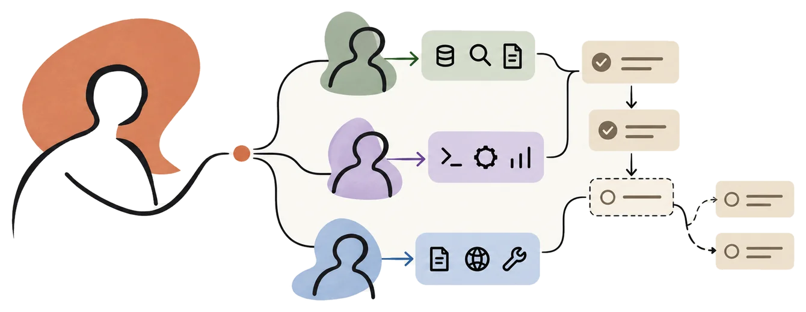
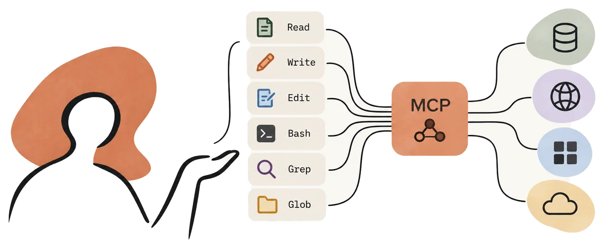
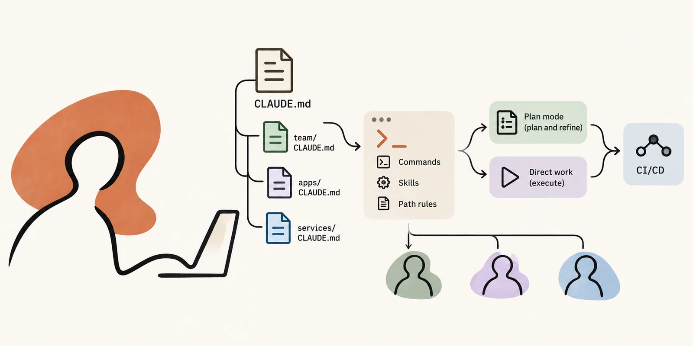
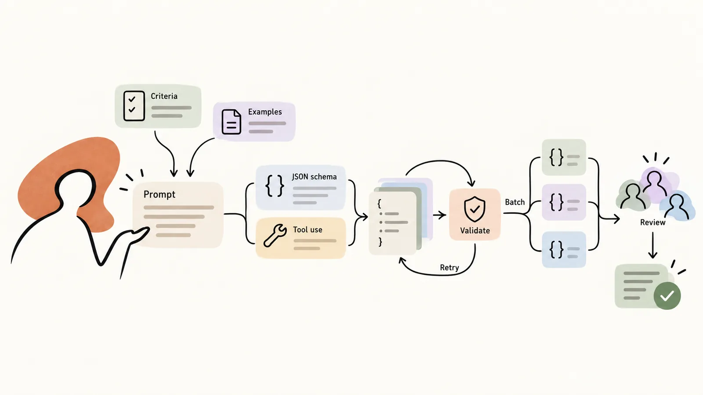
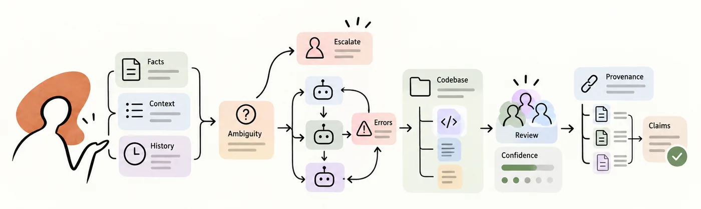

Exam guide breakdown
This page breaks the CCAR-F exam guide into its 5 domains and 30 task statements. For each task statement, it explains what the exam expects, quotes the guide’s own words, and shows where the product goes further. Use it to study one task statement at a time.
The exam guide on one page
The exam guide is the official reference for the CCAR-F exam: it lists the domains and the task statements that the exam tests. The exam has 60 questions, and each question states how many answers to select. Each exam uses 4 of the 6 scenarios of the guide.
The guide divides the exam into 5 domains. Each domain has a weight, and is split into task statements.
Claude Certified Architect – Foundations CCAR-F
27%
Agentic Architecture & Orchestration
Agents that run themselves.
- 1.1 The loop runs while Claude asks for tools
- 1.2 The coordinator splits the work and routes every result
- 1.3 A subagent sees none of the coordinator's conversation
- 1.4 A required order needs a code gate, not a prompt
- 1.5 Hooks block a tool call or clean its result
- 1.6 Chain fixed steps for known work, adapt for open work
- 1.7 Resume valid context, fork to compare, restart when stale
18%
Tool Design & MCP Integration
Tools that Claude can use well.
20%
Claude Code Configuration & Workflows
Claude Code for a team.
- 3.1 Team instructions live in the project CLAUDE.md, split into files
- 3.2 Share skills through the repository, and set how they run
- 3.3 A rule with a glob loads only for matching files
- 3.4 Plan first when the change is big or unclear
- 3.5 Refine with examples, failing tests and an interview
- 3.6 In CI, run
claude -pwith a schema and context
20%
Prompt Engineering & Structured Output
Prompts that give reliable output.
- 4.1 Name what to report, not how careful to be
- 4.2 Few-shot examples fix what instructions alone leave inconsistent
- 4.3 A schema guarantees the form, not the values
- 4.4 Retry with the exact errors, but not for missing facts
- 4.5 Batch only the work that can wait a day
- 4.6 A new instance reviews each file, then the files together
15%
Context Management & Reliability
Reliable systems.
- 5.1 Pin exact facts outside the summary, and trim the rest
- 5.2 Escalate on explicit criteria, not on mood or confidence
- 5.3 A failed subagent reports what failed, never a silent empty
- 5.4 Keep findings in files, keep exploration in subagents
- 5.5 Trust confidence scores only after labeled data calibrates them
- 5.6 Each claim keeps its source, date and conflicts
A scenario is a realistic production setting that frames a group of questions. Each exam picks 4 of the 6 scenarios. So each question sits on two axes: its domain says what it tests, and its scenario says where it happens.
| Scenario | Domain 1 | Domain 2 | Domain 3 | Domain 4 | Domain 5 |
|---|---|---|---|---|---|
| primary | primary | primary | |||
You are building a customer support resolution agent using the Claude Agent SDK. The agent handles high-ambiguity requests like returns, billing disputes, and account issues. It has access to your backend systems through custom Model Context Protocol (MCP) tools ( Primary domains
| |||||
| primary | primary | ||||
You are using Claude Code to accelerate software development. Your team uses it for code generation, refactoring, debugging, and documentation. You need to integrate it into your development workflow with custom slash commands, CLAUDE.md configurations, and understand when to use plan mode vs direct execution. Primary domains
| |||||
| primary | primary | primary | |||
You are building a multi-agent research system using the Claude Agent SDK. A coordinator agent delegates to specialized subagents: one searches the web, one analyzes documents, one synthesizes findings, and one generates reports. The system researches topics and produces comprehensive, cited reports. Primary domains
| |||||
| primary | primary | primary | |||
You are building developer productivity tools using the Claude Agent SDK. The agent helps engineers explore unfamiliar codebases, understand legacy systems, generate boilerplate code, and automate repetitive tasks. It uses the built-in tools (Read, Write, Bash, Grep, Glob) and integrates with Model Context Protocol (MCP) servers. Primary domains
| |||||
| primary | primary | ||||
You are integrating Claude Code into your Continuous Integration/Continuous Deployment (CI/CD) pipeline. The system runs automated code reviews, generates test cases, and provides feedback on pull requests. You need to design prompts that provide actionable feedback and minimize false positives. Primary domains
| |||||
| primary | primary | ||||
You are building a structured data extraction system using Claude. The system extracts information from unstructured documents, validates the output using JavaScript Object Notation (JSON) schemas, and maintains high accuracy. It must handle edge cases gracefully and integrate with downstream systems. Primary domains
| |||||
How we broke it down
The guide gives each task statement two lists of points. Knowledge of points say what you must know: a fact, a distinction or a reason. For example, 4.3-K2 is the difference between the three tool_choice settings. Skills in points say what you must be able to do in a situation. For example, 4.3-S2 is setting tool_choice to “any” when the document type is unknown.
The guide puts each point in one of the two lists. The guide has 30 task statements with 240 points: 113 Knowledge of and 127 Skills in.
K = Knowledge ofS = Skills in1.1-K2 = domain 1 · task statement 1.1 · Knowledge of, point 2.
The guide numbers the task statements but not their points, so the labels of the points are ours.
Each task statement opens in three levels:
- The Overview takes about 30 seconds.
- The Explanation takes about 3 minutes, with the guide’s own text and what the exam tests.
- The Depth has facts beyond the exam and code in popups. It also has the steps of the mock builder and of its build in Claude Code that use the task statement. The mock builder is the program that wrote the mocks of this academy (tab 2).
Two marks show where the guide and the Anthropic documentation differ:
- Guide only ends a point that the documentation does not state, or states differently. The sentence before it often says what the documentation says. For the exam, answer as the guide says.
- A box with For the exam and The product today appears where the difference could change your answer. It gives both answers side by side.
New to the Claude API or Claude Code? Read Before you start first. It shows the products of the exam and who runs the tools in each.
The block “The exam tests” in each part shows:
- The lines of the appendix of the guide (its section 17) for the task statement. The appendix lists the technologies and concepts that might appear on the exam, and the topics that the exam covers and does not cover.
- The sample questions of the guide for the task statement.
- How many questions of the 5 mocks test it.
Before you start: who runs the tools in each product
The exam asks about three products and one protocol:
- Claude API, a product
- Claude Code, a product
- Agent SDK, a product
- MCP (Model Context Protocol), a protocol
Fig. C shows who runs the tools in each. The button Glossary at the right edge of the screen explains the words of this tab.
Claude API
Claude returns a tool call. Your code runs a client tool, and Anthropic runs a server tool. A tool that Anthropic defines, such as bash, is also a client tool.
Claude Code
Claude Code is the layer around the model that gives the tools and manages the context. By default, it runs on your computer.
Agent SDK
The Agent SDK puts the agentic loop of Claude Code into your own code, with control over tools, permissions, cost limits and output. The SDK runs each tool that Claude asks for.
MCP, a protocol
MCP (Model Context Protocol) is an open source standard. An MCP server gives Claude Code access to your tools, databases and APIs. An agent of the Agent SDK can use MCP too.
Domain 1: Agentic Architecture & Orchestration
about 27% of the scored questions · 7 task statements

Agents that run themselves: the loop of tool calls, a coordinator with subagents, how subagents start and what each one gets. It also covers workflows with enforced steps and handoffs, hooks of the Agent SDK, how to split a task, and sessions that resume or fork.
1.1The loop runs while Claude asks for tools
Overview
30 secondsYour code sends a request to Claude and checks the field stop_reason of the response. "tool_use": run the tool and send the result back. "end_turn": stop.
The guide: “Design and implement agentic loops for autonomous task execution”
- The full loop. Use the arrow buttons to go through it one step at a time.
- Your code sends the task to Claude.
- Claude asks for tool A. Your code adds the response to the conversation history.
- Your code checks
stop_reason:"tool_use". - Your code runs tool A and adds the result to the conversation history.
- Your code sends the history again. Claude asks for tool B, and your code adds the response.
- Your code checks
stop_reason:"tool_use". - Your code runs tool B and adds the result to the conversation history.
- Your code sends the history again. Claude responds with the answer, and your code adds it.
- Your code checks
stop_reason:"end_turn". The loop stops.
"tool_use" and stops on "end_turn". Each part opens its detail. The popup of Your code sends the request shows the code of the loop.Explanation
3 minutes
Who decides. The guide makes a distinction. In model-driven decision-making, Claude reasons about which tool to call next, from the context. The other side is a decision tree or a sequence of tools that somebody sets up in advance. The memory of the loop: your code adds each tool result to the conversation history. That is how Claude can use the new information when it decides the next action.
Reads the words
Parse natural language signals to decide when the loop ends.
Stops mainly at a count
Make an arbitrary limit of iterations the main way to stop.
Looks for text
Treat text from the assistant as the sign that the work is complete.
Checks the field
Continue on "tool_use". Stop on "end_turn".
stop_reason (1.1-S1).The exam tests
The guide lists this topic as tested: “Agentic loop implementation: control flow based on stop_reason, tool result handling, loop termination conditions”. Under the Claude API, its list of technologies names “stop_reason values ("tool_use", "end_turn")”.
10 of the 300 questions in the 5 mocks of this academy test 1.1.
The guide’s own text
Exam guide, lines 115 to 127
Knowledge of:
- 1.1-K1 The agentic loop lifecycle: sending requests to Claude, inspecting stop_reason ("tool_use" vs "end_turn"), executing requested tools, and returning results for the next iteration
- 1.1-K2 How tool results are appended to conversation history so the model can reason about the next action
- 1.1-K3 The distinction between model-driven decision-making (Claude reasons about which tool to call next based on context) and pre-configured decision trees or tool sequences
Skills in:
- 1.1-S1 Implementing agentic loop control flow that continues when stop_reason is "tool_use" and terminates when stop_reason is "end_turn"
- 1.1-S2 Adding tool results to conversation context between iterations so the model can incorporate new information into its reasoning
- 1.1-S3 Avoiding anti-patterns such as parsing natural language signals to determine loop termination, setting arbitrary iteration caps as the primary stopping mechanism, or checking for assistant text content as a completion indicator
Depth
beyond the exam, code, and the mocks
The loop in code. Put the pointer on Your code sends the request in Fig. 1.1-1, or tap it. The popup shows the loop in Python.
stop_reason values on the Stop reasons page of the Claude API
"end_turn"in the exam guide"tool_use"in the exam guide"max_tokens""stop_sequence""pause_turn""refusal""model_context_window_exceeded"
In the mock builder and its build
- Step 5, Try again → uses 1.1-S3
Sources of part 1.1 (6)
- Exam guide, task statement 1.1 reference/exam-guide.md, line 115
- Exam guide, appendix (section 17) reference/exam-guide.md, line 1021
- Exam guide, appendix (section 17) reference/exam-guide.md, line 1006
- The questions of the 5 mocks mocks/mock-01.questions.json to mocks/mock-05.questions.json
- Exam guide, task statement 1.1 reference/exam-guide.md, lines 115 to 127
- Claude API documentation, Stop reasons and fallback (copy of 14 October 2026) academy/sources/2026-10-14-anthropic-docs-handling-stop-reasons.md, lines 14 to 21
1.2The coordinator splits the work and routes every result
Overview
30 secondsA coordinator agent splits the task, calls only the subagents that the query needs, and is the only path between them. Each subagent starts without the conversation of the coordinator, so a split that is too narrow leaves gaps that no subagent can see.
The guide: “Orchestrate multi-agent systems with coordinator-subagent patterns”
- The coordinator and its four subagents. Use the arrow buttons to go through it one step at a time.
- The coordinator sends a task prompt to the web search subagent.
- It sends a task prompt to the document analysis subagent.
- Each subagent works in its own context and sends only its result back.
- The coordinator sends the findings to the synthesis subagent.
- The synthesis has gaps, so the coordinator sends targeted queries again to the search and analysis subagents.
- The report subagent gets its task, and its result comes back.
- No path joins two subagents. All communication goes through the coordinator.
Explanation
3 minutes
The hub. The guide routes all communication of the subagents through the coordinator, for observability, one way to handle errors, and control of the information (1.2-S4). In the Claude Code documentation too, the main agent manages all work of its subagents. Only the final message of a subagent returns to it.
Isolated context. A subagent does not get the conversation history of the coordinator (1.2-K2). Part 1.3 shows what the coordinator must pass.
Choose the subagents. The coordinator splits the task, delegates, joins the results, and decides which subagents a query needs (1.2-K3). A sample prompt in the Claude API documentation also tells Claude to use one subagent, not several, when one is enough (1.2-S1).
Split the scope. The guide gives each subagent a distinct subtopic or source type, so that the work does not repeat (1.2-S2). A split that is too narrow leaves parts of a broad topic with no coverage (1.2-K4). In sample question 7 of the guide, each subagent did its task correctly. The problem was what they were given.
Refine. The coordinator checks the synthesis for gaps and sends targeted queries to the search and analysis subagents. Then it runs the synthesis again, until the coverage is sufficient (1.2-S3).
Guide onlyThe exam tests
Among the topics, the guide names “Multi-agent orchestration: coordinator-subagent patterns, task decomposition, parallel subagent execution, iterative refinement loops”. 13 of the 300 questions in the 5 mocks of this academy test 1.2.
The guide’s own text
Exam guide, lines 129 to 146
Knowledge of:
- 1.2-K1 Hub-and-spoke architecture where a coordinator agent manages all inter-subagent communication, error handling, and information routing
- 1.2-K2 How subagents operate with isolated context—they do not inherit the coordinator's conversation history automatically
- 1.2-K3 The role of the coordinator in task decomposition, delegation, result aggregation, and deciding which subagents to invoke based on query complexity
- 1.2-K4 Risks of overly narrow task decomposition by the coordinator, leading to incomplete coverage of broad research topics
Skills in:
- 1.2-S1 Designing coordinator agents that analyze query requirements and dynamically select which subagents to invoke rather than always routing through the full pipeline
- 1.2-S2 Partitioning research scope across subagents to minimize duplication (e.g., assigning distinct subtopics or source types to each agent)
- 1.2-S3 Implementing iterative refinement loops where the coordinator evaluates synthesis output for gaps, re-delegates to search and analysis subagents with targeted queries, and re-invokes synthesis until coverage is sufficient
- 1.2-S4 Routing all subagent communication through the coordinator for observability, consistent error handling, and controlled information flow
Depth
beyond the exam, code, and the mocks
The exam tests the points of the guide above. These facts of the Anthropic documentation go further, for work in production.
- In Claude Code, subagents that Claude named can also message each other. The guide routes all communication through the coordinator. Guide only
- A subagent can start subagents of its own, so the hub can grow into a tree. The guide shows one hub with one layer.
- Delegation multiplies cost and time when the tasks are small.
The code: a coordinator agent in Python
In the mock builder and its build
No step of the mock builder uses a point of 1.2. The mock builder uses no subagent. Part 1.3 gives the reason.
Sources of part 1.2 (20)
- Exam guide, task statement 1.2 reference/exam-guide.md, line 129
- Exam guide, 1.2-K1 reference/exam-guide.md, line 133
- Exam guide, scenario 3 reference/exam-guide.md, line 85
- Exam guide, 1.2-S4 reference/exam-guide.md, line 146
- Claude Code documentation, Agent teams (copy of 14 October 2026) academy/sources/2026-10-14-claude-code-docs-agent-teams.md, line 42
- Claude Code documentation, Agent SDK, Subagents (copy of 14 October 2026) academy/sources/2026-10-14-claude-code-docs-agent-sdk-subagents.md, line 26
- Exam guide, 1.2-K2 reference/exam-guide.md, line 134
- Exam guide, 1.2-K3 reference/exam-guide.md, line 135
- Claude API documentation, Prompting Claude Opus 5 (copy of 14 October 2026) academy/sources/2026-10-14-anthropic-docs-prompting-claude-opus-5.md, line 74
- Exam guide, 1.2-S2 reference/exam-guide.md, line 144
- Exam guide, 1.2-K4 reference/exam-guide.md, line 139
- Exam guide, sample question 7 reference/exam-guide.md, line 832
- Exam guide, 1.2-S3 reference/exam-guide.md, line 145
- Exam guide, appendix (section 17) reference/exam-guide.md, line 1022
- The questions of the 5 mocks mocks/mock-01.questions.json to mocks/mock-05.questions.json
- Exam guide, task statement 1.2 reference/exam-guide.md, lines 129 to 146
- Claude Code documentation, Agent teams (copy of 14 October 2026) academy/sources/2026-10-14-claude-code-docs-agent-teams.md, line 41
- Claude Code documentation, Agent SDK, Subagents (copy of 14 October 2026) academy/sources/2026-10-14-claude-code-docs-agent-sdk-subagents.md, line 618
- Claude API documentation, Prompting Claude Opus 5 (copy of 14 October 2026) academy/sources/2026-10-14-anthropic-docs-prompting-claude-opus-5.md, line 71
- Mock decision 0026 docs/decisions/0026-the-build-guide-does-not-show-mcp-subagents-hooks-or-sessions-at-work.md, line 10
1.3A subagent sees none of the coordinator's conversation
Overview
30 secondsA coordinator starts each subagent with a call of the Task tool. The subagent does not see the conversation of the coordinator, so the prompt of the call must hold the complete findings and their sources.
The guide: “Configure subagent invocation, context passing, and spawning”
- A coordinator and three subagents. Use the arrow buttons to go through it one step at a time.
- The coordinator, whose
allowedToolshas “Task”, sends three Task calls in one response. - Subagent A gets only the prompt of its call, with the findings and their sources.
- In the same response, subagent B gets only the prompt of its call, with the findings and their sources.
- In the same response, subagent C gets only the prompt of its call, with the findings and their sources.
- The conversation history of the coordinator is not passed.
- Only the final message of each subagent comes back.
allowedTools rule are those of the guide. The product today calls the tool Agent.Explanation
3 minutes
Spawn. The guide: a coordinator starts a subagent with the Task tool, and its allowedTools must include “Task”.
- For the exam
allowedToolsmust include “Task”, so that the coordinator can start subagents.- The product today
- The tool is now named Agent, and it runs even when
allowed_toolsdoes not name it. Detail in the Depth
Context. Only the prompt of the call reaches a subagent that is not a fork. The subagent does not get the conversation history or the tool results of the parent. Only the final message of the subagent goes back. So the coordinator puts the complete findings of earlier agents in the prompt (1.3-S1). It keeps the content apart from its metadata, such as the source URL, to keep the attribution (1.3-S2). The Claude API documentation also separates the content and the source of a document.
Definitions. An AgentDefinition gives each type of subagent a description, a system prompt and a list of tools (1.3-K3). Claude chooses a subagent by its description. A tool that the list leaves out is not in its session.
Parallel. One response of Claude can hold several tool calls. So the coordinator starts parallel subagents with several Task calls in one response, not across separate turns (1.3-S3). Subagents can run at the same time.
Goals, not steps. A coordinator prompt gives research goals and quality criteria, not step-by-step procedures, so that a subagent can adapt (1.3-S4). The Claude API documentation also asks for clear success criteria.
Fork. A fork of a session starts with a copy of the history. The original does not change. So two approaches can start from one shared analysis (1.3-K4). Part 1.7 explains sessions.
The exam tests
Among the technologies, the guide names “Claude Agent SDK — agent definitions, agentic loops, stop_reason handling, hooks (PostToolUse, tool call interception), subagent spawning via Task tool, allowedTools configuration” Among the topics: “Subagent context management: explicit context passing, structured state persistence, crash recovery using manifests”. 12 of the 300 questions in the 5 mocks of this academy test 1.3.
The guide’s own text
Exam guide, lines 148 to 162
Knowledge of:
- 1.3-K1 The Task tool as the mechanism for spawning subagents, and the requirement that allowedTools must include "Task" for a coordinator to invoke subagents
- 1.3-K2 That subagent context must be explicitly provided in the prompt—subagents do not automatically inherit parent context or share memory between invocations
- 1.3-K3 The AgentDefinition configuration including descriptions, system prompts, and tool restrictions for each subagent type
- 1.3-K4 Fork-based session management for exploring divergent approaches from a shared analysis baseline
Skills in:
- 1.3-S1 Including complete findings from prior agents directly in the subagent's prompt (e.g., passing web search results and document analysis outputs to the synthesis subagent)
- 1.3-S2 Using structured data formats to separate content from metadata (source URLs, document names, page numbers) when passing context between agents to preserve attribution
- 1.3-S3 Spawning parallel subagents by emitting multiple Task tool calls in a single coordinator response rather than across separate turns
- 1.3-S4 Designing coordinator prompts that specify research goals and quality criteria rather than step-by-step procedural instructions, to enable subagent adaptability
Depth
beyond the exam, code, and the mocks
Here facts of the Anthropic documentation of 14 October 2026 differ from points of the guide. For the exam, answer as the guide says.
- The product renamed the tool Agent in version 2.1.63. In the current Agent SDK,
allowed_tools(allowedToolsin the guide) only approves a tool in advance. The Agent tool runs even when the list does not name it.
The exam tests the points of the guide above. These facts of the Anthropic documentation go further, for work in production.
- A subagent is not empty: by default it also loads the CLAUDE.md of the project, unless its definition turns that off. The guide says only that the context must be in the prompt.
- A subagent can start subagents of its own. Each one makes its own API requests, so one prompt can grow into a tree of agents and costs.
- Claude Code also has a fork subagent, which inherits the whole conversation. It is not the
fork_sessionof the guide, and not the context: fork of a skill (3.2), which starts with no history.
The code: two AgentDefinitions in Python
In the mock builder and its build
- Step 0, Prepare the guide records → uses 1.3-S2
The mock builder itself uses no subagent. No step needs one: a subagent is necessary only when code cannot know before the call what the model must read.
Sources of part 1.3 (28)
- Exam guide, task statement 1.3 reference/exam-guide.md, line 148
- Claude Code documentation, Agent SDK, Subagents (copy of 14 October 2026) academy/sources/2026-10-14-claude-code-docs-agent-sdk-subagents.md, line 178
- Claude Code documentation, Agent SDK, Subagents (copy of 14 October 2026) academy/sources/2026-10-14-claude-code-docs-agent-sdk-subagents.md, line 26
- Exam guide, 1.3-K1 reference/exam-guide.md, line 152
- Claude Code documentation, Agent SDK, Subagents (copy of 14 October 2026) academy/sources/2026-10-14-claude-code-docs-agent-sdk-subagents.md, line 188
- Exam guide, 1.3-S1 reference/exam-guide.md, line 159
- Claude API documentation, Prompting best practices (copy of 14 October 2026) academy/sources/2026-10-14-anthropic-docs-claude-prompting-best-practices.md, line 252
- Claude Code documentation, Agent SDK, Subagents (copy of 14 October 2026) academy/sources/2026-10-14-claude-code-docs-agent-sdk-subagents.md, lines 147 to 149
- Claude Code documentation, Agent SDK, Subagents (copy of 14 October 2026) academy/sources/2026-10-14-claude-code-docs-agent-sdk-subagents.md, line 210
- Claude Code documentation, Agent SDK, Subagents (copy of 14 October 2026) academy/sources/2026-10-14-claude-code-docs-agent-sdk-subagents.md, line 547
- Claude API documentation, Parallel tool use (copy of 14 October 2026) academy/sources/2026-10-14-anthropic-docs-parallel-tool-use.md, line 11
- Exam guide, 1.3-S3 reference/exam-guide.md, line 161
- Claude Code documentation, Agent SDK, Subagents (copy of 14 October 2026) academy/sources/2026-10-14-claude-code-docs-agent-sdk-subagents.md, line 27
- Exam guide, 1.3-S4 reference/exam-guide.md, line 162
- Claude API documentation, Prompting best practices (copy of 14 October 2026) academy/sources/2026-10-14-anthropic-docs-claude-prompting-best-practices.md, line 902
- Claude Code documentation, Agent SDK, Sessions (copy of 14 October 2026) academy/sources/2026-10-14-claude-code-docs-agent-sdk-sessions.md, line 290
- Exam guide, appendix (section 17) reference/exam-guide.md, line 999
- Exam guide, appendix (section 17) reference/exam-guide.md, line 1023
- The questions of the 5 mocks mocks/mock-01.questions.json to mocks/mock-05.questions.json
- Exam guide, task statement 1.3 reference/exam-guide.md, lines 148 to 162
- Claude Code documentation, Subagents (copy of 14 October 2026) academy/sources/2026-10-14-claude-code-docs-sub-agents.md, line 490
- Claude Code documentation, Agent SDK, Permissions (copy of 14 October 2026) academy/sources/2026-10-14-claude-code-docs-agent-sdk-permissions.md, line 76
- Claude Code documentation, Agent SDK, Permissions (copy of 14 October 2026) academy/sources/2026-10-14-claude-code-docs-agent-sdk-permissions.md, line 108
- Claude Code documentation, Agent SDK, Subagents (copy of 14 October 2026) academy/sources/2026-10-14-claude-code-docs-agent-sdk-subagents.md, line 189
- Claude Code documentation, Agent SDK, Subagents (copy of 14 October 2026) academy/sources/2026-10-14-claude-code-docs-agent-sdk-subagents.md, line 618
- Claude Code documentation, Subagents (copy of 14 October 2026) academy/sources/2026-10-14-claude-code-docs-sub-agents.md, line 1158
- Mock decision 0026 docs/decisions/0026-the-build-guide-does-not-show-mcp-subagents-hooks-or-sessions-at-work.md, line 10
- Mock decision 0012 docs/decisions/0012-step-4-an-independent-model-call-checks-each-question.md, line 34
1.4A required order needs a code gate, not a prompt
Overview
30 secondsWhen a step must come first, such as identity verification before a refund, code blocks the later tool call until the step is done. The reason: a prompt instruction can fail. When the agent escalates, it gives the human a structured summary, because the human does not see the conversation.
The guide: “Implement multi-step workflows with enforcement and handoff patterns”
A verified customer ID
The hook allows the call, and the refund runs.
No verified customer ID
The hook denies the call with a reason, and the agent goes back.
The agent escalates
The summary has the customer ID, root cause, refund amount and recommended action. The human has no transcript.
Explanation
3 minutes
Code or prompt. The guide separates enforcement by code, such as hooks and prerequisite gates, from guidance in a prompt (1.4-K1). The Claude Code documentation says the same: Claude treats its instructions as context, not as enforced configuration. To block an action whatever Claude decides, use a PreToolUse hook.
A prompt can fail. When compliance must be certain, such as identity verification before a financial operation, a prompt alone has a failure rate above zero (1.4-K2). Sample question 1 of the guide gives the reason: code gives a guarantee, a prompt gives only a probability.
The gate. Code blocks process_refund until get_customer has returned a verified customer ID (1.4-S1). In the Agent SDK, a PreToolUse hook gets each tool call before it runs, and can block it. It sees one call: whether get_customer has returned an ID is state that your code keeps. A deny carries a reason, so the model knows why and can call get_customer first.
Many concerns. A request with several issues becomes distinct items. The agent investigates each one, then joins them in one resolution (1.4-S2). The guide says “using shared context”. In the Claude API documentation, agents that work in parallel have their own isolated context. Guide only
The handoff. When the agent escalates, it writes a structured summary. The summary has the customer ID, root cause, refund amount and recommended action, because the human does not see the transcript (1.4-K3, 1.4-S3). Guide only
The exam tests
Among the technologies, the guide names “Claude Agent SDK — agent definitions, agentic loops, stop_reason handling, hooks (PostToolUse, tool call interception), subagent spawning via Task tool, allowedTools configuration”. 11 of the 300 questions in the 5 mocks of this academy test 1.4.
Sample question 1 of the guide matches 1.4-S1: its correct answer is a programmatic prerequisite.
The guide’s own text
Exam guide, lines 166 to 178
Knowledge of:
- 1.4-K1 The difference between programmatic enforcement (hooks, prerequisite gates) and prompt-based guidance for workflow ordering
- 1.4-K2 When deterministic compliance is required (e.g., identity verification before financial operations), prompt instructions alone have a non-zero failure rate
- 1.4-K3 Structured handoff protocols for mid-process escalation that include customer details, root cause analysis, and recommended actions
Skills in:
- 1.4-S1 Implementing programmatic prerequisites that block downstream tool calls until prerequisite steps have completed (e.g., blocking process_refund until get_customer has returned a verified customer ID)
- 1.4-S2 Decomposing multi-concern customer requests into distinct items, then investigating each in parallel using shared context before synthesizing a unified resolution
- 1.4-S3 Compiling structured handoff summaries (customer ID, root cause, refund amount, recommended action) when escalating to human agents who lack access to the conversation transcript
Depth
beyond the exam, code, and the mocks
The exam tests the points of the guide above. These facts of the Anthropic documentation go further, for work in production.
- A gate that is too slow fails closed: if a PreToolUse hook does not answer before its timeout, the tool call does not run.
- If your code runs a prerequisite and the call that depends on it in parallel, the dependent call can fail. Your code then returns an error result.
- A hook that allows a call does not skip the deny and ask rules of the permissions.
The code: a PreToolUse hook in Python
In the mock builder and its build
- Step 1, Plan the mock → uses 1.4-K2
- Step 2, Write the question → uses 1.4-K2
- Step 3, Check by code → uses 1.4-K1, 1.4-K2
- Step 4, Check by a model → uses 1.4-K2
The mock builder uses no hook. It takes the general idea: an instruction to the writer can fail, so code or a model checks each rule.
Sources of part 1.4 (22)
- Exam guide, task statement 1.4 reference/exam-guide.md, line 166
- Claude Code documentation, Hooks guide (copy of 14 October 2026) academy/sources/2026-10-14-claude-code-docs-hooks-guide.md, line 9
- Exam guide, section 8, exercise reference/exam-guide.md, line 682
- Exam guide, 1.4-K1 reference/exam-guide.md, line 170
- Claude Code documentation, Memory (copy of 14 October 2026) academy/sources/2026-10-14-claude-code-docs-memory.md, line 24
- Exam guide, 1.4-K2 reference/exam-guide.md, line 171
- Exam guide, sample question 1 reference/exam-guide.md, line 750
- Exam guide, 1.4-S1 reference/exam-guide.md, line 176
- Claude Code documentation, Agent SDK, Hooks (copy of 14 October 2026) academy/sources/2026-10-14-claude-code-docs-agent-sdk-hooks.md, line 149
- Claude Code documentation, Agent SDK, Hooks (copy of 14 October 2026) academy/sources/2026-10-14-claude-code-docs-agent-sdk-hooks.md, line 354
- Exam guide, 1.4-S2 reference/exam-guide.md, line 177
- Claude API documentation, Managed Agents, Multiagent orchestration (copy of 14 October 2026) academy/sources/2026-10-14-anthropic-docs-multiagent-orchestration.md, line 13
- Exam guide, 1.4-S3 reference/exam-guide.md, line 178
- Exam guide, appendix (section 17) reference/exam-guide.md, line 999
- The questions of the 5 mocks mocks/mock-01.questions.json to mocks/mock-05.questions.json
- Exam guide, sample question 1, answer A reference/exam-guide.md, line 742
- Exam guide, task statement 1.4 reference/exam-guide.md, lines 166 to 178
- Claude Code documentation, Agent SDK, Hooks (copy of 14 October 2026) academy/sources/2026-10-14-claude-code-docs-agent-sdk-hooks.md, line 793
- Claude API documentation, Parallel tool use (copy of 14 October 2026) academy/sources/2026-10-14-anthropic-docs-parallel-tool-use.md, line 1578
- Claude Code documentation, Agent SDK, Permissions (copy of 14 October 2026) academy/sources/2026-10-14-claude-code-docs-agent-sdk-permissions.md, line 17
- Mock decision 0026 docs/decisions/0026-the-build-guide-does-not-show-mcp-subagents-hooks-or-sessions-at-work.md, line 10
- Build guide, step 2 docs/build-guide/step-2-write-the-question.md, line 52
1.5Hooks block a tool call or clean its result
Overview
30 secondsA hook is your code at a fixed point of each tool call. Before the call, it can block it. After the call, it can replace the result before Claude sees it. So code, not the model, enforces a rule and cleans the data. A hook after the call cannot undo the action, because the tool has already run. So a rule that must stop an action, such as a refund limit, needs a hook before the call.
The guide: “Apply Agent SDK hooks for tool call interception and data normalization”
- Two hooks around one tool call. Use the arrow buttons to go through it one step at a time.
- Claude asks for a tool.
- The PreToolUse hook, your code, sees the call first.
- A deny sends a reason back to Claude.
- An allow lets the tool run.
- The result goes to the PostToolUse hook, your code.
- PostToolUse replaces the result with
updatedToolOutputbefore Claude sees it. - For example, it turns Unix time into ISO 8601.
Explanation
3 minutes
Before the call. A hook intercepts an outgoing tool call to enforce a rule, such as no refund above a threshold (1.5-K2). In the Agent SDK, a PreToolUse hook that rejects a call stops it, and Claude gets the rejection message instead. In the guide, the hook then redirects the case, for example to a human (1.5-S2). The Anthropic documentation has no redirect field: a deny gives Claude its reason (see 1.4). A hook can also answer “ask”, to ask the user. Guide only
After the call. A PostToolUse hook makes the data of different MCP (Model Context Protocol) tools the same before the agent uses it. Examples are Unix timestamps, ISO 8601 dates and numeric status codes (1.5-K1, 1.5-S1). The field updatedToolOutput replaces the output before Claude sees it, for any tool, not only MCP tools. Guide only A matcher, a pattern of tool names, selects the tools, for example each MCP tool.
A guarantee. The guide contrasts the deterministic guarantee of a hook with the probable compliance of a prompt (1.5-K3, 1.5-S3). Part 1.4 explains this contrast. A deny of a hook holds in each permission mode, also in the mode that skips all approvals.
The exam tests
Among the technologies, the guide names “Claude Agent SDK — agent definitions, agentic loops, stop_reason handling, hooks (PostToolUse, tool call interception), subagent spawning via Task tool, allowedTools configuration”. 10 of the 300 questions in the 5 mocks of this academy test 1.5.
The guide’s own text
Exam guide, lines 180 to 192
Knowledge of:
- 1.5-K1 Hook patterns (e.g., PostToolUse) that intercept tool results for transformation before the model processes them
- 1.5-K2 Hook patterns that intercept outgoing tool calls to enforce compliance rules (e.g., blocking refunds above a threshold)
- 1.5-K3 The distinction between using hooks for deterministic guarantees versus relying on prompt instructions for probabilistic compliance
Skills in:
- 1.5-S1 Implementing PostToolUse hooks to normalize heterogeneous data formats (Unix timestamps, ISO 8601, numeric status codes) from different MCP tools before the agent processes them
- 1.5-S2 Implementing tool call interception hooks that block policy-violating actions (e.g., refunds exceeding $500) and redirect to alternative workflows (e.g., human escalation)
- 1.5-S3 Choosing hooks over prompt-based enforcement when business rules require guaranteed compliance
Depth
beyond the exam, code, and the mocks
The exam tests the points of the guide above. These facts of the Anthropic documentation go further, for work in production.
- MCP output that a hook replaces gets no schema check, and a hook that removes error details can mislead Claude.
- Claude Code also has prompt hooks, which ask a model. Only a hook that is code is deterministic.
- A PostToolUse hook that times out does not stop the turn: Claude gets the original result. So a slow normalizer lets the raw data through.
The code: a PostToolUse hook that replaces a result
In the mock builder and its build
No step of the mock builder uses a point of 1.5. The mock builder uses no hook. It calls the plain API, not the Agent SDK, so it has no SDK hooks. Step 3 has the nearest example: a rule with one exact answer is checked by code (task statement 1.4).
Sources of part 1.5 (21)
- Claude Code documentation, Hooks reference (copy of 14 October 2026) academy/sources/2026-10-14-claude-code-docs-hooks.md, line 2189
- Exam guide, task statement 1.5 reference/exam-guide.md, line 180
- Claude Code documentation, Agent SDK, Hooks (copy of 14 October 2026) academy/sources/2026-10-14-claude-code-docs-agent-sdk-hooks.md, line 21
- Exam guide, 1.5-K3 reference/exam-guide.md, line 186
- Exam guide, 1.5-K2 reference/exam-guide.md, line 185
- Claude Code documentation, Agent SDK, The agent loop (copy of 14 October 2026) academy/sources/2026-10-14-claude-code-docs-agent-sdk-agent-loop.md, line 362
- Exam guide, 1.5-S2 reference/exam-guide.md, line 191
- Claude Code documentation, Agent SDK, Hooks (copy of 14 October 2026) academy/sources/2026-10-14-claude-code-docs-agent-sdk-hooks.md, line 250
- Exam guide, 1.5-S1 reference/exam-guide.md, line 190
- Claude Code documentation, Agent SDK, Hooks (copy of 14 October 2026) academy/sources/2026-10-14-claude-code-docs-agent-sdk-hooks.md, line 251
- Claude Code documentation, Agent SDK, Hooks (copy of 14 October 2026) academy/sources/2026-10-14-claude-code-docs-agent-sdk-hooks.md, line 480
- Claude Code documentation, Agent SDK, Permissions (copy of 14 October 2026) academy/sources/2026-10-14-claude-code-docs-agent-sdk-permissions.md, line 96
- Exam guide, appendix (section 17) reference/exam-guide.md, line 999
- The questions of the 5 mocks mocks/mock-01.questions.json to mocks/mock-05.questions.json
- Exam guide, task statement 1.5 reference/exam-guide.md, lines 180 to 192
- Claude Code documentation, Hooks reference (copy of 14 October 2026) academy/sources/2026-10-14-claude-code-docs-hooks.md, line 2191
- Claude Code documentation, Hooks guide (copy of 14 October 2026) academy/sources/2026-10-14-claude-code-docs-hooks-guide.md, line 845
- Claude Code documentation, Agent SDK, Hooks (copy of 14 October 2026) academy/sources/2026-10-14-claude-code-docs-agent-sdk-hooks.md, line 794
- Mock decision 0026 docs/decisions/0026-the-build-guide-does-not-show-mcp-subagents-hooks-or-sessions-at-work.md, line 10
- Mock decision 0029 docs/decisions/0029-the-design-of-step-2-the-writer-call.md, line 131
- Build guide, step 3 docs/build-guide/step-3-check-by-code.md, line 30
1.6Chain fixed steps for known work, adapt for open work
Overview
30 secondsWhen the steps of a task are known before it starts, such as a review of many files, use a fixed chain. It has one pass for each file, then one pass across the files. When the task is open, map the structure first and let each finding change the plan.
The guide: “Design task decomposition strategies for complex workflows”
Explanation
3 minutes
A chain. Prompt chaining splits a task into a sequence of separate calls. The Claude API documentation uses it when you must see each output or enforce a fixed structure. Each step is a separate call, so you can log it, check it or branch at any point.
A review in passes. A large code review becomes one local pass for each file, plus a separate pass across the files (1.6-K2, 1.6-S2). The guide gives the reason: attention dilution, a loss of attention when the model processes many files at once. The Anthropic documentation does not use this term. Guide only A larger context window does not fix it.
An adaptive plan. For an open investigation, the plan makes its next subtasks from what each step finds (1.6-K3). This is how the loop of Claude Code works: each step depends on what the step before found. Planning first is most useful when the approach is not clear or the code is not familiar.
The choice. Use a chain for a predictable review with many aspects, and a dynamic decomposition for an open investigation (1.6-S1). Task statement 4.6 uses the same split of a review (4.6-S2).
The exam tests
Among the technologies, the guide names “Prompt chaining — sequential task decomposition into focused passes”. 11 of the 300 questions in the 5 mocks of this academy test 1.6.
Sample question 12 of the guide fits 1.6-S2: its correct answer is a pass for each file, then an integration pass.
The guide’s own text
Exam guide, lines 196 to 208
Knowledge of:
- 1.6-K1 When to use fixed sequential pipelines (prompt chaining) versus dynamic adaptive decomposition based on intermediate findings
- 1.6-K2 Prompt chaining patterns that break reviews into sequential steps (e.g., analyze each file individually, then run a cross-file integration pass)
- 1.6-K3 The value of adaptive investigation plans that generate subtasks based on what is discovered at each step
Skills in:
- 1.6-S1 Selecting task decomposition patterns appropriate to the workflow: prompt chaining for predictable multi-aspect reviews, dynamic decomposition for open-ended investigation tasks
- 1.6-S2 Splitting large code reviews into per-file local analysis passes plus a separate cross-file integration pass to avoid attention dilution
- 1.6-S3 Decomposing open-ended tasks (e.g., "add comprehensive tests to a legacy codebase") by first mapping structure, identifying high-impact areas, then creating a prioritized plan that adapts as dependencies are discovered
Depth
beyond the exam, code, and the mocks
The exam tests the points of the guide above. These facts of the Anthropic documentation go further, for work in production.
- Claude Code can run the chain as a workflow: a script reviews each changed file, then merges the findings. In a workflow, the script holds the plan. With a fixed list of passes, it is nearer to the fixed chain of the guide than to its dynamic decomposition.
- For a large change, the command /batch splits the work across 5 to 30 subagents, each in its own copy of the repository.
- With adaptive thinking, Claude decides how much to think. The Claude API documentation says that Claude then handles most reasoning in several steps by itself.
The code: a workflow with one agent for each file
In the mock builder and its build
- Step 1, Plan the mock → uses 1.6-K1, 1.6-S1
- Step 6, Check the complete mock → uses 1.6-K2
Step 1 takes only one part of 1.6: the work of a mock is known before it starts, so code fixes the plan first. It is not a prompt chain.
Sources of part 1.6 (21)
- Exam guide, task statement 1.6 reference/exam-guide.md, line 196
- Exam guide, 1.6-K1 reference/exam-guide.md, line 200
- Exam guide, 1.6-S3 reference/exam-guide.md, line 208
- Claude API documentation, Prompting best practices (copy of 14 October 2026) academy/sources/2026-10-14-anthropic-docs-claude-prompting-best-practices.md, line 939
- Claude API documentation, Prompting best practices (copy of 14 October 2026) academy/sources/2026-10-14-anthropic-docs-claude-prompting-best-practices.md, line 941
- Exam guide, 1.6-S2 reference/exam-guide.md, line 207
- Exam guide, sample question 12 reference/exam-guide.md, line 900
- Exam guide, 1.6-K3 reference/exam-guide.md, line 202
- Claude Code documentation, How Claude Code works (copy of 14 October 2026) academy/sources/2026-10-14-claude-code-docs-how-claude-code-works.md, line 21
- Claude Code documentation, Best practices (copy of 14 October 2026) academy/sources/2026-10-14-claude-code-docs-best-practices.md, line 110
- Exam guide, 1.6-S1 reference/exam-guide.md, line 206
- Exam guide, 4.6-S2 reference/exam-guide.md, line 534
- Exam guide, appendix (section 17) reference/exam-guide.md, line 1012
- The questions of the 5 mocks mocks/mock-01.questions.json to mocks/mock-05.questions.json
- Exam guide, sample question 12, answer A reference/exam-guide.md, line 890
- Exam guide, task statement 1.6 reference/exam-guide.md, lines 196 to 208
- Claude Code documentation, Workflows (copy of 14 October 2026) academy/sources/2026-10-14-claude-code-docs-workflows.md, line 273
- Claude Code documentation, Workflows (copy of 14 October 2026) academy/sources/2026-10-14-claude-code-docs-workflows.md, line 30
- Claude Code documentation, Best practices (copy of 14 October 2026) academy/sources/2026-10-14-claude-code-docs-best-practices.md, line 492
- Build guide, step 1 docs/build-guide/step-1-plan-the-mock.md, line 39
- Review of mock decisions 0003 to 0018 docs/reviews/review-decisions-0003-to-0018.md, line 23
1.7Resume valid context, fork to compare, restart when stale
Overview
30 secondsResume a named session when its earlier context is mostly valid, and tell it which files changed. Fork a session to try two approaches from one analysis. Start a new session with a structured summary when the old tool results are stale.
The guide: “Manage session state, resumption, and forking”
Context mostly valid
Tell it which files changed.
Compare two approaches
The original session does not change.
Tool results stale
Give it a structured summary.
Explanation
3 minutes
Resume by name. The guide resumes a named conversation with --resume and the name of the session (1.7-K1, 1.7-S1). The Claude Code documentation advises one named session for each workstream. In the Agent SDK, a resume takes the session ID. A name works in the Claude Code CLI. Guide only
Fork. fork_session makes branches from one shared analysis, for example to compare two refactoring approaches (1.7-K2, 1.7-S2). In the CLI, the flag is --fork-session, together with --resume. fork_session is the option of the Python Agent SDK. The exam uses the name of the guide.
Stale results. A resume brings back the full history, with the old tool calls and their results. When those tool results are stale, the guide prefers a new session with a structured summary (1.7-K4). For a session on another machine, the Claude Code documentation advises to capture the results and pass them into a fresh session.
Changed files. When the earlier context is still mostly valid, tell the resumed session which files changed, so it analyzes only those again (1.7-K3, 1.7-S4). Guide only
The exam tests
Among the technologies, the guide names “Session management — session resumption, fork_session, named sessions, session context isolation”. 13 of the 300 questions in the 5 mocks of this academy test 1.7.
The guide’s own text
Exam guide, lines 210 to 227
Knowledge of:
- 1.7-K1 Named session resumption using --resume \<session-name\> to continue a specific prior conversation
- 1.7-K2 fork_session for creating independent branches from a shared analysis baseline to explore divergent approaches
- 1.7-K3 The importance of informing the agent about changes to previously analyzed files when resuming sessions after code modifications
- 1.7-K4 Why starting a new session with a structured summary is more reliable than resuming with stale tool results
Skills in:
- 1.7-S1 Using --resume with session names to continue named investigation sessions across work sessions
- 1.7-S2 Using fork_session to create parallel exploration branches (e.g., comparing two testing strategies or refactoring approaches from a shared codebase analysis)
- 1.7-S3 Choosing between session resumption (when prior context is mostly valid) and starting fresh with injected summaries (when prior tool results are stale)
- 1.7-S4 Informing a resumed session about specific file changes for targeted re-analysis rather than requiring full re-exploration
Depth
beyond the exam, code, and the mocks
The exam tests the points of the guide above. These facts of the Anthropic documentation go further, for work in production.
- A fork branches the conversation, not the files. Two forks in one folder change the same files. The guide says “independent branches”. Guide only
- A resume replays the saved output of hooks in the middle of a session, so values such as timestamps become stale. Hooks at the start of a session run again.
- On a Pro or Max plan, Claude Code also offers a third way. It can resume from a summary of the old history, when a session was inactive for about an hour and is over 100,000 tokens.
The code: a fork in the Agent SDK
In the mock builder and its build
The mock builder uses no session. The build in Claude Code shows 1.7-K4, and 1.7-S3 only in part: HANDOFF.md is a structured summary for the next session. No record shows --resume or fork_session.
Sources of part 1.7 (23)
- Exam guide, task statement 1.7 reference/exam-guide.md, line 210
- Claude Code documentation, How Claude Code works (copy of 14 October 2026) academy/sources/2026-10-14-claude-code-docs-how-claude-code-works.md, line 111
- Exam guide, 1.7-S3 reference/exam-guide.md, line 223
- Exam guide, 1.7-K1 reference/exam-guide.md, line 214
- Claude Code documentation, Best practices (copy of 14 October 2026) academy/sources/2026-10-14-claude-code-docs-best-practices.md, line 427
- Claude Code documentation, Agent SDK, Sessions (copy of 14 October 2026) academy/sources/2026-10-14-claude-code-docs-agent-sdk-sessions.md, line 39
- Claude Code documentation, Sessions (copy of 14 October 2026) academy/sources/2026-10-14-claude-code-docs-sessions.md, line 21
- Exam guide, 1.7-S2 reference/exam-guide.md, line 222
- Claude Code documentation, CLI reference (copy of 14 October 2026) academy/sources/2026-10-14-claude-code-docs-cli-reference.md, line 94
- Claude Code documentation, Agent SDK, Sessions (copy of 14 October 2026) academy/sources/2026-10-14-claude-code-docs-agent-sdk-sessions.md, lines 313 to 314
- Claude Code documentation, Sessions (copy of 14 October 2026) academy/sources/2026-10-14-claude-code-docs-sessions.md, line 50
- Exam guide, 1.7-K4 reference/exam-guide.md, line 217
- Claude Code documentation, Agent SDK, Sessions (copy of 14 October 2026) academy/sources/2026-10-14-claude-code-docs-agent-sdk-sessions.md, line 408
- Exam guide, 1.7-S4 reference/exam-guide.md, line 227
- Exam guide, appendix (section 17) reference/exam-guide.md, line 1014
- The questions of the 5 mocks mocks/mock-01.questions.json to mocks/mock-05.questions.json
- Exam guide, task statement 1.7 reference/exam-guide.md, lines 210 to 227
- Claude Code documentation, Agent SDK, Sessions (copy of 14 October 2026) academy/sources/2026-10-14-claude-code-docs-agent-sdk-sessions.md, line 293
- Claude Code documentation, Hooks reference (copy of 14 October 2026) academy/sources/2026-10-14-claude-code-docs-hooks.md, line 1096
- Claude Code documentation, Sessions (copy of 14 October 2026) academy/sources/2026-10-14-claude-code-docs-sessions.md, line 103
- Mock decision 0026 docs/decisions/0026-the-build-guide-does-not-show-mcp-subagents-hooks-or-sessions-at-work.md, line 10
- HANDOFF.md HANDOFF.md, line 3
- Fact sheet of the build in Claude Code academy/facts/claude-code.md, line 105
Domain 2: Tool Design & MCP Integration
about 18% of the scored questions · 5 task statements

Tools that Claude can use well: descriptions that make the choice clear, errors that say what went wrong. It also covers the right tools for each agent, how to set tool_choice, and MCP servers. It also covers the built-in tools Read, Write, Edit, Bash, Grep and Glob.
2.1The description decides which tool Claude picks
Overview
30 secondsClaude chooses among tools mainly by their descriptions. So each description says what the tool does, its inputs, its output, and when to use it instead of a similar tool. Rename or split tools that overlap, and check the system prompt for words that pull Claude to the wrong tool.
The guide: “Design effective tool interfaces with clear descriptions and boundaries”
analyze_document into three tools with defined contracts (2.1-S3).Explanation
3 minutes
The description chooses. The guide calls the description the primary mechanism of tool selection, and a minimal description makes the choice among similar tools unreliable (2.1-K1). The Claude API documentation calls a detailed description by far the most important factor in tool performance.
What it holds. The guide puts input formats, example queries, edge cases and boundaries in the description (2.1-K2). Each description says the purpose, the inputs, the outputs, and when to use the tool instead of a similar one (2.1-S1). A tool definition has no output field, so the output goes into the description. The Claude API documentation asks for at least 3 or 4 sentences. For complex tools, it adds a field input_examples, with example inputs, which are not the example queries of the guide.
Overlap. Near-identical descriptions cause misrouting (2.1-K3). The Claude API documentation separates tools by when to use them, not only by what they do. When tools span several services, a prefix of the service in each name also makes the choice unambiguous.
Split or join. The guide splits a generic tool, such as analyze_document, into tools with one purpose and a defined input and output each (2.1-S3). The Claude API documentation also advises to join related actions into one tool with an action parameter. The guide names both splitting and joining. Guide only
The system prompt. Claude reads the tool definitions and your system prompt in one prompt. The guide says that a keyword in the system prompt can tie a request to the wrong tool (2.1-K4). The Anthropic documentation has no such statement. Guide only So you review the system prompt for words that might override good tool descriptions (2.1-S4).
The exam tests
Among the topics, the guide names “Tool interface design: writing effective tool descriptions, splitting vs consolidating tools, tool naming to reduce ambiguity”. 10 of the 300 questions in the 5 mocks of this academy test 2.1.
Sample question 2 of the guide fits 2.1: its correct answer expands each description.
The guide’s own text
Exam guide, lines 231 to 245
Knowledge of:
- 2.1-K1 Tool descriptions as the primary mechanism LLMs use for tool selection; minimal descriptions lead to unreliable selection among similar tools
- 2.1-K2 The importance of including input formats, example queries, edge cases, and boundary explanations in tool descriptions
- 2.1-K3 How ambiguous or overlapping tool descriptions cause misrouting (e.g., analyze_content vs analyze_document with near-identical descriptions)
- 2.1-K4 The impact of system prompt wording on tool selection: keyword-sensitive instructions can create unintended tool associations
Skills in:
- 2.1-S1 Writing tool descriptions that clearly differentiate each tool's purpose, expected inputs, outputs, and when to use it versus similar alternatives
- 2.1-S2 Renaming tools and updating descriptions to eliminate functional overlap (e.g., renaming analyze_content to extract_web_results with a web-specific description)
- 2.1-S3 Splitting generic tools into purpose-specific tools with defined input/output contracts (e.g., splitting a generic analyze_document into extract_data_points, summarize_content, and verify_claim_against_source)
- 2.1-S4 Reviewing system prompts for keyword-sensitive instructions that might override well-written tool descriptions
Depth
beyond the exam, code, and the mocks
The exam tests the points of the guide above. These facts of the Anthropic documentation go further, for work in production.
- The Claude API documentation warns that Claude Opus 4.5 and 4.6 follow the system prompt more closely. So aggressive words can make them call a tool too often.
- Claude Code cuts each MCP tool description at 2,048 characters by default, so the important details go first.
The code: a good tool description
In the mock builder and its build
No step of the mock builder uses a point of 2.1. The mock builder sends the model no tool: each answer must fit a JSON schema that the request carries, so Claude never chooses a tool.
Sources of part 2.1 (24)
- Exam guide, task statement 2.1 reference/exam-guide.md, line 231
- Claude API documentation, Tool use overview (copy of 14 October 2026) academy/sources/2026-10-14-anthropic-docs-tool-use-overview.md, line 7
- Exam guide, 2.1-S2 reference/exam-guide.md, line 243
- Exam guide, 2.1-S3 reference/exam-guide.md, line 244
- Exam guide, 2.1-K1 reference/exam-guide.md, line 235
- Claude API documentation, Define tools (copy of 14 October 2026) academy/sources/2026-10-14-anthropic-docs-define-tools.md, line 73
- Exam guide, 2.1-K2 reference/exam-guide.md, line 236
- Exam guide, 2.1-S1 reference/exam-guide.md, line 242
- Claude API documentation, Define tools (copy of 14 October 2026) academy/sources/2026-10-14-anthropic-docs-define-tools.md, line 78
- Claude API documentation, Define tools (copy of 14 October 2026) academy/sources/2026-10-14-anthropic-docs-define-tools.md, line 80
- Exam guide, 2.1-K3 reference/exam-guide.md, line 237
- Claude API documentation, Troubleshooting tool use (copy of 14 October 2026) academy/sources/2026-10-14-anthropic-docs-troubleshooting-tool-use.md, line 13
- Claude API documentation, Define tools (copy of 14 October 2026) academy/sources/2026-10-14-anthropic-docs-define-tools.md, line 84
- Claude API documentation, Define tools (copy of 14 October 2026) academy/sources/2026-10-14-anthropic-docs-define-tools.md, line 82
- Claude API documentation, Define tools (copy of 14 October 2026) academy/sources/2026-10-14-anthropic-docs-define-tools.md, line 57
- Exam guide, 2.1-K4 reference/exam-guide.md, line 238
- Exam guide, 2.1-S4 reference/exam-guide.md, line 245
- Exam guide, appendix (section 17) reference/exam-guide.md, line 1024
- The questions of the 5 mocks mocks/mock-01.questions.json to mocks/mock-05.questions.json
- Exam guide, sample question 2, answer B reference/exam-guide.md, line 756
- Exam guide, task statement 2.1 reference/exam-guide.md, lines 231 to 245
- Claude API documentation, Prompting best practices (copy of 14 October 2026) academy/sources/2026-10-14-anthropic-docs-claude-prompting-best-practices.md, line 491
- Claude Code documentation, MCP (copy of 14 October 2026) academy/sources/2026-10-14-claude-code-docs-mcp.md, line 1458
- Mock decision 0040 docs/decisions/0040-the-model-steps-use-structured-outputs-not-a-forced-tool-call.md, line 15
2.2Errors must say what failed and whether a retry helps
Overview
30 secondsMark a failed tool call with the error flag. Say the category, whether a new try can help, and what went wrong. Then the agent can retry, fix its input, explain or escalate. An empty result of a query that succeeded is not an error.
The guide: “Implement structured error responses for MCP tools”
No matches
A success returns data. A query that succeeded with no matches is not an error.
Timeout, service down
Retry in the subagent. Pass the error up only if it still fails.
Invalid input
The input is not valid. Fix it and call again.
Policy violation
A retry cannot help, so the agent explains it.
No permission
The guide names no action for a permission error.
Explanation
3 minutes
The flag. A tool reports a failure to the agent with the isError flag of MCP (2.2-K1). A TypeScript tool of the Agent SDK sets isError to true, so Claude can react to the failure. In the Claude API, the same flag is is_error on the tool result.
Say what failed. A generic “Operation failed” leaves the agent with no basis to decide how to recover (2.2-K3). The Claude API documentation agrees: say what went wrong and what Claude should try next. The Claude Code documentation adds, for the Agent SDK: with an error result, Claude can retry, try a different tool, or explain the failure.
The metadata. The guide returns an errorCategory, an isRetryable flag and a description that a person can read (2.2-S1). Its errorCategory has no value for business errors. For those, 2.2-S2 uses a flag retriable: false. These field names are the guide's: the Claude API documentation shows the flag and an error message in the content. Guide only
Retry or not. Metadata that says whether an error is retryable prevents wasted retries (2.2-K4). The Claude API documentation says that, for an invalid tool request, Claude retries 2 or 3 times with corrections. A business rule violation gets retriable: false and an explanation for the customer, so the agent can tell the customer (2.2-S2).
Recover locally. A subagent recovers from a transient failure itself. It passes to the coordinator only what it cannot fix, with its partial results and what it tried (2.2-S3). Task statement 5.3 has the same point (5.3-S3).
The exam tests
Among the topics, the guide names “Error handling and propagation: structured error responses, transient vs business vs permission errors, local recovery before escalation”. 11 of the 300 questions in the 5 mocks of this academy test 2.2.
The guide’s own text
Exam guide, lines 247 to 264
Knowledge of:
- 2.2-K1 The MCP isError flag pattern for communicating tool failures back to the agent
- 2.2-K2 The distinction between transient errors (timeouts, service unavailability), validation errors (invalid input), business errors (policy violations), and permission errors
- 2.2-K3 Why uniform error responses (generic "Operation failed") prevent the agent from making appropriate recovery decisions
- 2.2-K4 The difference between retryable and non-retryable errors, and how returning structured metadata prevents wasted retry attempts
Skills in:
- 2.2-S1 Returning structured error metadata including errorCategory (transient/validation/permission), isRetryable boolean, and human-readable descriptions
- 2.2-S2 Including retriable: false flags and customer-friendly explanations for business rule violations so the agent can communicate appropriately
- 2.2-S3 Implementing local error recovery within subagents for transient failures, propagating to the coordinator only errors that cannot be resolved locally along with partial results and what was attempted
- 2.2-S4 Distinguishing between access failures (needing retry decisions) and valid empty results (representing successful queries with no matches)
Depth
beyond the exam, code, and the mocks
The exam tests the points of the guide above. These facts of the Anthropic documentation go further, for work in production.
- When Claude Code is the MCP client, it cuts an error text longer than about 11,000 characters. This applies to a call that completes in the foreground. So the category and the retry advice go first.
- The Python @tool decorator of an in-process SDK server forwards only the content and the flag, so there the metadata goes into the text. A standalone MCP server can return structured content.
- In the in-process MCP server of the Agent SDK, an uncaught exception does not stop the loop. But Claude then sees only the raw message, which is close to a generic error.
The code: an error result in the Claude API
In the mock builder and its build
No step of the mock builder uses a point of 2.2. The mock builder uses no MCP server: it calls only the Claude API and reads local files. It has a near case for errors of the Claude API, not of tools. A new call repairs a rate limit, a server error or a network error, and each other error stops the run.
Sources of part 2.2 (24)
- Exam guide, task statement 2.2 reference/exam-guide.md, line 247
- Exam guide, 2.2-K2 reference/exam-guide.md, line 252
- Exam guide, 2.2-S4 reference/exam-guide.md, line 264
- Exam guide, 2.2-K1 reference/exam-guide.md, line 251
- Claude Code documentation, Agent SDK, Custom tools (copy of 14 October 2026) academy/sources/2026-10-14-claude-code-docs-agent-sdk-custom-tools.md, line 38
- Claude API documentation, Handle tool calls (copy of 14 October 2026) academy/sources/2026-10-14-anthropic-docs-handle-tool-calls.md, line 58
- Exam guide, 2.2-K3 reference/exam-guide.md, line 256
- Claude API documentation, Handle tool calls (copy of 14 October 2026) academy/sources/2026-10-14-anthropic-docs-handle-tool-calls.md, line 224
- Claude Code documentation, Agent SDK, Custom tools (copy of 14 October 2026) academy/sources/2026-10-14-claude-code-docs-agent-sdk-custom-tools.md, line 407
- Exam guide, 2.2-S1 reference/exam-guide.md, line 261
- Claude API documentation, Handle tool calls (copy of 14 October 2026) academy/sources/2026-10-14-anthropic-docs-handle-tool-calls.md, line 205
- Exam guide, 2.2-K4 reference/exam-guide.md, line 257
- Claude API documentation, Handle tool calls (copy of 14 October 2026) academy/sources/2026-10-14-anthropic-docs-handle-tool-calls.md, line 247
- Exam guide, 2.2-S2 reference/exam-guide.md, line 262
- Exam guide, 2.2-S3 reference/exam-guide.md, line 263
- Exam guide, 5.3-S3 reference/exam-guide.md, line 593
- Exam guide, appendix (section 17) reference/exam-guide.md, line 1030
- The questions of the 5 mocks mocks/mock-01.questions.json to mocks/mock-05.questions.json
- Exam guide, task statement 2.2 reference/exam-guide.md, lines 247 to 264
- Claude Code documentation, MCP (copy of 14 October 2026) academy/sources/2026-10-14-claude-code-docs-mcp.md, line 1291
- Claude Code documentation, Agent SDK, Custom tools (copy of 14 October 2026) academy/sources/2026-10-14-claude-code-docs-agent-sdk-custom-tools.md, line 652
- Claude Code documentation, Agent SDK, Custom tools (copy of 14 October 2026) academy/sources/2026-10-14-claude-code-docs-agent-sdk-custom-tools.md, line 404
- Academy decision 0002 academy/decisions/0002-behind-the-mocks-uses-the-pipeline-and-the-build-in-claude-code.md, line 19
- The code of the model calls src/model_call.py, line 46
2.3Give each agent only the tools that its role needs
Overview
30 secondsEach agent gets a small set of tools for its role, plus a narrow shared tool for a frequent need. The coordinator handles the rest. tool_choice sets whether Claude can, must, or must use one named tool.
The guide: “Distribute tools appropriately across agents and configure tool choice”
- For the exam
- With
any, Claude must call a tool. With a forced tool, Claude calls that tool. - The product today
- Claude Opus 5.5 and three other current models return a 400 error for both. Detail in the Depth
verify_fact serves the 85% of simple checks, and complex checks keep the route through the coordinator.Explanation
3 minutes
Few tools. Too many tools, such as 18 instead of 4 or 5, make the choice of tool less reliable (2.3-K1).
- For the exam
- 18 tools are already too many for one agent.
- The product today
- The Claude API documentation puts the drop above 30 to 50 tools. Detail in the Depth
Scope by role. Each subagent gets only the tools of its role (2.3-S1). The guide says that an agent with tools of another role tends to misuse them, such as a synthesis agent that searches the web (2.3-K2). In its Agent SDK pages, the Claude Code documentation gives its own reason. A subagent that is limited to specific tools has less risk of unintended actions. In the Agent SDK, a tool that the list of a subagent leaves out is not in its session.
Narrow tools. A generic tool becomes a constrained one, such as load_document that checks document URLs, in place of fetch_url (2.3-S2). A narrow tool of another role serves a frequent need, and complex cases still go through the coordinator (2.3-S3). Guide only
- For the exam
- Replace a generic tool with a narrow tool that checks its input.
- The product today
- The Claude API documentation also advises to join related actions into fewer tools. Detail in the Depth
tool_choice. The guide names three options: auto, any, and a forced tool (2.3-K4). With any, Claude must call a tool and does not answer with text only (2.3-S5). A forced tool makes one tool run first, and the next steps follow in later turns (2.3-S4). The Claude API documentation names four: it adds none, which blocks all tools.
The exam tests
Among the technologies, the guide names “Claude API — tool_use with JSON schemas, tool_choice options ("auto", "any", forced tool selection), stop_reason values ("tool_use", "end_turn"), max_tokens, system prompts”. 11 of the 300 questions in the 5 mocks of this academy test 2.3.
Sample question 9 of the guide matches 2.3-S3: its correct answer is a scoped verify_fact tool.
The guide’s own text
Exam guide, lines 266 to 284
Knowledge of:
- 2.3-K1 The principle that giving an agent access to too many tools (e.g., 18 instead of 4-5) degrades tool selection reliability by increasing decision complexity
- 2.3-K2 Why agents with tools outside their specialization tend to misuse them (e.g., a synthesis agent attempting web searches)
- 2.3-K3 Scoped tool access: giving agents only the tools needed for their role, with limited cross-role tools for specific high-frequency needs
- 2.3-K4 tool_choice configuration options: "auto", "any", and forced tool selection ({"type": "tool", "name": "..."})
Skills in:
- 2.3-S1 Restricting each subagent's tool set to those relevant to its role, preventing cross-specialization misuse
- 2.3-S2 Replacing generic tools with constrained alternatives (e.g., replacing fetch_url with load_document that validates document URLs)
- 2.3-S3 Providing scoped cross-role tools for high-frequency needs (e.g., a verify_fact tool for the synthesis agent) while routing complex cases through the coordinator
- 2.3-S4 Using tool_choice forced selection to ensure a specific tool is called first (e.g., forcing extract_metadata before enrichment tools), then processing subsequent steps in follow-up turns
- 2.3-S5 Setting tool_choice: "any" to guarantee the model calls a tool rather than returning conversational text
Depth
beyond the exam, code, and the mocks
Here facts of the Anthropic documentation of 14 October 2026 differ from points of the guide. For the exam, answer as the guide says.
- Claude Opus 5.5, Sonnet 5.5, Fable 5.1 and Mythos 5.1 return a 400 error for any and for a forced tool. Manual extended thinking rejects both on each model.
- The Claude API documentation puts the drop above 30 to 50 tools, not at 18.
- The Claude API documentation advises to join related actions into one tool with an action parameter (part 2.1).
The exam tests the points of the guide above. These facts of the Anthropic documentation go further, for work in production.
- In the Agent SDK, the option tools removes each built-in tool that it does not list, and MCP tools stay.
allowedToolsonly changes permission: a tool that it does not list stays available. The guide does not separate the two. - A change of
tool_choicebetween turns, as in 2.3-S4, invalidates part of the prompt cache. - With very many tools, tool search loads only the relevant ones, on the models that support it.
The code: a subagent with a list of tools
In the mock builder and its build
No step of the mock builder uses a point of 2.3. No step gives an agent a set of tools. Step 2 of tab 2 tells why the build sends no forced tool call. Claude Opus 5.5, the model of the build, does not accept one. Step 2, Write the question →
Sources of part 2.3 (25)
- Exam guide, task statement 2.3 reference/exam-guide.md, line 266
- Exam guide, 2.3-K3 reference/exam-guide.md, line 272
- Exam guide, sample question 9 reference/exam-guide.md, line 858
- Exam guide, 2.3-K1 reference/exam-guide.md, line 270
- Exam guide, 2.3-S1 reference/exam-guide.md, line 277
- Exam guide, 2.3-K2 reference/exam-guide.md, line 271
- Claude Code documentation, Agent SDK, Subagents (copy of 14 October 2026) academy/sources/2026-10-14-claude-code-docs-agent-sdk-subagents.md, line 29
- Claude Code documentation, Agent SDK, Subagents (copy of 14 October 2026) academy/sources/2026-10-14-claude-code-docs-agent-sdk-subagents.md, line 547
- Exam guide, 2.3-S2 reference/exam-guide.md, line 278
- Exam guide, 2.3-S3 reference/exam-guide.md, line 279
- Exam guide, 2.3-K4 reference/exam-guide.md, line 273
- Exam guide, 2.3-S5 reference/exam-guide.md, line 284
- Exam guide, 2.3-S4 reference/exam-guide.md, line 283
- Claude API documentation, Define tools (copy of 14 October 2026) academy/sources/2026-10-14-anthropic-docs-define-tools.md, line 850
- Exam guide, appendix (section 17) reference/exam-guide.md, line 1006
- The questions of the 5 mocks mocks/mock-01.questions.json to mocks/mock-05.questions.json
- Exam guide, sample question 9, answer A reference/exam-guide.md, line 850
- Exam guide, task statement 2.3 reference/exam-guide.md, lines 266 to 284
- Claude API documentation, Define tools (copy of 14 October 2026) academy/sources/2026-10-14-anthropic-docs-define-tools.md, line 564
- Claude API documentation, Define tools (copy of 14 October 2026) academy/sources/2026-10-14-anthropic-docs-define-tools.md, line 563
- Claude API documentation, Tool search tool (copy of 14 October 2026) academy/sources/2026-10-14-anthropic-docs-tool-search-tool.md, line 12
- Claude API documentation, Define tools (copy of 14 October 2026) academy/sources/2026-10-14-anthropic-docs-define-tools.md, line 82
- Claude Code documentation, Agent SDK, Custom tools (copy of 14 October 2026) academy/sources/2026-10-14-claude-code-docs-agent-sdk-custom-tools.md, line 387
- Claude API documentation, Define tools (copy of 14 October 2026) academy/sources/2026-10-14-anthropic-docs-define-tools.md, line 853
- Mock decision 0040 docs/decisions/0040-the-model-steps-use-structured-outputs-not-a-forced-tool-call.md, line 10
2.4Share MCP servers in .mcp.json, with secrets in variables
Overview
30 secondsA team commits its shared MCP servers in .mcp.json and writes each token as an environment variable. A person keeps private servers in ~/.claude.json. The agent gets the tools of all servers together, and resources show it what data exists before it searches.
The guide: “Integrate MCP servers into Claude Code and agent workflows”
Explanation
3 minutes
Two files. The team commits .mcp.json, so that each member gets the same MCP servers (2.4-S1). User scope is in ~/.claude.json, for all the projects of one person (2.4-S2).
- For the exam
- A personal or experimental server goes in ~/.claude.json, the user scope.
- The product today
- Claude Code also has a local scope, the default, which it names for experimental servers. Detail in the Depth
Secrets. In .mcp.json, a token is a variable such as ${GITHUB_TOKEN}, so the secret is never committed (2.4-K2). Claude Code expands the variable when it loads the file, so a team shares the file and each person keeps the key.
All tools at once. In the Agent SDK, each MCP tool name carries the name of its server: mcp__server__tool.
- For the exam
- The tools of all MCP servers are found at connection time.
- The product today
- In Claude Code, tool search is on by default: MCP tools load on demand. Detail in the Depth
Resources. The guide says that a catalog exposed as resources lets the agent see what data exists without exploratory tool calls (2.4-S5). Examples are issue summaries and database schemas (2.4-K4).
- For the exam
- A catalog as resources means fewer exploratory tool calls.
- The product today
- In Claude Code, Claude lists and reads resources with tool calls. Detail in the Depth
Good servers. The guide says that an MCP tool needs a detailed description. Then the agent does not use a built-in tool such as Grep in its place (2.4-S3). Part 2.1 shows how. For a standard integration such as Jira, the guide uses an existing community server. It uses a custom server only for a workflow of the team (2.4-S4). The Claude Code documentation warns: check that you trust each server before you connect it.
The exam tests
Among the topics, the guide names “MCP server configuration: project vs user scope, environment variable expansion, multi-server simultaneous access” and also “MCP tool and resource design: resources for content catalogs, tools for actions, description quality for adoption”. 11 of the 300 questions in the 5 mocks of this academy test 2.4.
The guide’s own text
Exam guide, lines 286 to 301
Knowledge of:
- 2.4-K1 MCP server scoping: project-level (.mcp.json) for shared team tooling vs user-level (~/.claude.json) for personal/experimental servers
- 2.4-K2 Environment variable expansion in .mcp.json (e.g., ${GITHUB_TOKEN}) for credential management without committing secrets
- 2.4-K3 That tools from all configured MCP servers are discovered at connection time and available simultaneously to the agent
- 2.4-K4 MCP resources as a mechanism for exposing content catalogs (e.g., issue summaries, documentation hierarchies, database schemas) to reduce exploratory tool calls
Skills in:
- 2.4-S1 Configuring shared MCP servers in project-scoped .mcp.json with environment variable expansion for authentication tokens
- 2.4-S2 Configuring personal/experimental MCP servers in user-scoped ~/.claude.json
- 2.4-S3 Enhancing MCP tool descriptions to explain capabilities and outputs in detail, preventing the agent from preferring built-in tools (like Grep) over more capable MCP tools
- 2.4-S4 Choosing existing community MCP servers over custom implementations for standard integrations (e.g., Jira), reserving custom servers for team-specific workflows
- 2.4-S5 Exposing content catalogs as MCP resources to give agents visibility into available data without requiring exploratory tool calls
Depth
beyond the exam, code, and the mocks
Here facts of the Anthropic documentation of 14 October 2026 differ from points of the guide. For the exam, answer as the guide says.
- The Claude Code documentation has a third scope: local, the default, also in ~/.claude.json, which it names for experimental servers.
- The guide says that the tools are discovered at connection time. In Claude Code, tool search is on by default: MCP tools are deferred and discovered on demand. Claude Code turns it off when ANTHROPIC_BASE_URL points to another host, such as a proxy.
- In Claude Code, Claude itself lists and reads resources with tool calls.
The exam tests the points of the guide above. These facts of the Anthropic documentation go further, for work in production.
- In an interactive session, Claude Code asks for approval before it uses a server of a committed .mcp.json. In
claude -pruns, Agent SDK sessions and cloud sessions it cannot ask, and it loads the server without a prompt. - For a remote server, some credential variables in the URL and the headers are read as empty, not expanded.
- In the Agent SDK, an MCP tool also needs a permission before Claude can call it.
The code: a shared .mcp.json with variables
In the mock builder and its build
No step of the mock builder uses a point of 2.4. The mock builder uses no MCP server: it calls only the Claude API and reads local files.
Sources of part 2.4 (24)
- Exam guide, task statement 2.4 reference/exam-guide.md, line 286
- Exam guide, 2.4-K1 reference/exam-guide.md, line 290
- Exam guide, 2.4-K3 reference/exam-guide.md, line 292
- Claude Code documentation, MCP (copy of 14 October 2026) academy/sources/2026-10-14-claude-code-docs-mcp.md, line 572
- Claude Code documentation, MCP (copy of 14 October 2026) academy/sources/2026-10-14-claude-code-docs-mcp.md, line 604
- Exam guide, 2.4-K2 reference/exam-guide.md, line 291
- Claude Code documentation, MCP (copy of 14 October 2026) academy/sources/2026-10-14-claude-code-docs-mcp.md, line 631
- Claude Code documentation, Agent SDK, MCP (copy of 14 October 2026) academy/sources/2026-10-14-claude-code-docs-agent-sdk-mcp.md, line 185
- Exam guide, 2.4-S5 reference/exam-guide.md, line 301
- Exam guide, 2.4-K4 reference/exam-guide.md, line 293
- Exam guide, 2.4-S3 reference/exam-guide.md, line 299
- Exam guide, 2.4-S4 reference/exam-guide.md, line 300
- Claude Code documentation, MCP (copy of 14 October 2026) academy/sources/2026-10-14-claude-code-docs-mcp.md, line 31
- Exam guide, appendix (section 17) reference/exam-guide.md, line 1029
- Exam guide, appendix (section 17) reference/exam-guide.md, line 1028
- The questions of the 5 mocks mocks/mock-01.questions.json to mocks/mock-05.questions.json
- Exam guide, task statement 2.4 reference/exam-guide.md, lines 286 to 301
- Claude Code documentation, MCP (copy of 14 October 2026) academy/sources/2026-10-14-claude-code-docs-mcp.md, line 539
- Claude Code documentation, MCP (copy of 14 October 2026) academy/sources/2026-10-14-claude-code-docs-mcp.md, line 1487
- Claude Code documentation, MCP (copy of 14 October 2026) academy/sources/2026-10-14-claude-code-docs-mcp.md, line 1432
- Claude Code documentation, MCP (copy of 14 October 2026) academy/sources/2026-10-14-claude-code-docs-mcp.md, line 594
- Claude Code documentation, MCP (copy of 14 October 2026) academy/sources/2026-10-14-claude-code-docs-mcp.md, line 670
- Claude Code documentation, Agent SDK, MCP (copy of 14 October 2026) academy/sources/2026-10-14-claude-code-docs-agent-sdk-mcp.md, line 181
- Academy decision 0002 academy/decisions/0002-behind-the-mocks-uses-the-pipeline-and-the-build-in-claude-code.md, line 19
2.5Grep finds content, Glob finds files, Edit needs unique text
Overview
30 secondsSearch first: Glob finds files by name, Grep finds text inside files, and Read then follows only the files that matter. Edit changes a part of a file and needs text that occurs once. If the text is not unique, the guide reads and writes the whole file.
The guide: “Select and apply built-in tools (Read, Write, Edit, Bash, Grep, Glob) effectively”
Read all files first
Reading all files first fills the context.
Grep, then Read
Grep finds the entry points and callers, and Read follows the imports. Glob finds files by name.
Explanation
3 minutes
Grep and Glob. Grep searches the content of files, for example function names, error messages or imports (2.5-K1, 2.5-S1). Glob finds files by name or extension (2.5-K2). An example is every file that matches **/*.test.tsx (2.5-S2).
Read, Write, Edit. In the guide, Read and Write work on the whole file, and Edit changes one part, found by text that is unique (2.5-K3). Write replaces the whole file.
- For the exam
- When the text of an Edit is not unique, use Read and Write.
- The product today
- Claude gives a longer unique text, or replaces all occurrences. Detail in the Depth
Search first. The Claude Code documentation names the failure that 2.5-S4 prevents: Claude reads hundreds of files, and the context fills. To trace a function through a wrapper module, the guide first lists all the names that it exports, then searches for each name (2.5-S5). Part 3.4 shows the Explore subagent, which keeps a search out of the main context.
The platform. The guide names Grep and Glob among the built-in tools (2.5).
- For the exam
- Grep searches the content of files, and Glob finds files by name.
- The product today
- On macOS, Linux and WSL, Claude Code searches with find and grep through Bash. Detail in the Depth
The exam tests
Among the technologies, the guide names “Built-in tools — Read, Write, Edit, Bash, Grep, Glob — their purposes and selection criteria”. 12 of the 300 questions in the 5 mocks of this academy test 2.5.
The guide’s own text
Exam guide, lines 303 to 321
Knowledge of:
- 2.5-K1 Grep for content search (searching file contents for patterns like function names, error messages, or import statements)
- 2.5-K2 Glob for file path pattern matching (finding files by name or extension patterns)
- 2.5-K3 Read/Write for full file operations; Edit for targeted modifications using unique text matching
- 2.5-K4 When Edit fails due to non-unique text matches, using Read + Write as a fallback for reliable file modifications
Skills in:
- 2.5-S1 Selecting Grep for searching code content across a codebase (e.g., finding all callers of a function, locating error messages)
- 2.5-S2 Selecting Glob for finding files matching naming patterns (e.g., \*\*/\*.test.tsx)
- 2.5-S3 Using Read to load full file contents followed by Write when Edit cannot find unique anchor text
- 2.5-S4 Building codebase understanding incrementally: starting with Grep to find entry points, then using Read to follow imports and trace flows, rather than reading all files upfront
- 2.5-S5 Tracing function usage across wrapper modules by first identifying all exported names, then searching for each name across the codebase
Depth
beyond the exam, code, and the mocks
Here facts of the Anthropic documentation of 14 October 2026 differ from points of the guide. For the exam, answer as the guide says.
- In the Claude Code documentation, when the text occurs twice, Claude uses a longer text that occurs once, or replaces all occurrences. The guide reads and writes the whole file instead (2.5-K4, see Fig. 2.5-1).
- On macOS, Linux and WSL, Claude Code leaves Grep and Glob out of its default tools. Claude searches with find and grep through Bash. On Windows they are tools.
The exam tests the points of the guide above. These facts of the Anthropic documentation go further, for work in production.
- In Claude Code, Glob returns at most 100 files, sorted by the time of their last change.
- In Claude Code, by default, Read returns at most 25,000 tokens in one call. It refuses a whole file over 256 KB, so a large file comes in pages. The guide says “full file” with no limit.
- In Claude Code, the LSP tool needs a code intelligence plugin for the language. Then it can find all references to a symbol, in place of a text search. It stays inactive in cloud sessions.
The code: a subagent with only Read, Glob and Grep
In the mock builder and its build
No step of the mock builder uses a point of 2.5. The mock builder sends no tool definitions to the API, so no model in it gets these tools. The build in Claude Code used its built-in tools, on WSL, where the Claude Code documentation of today leaves Grep and Glob out by default. No record says which tool did what, so academy decision 0035 leaves 2.5 out of tab 2.
Sources of part 2.5 (20)
- Exam guide, task statement 2.5 reference/exam-guide.md, line 303
- Exam guide, 2.5-S4 reference/exam-guide.md, line 320
- Exam guide, 2.5-K4 reference/exam-guide.md, line 313
- Exam guide, 2.5-K1 reference/exam-guide.md, line 307
- Exam guide, 2.5-K2 reference/exam-guide.md, line 308
- Exam guide, 2.5-S2 reference/exam-guide.md, line 318
- Exam guide, 2.5-K3 reference/exam-guide.md, line 309
- Claude Code documentation, Tools reference (copy of 14 October 2026) academy/sources/2026-10-14-claude-code-docs-tools-reference.md, line 670
- Claude Code documentation, Best practices (copy of 14 October 2026) academy/sources/2026-10-14-claude-code-docs-best-practices.md, line 566
- Exam guide, 2.5-S5 reference/exam-guide.md, line 321
- Exam guide, appendix (section 17) reference/exam-guide.md, line 1010
- The questions of the 5 mocks mocks/mock-01.questions.json to mocks/mock-05.questions.json
- Exam guide, task statement 2.5 reference/exam-guide.md, lines 303 to 321
- Claude Code documentation, Tools reference (copy of 14 October 2026) academy/sources/2026-10-14-claude-code-docs-tools-reference.md, line 256
- Claude Code documentation, Tools reference (copy of 14 October 2026) academy/sources/2026-10-14-claude-code-docs-tools-reference.md, line 304
- Claude Code documentation, Tools reference (copy of 14 October 2026) academy/sources/2026-10-14-claude-code-docs-tools-reference.md, line 318
- Claude Code documentation, Tools reference (copy of 14 October 2026) academy/sources/2026-10-14-claude-code-docs-tools-reference.md, line 516
- Claude Code documentation, Tools reference (copy of 14 October 2026) academy/sources/2026-10-14-claude-code-docs-tools-reference.md, line 358
- Academy decision 0002 academy/decisions/0002-behind-the-mocks-uses-the-pipeline-and-the-build-in-claude-code.md, line 19
- Academy decision 0035 academy/decisions/0035-tab-2-leaves-out-the-entries-of-3-2-and-2-5.md, line 17
Domain 3: Claude Code Configuration & Workflows
about 20% of the scored questions · 6 task statements

Claude Code for a team: CLAUDE.md files and their levels, commands and skills, rules for some paths. It also covers plan mode against direct work, refinement step by step, and Claude Code in a CI/CD pipeline.
3.1Team instructions live in the project CLAUDE.md, split into files
Overview
30 secondsClaude Code joins the CLAUDE.md files of the user, the project and its subdirectories, and only the project files reach teammates through git. Imports and .claude/rules/ split a long file into topic files. CLAUDE.md guides Claude, but it does not enforce. To block an action, use a hook before the call (part 1.5).
The guide: “Configure CLAUDE.md files with appropriate hierarchy, scoping, and modular organization”
Explanation
3 minutes
The levels. The guide names three levels: the user (~/.claude/CLAUDE.md), the project (CLAUDE.md or .claude/CLAUDE.md), and the directory (a CLAUDE.md in a subdirectory) (3.1-K1). They load from broad to specific. A file in a subdirectory loads only when Claude works with a file there.
Who gets which file. The project file reaches the team through version control. So when a new team member does not get an instruction, check whether it is in the user file, not the project file (3.1-S1).
Imports. The guide calls it the @import syntax, which keeps CLAUDE.md modular (3.1-K3). In the Claude Code documentation, an @ and a path import a file, and the imported file loads at launch. A relative path starts at the file that imports. In the guide, the CLAUDE.md of each package imports only the standards that it needs (3.1-S2). An import organizes, but it does not save context: the imported file loads at launch.
Rules. A large CLAUDE.md becomes topic files in .claude/rules/, such as testing.md and deployment.md (3.1-K4, 3.1-S3). The Claude Code documentation targets less than 200 lines for each CLAUDE.md. Part 3.3 shows rules that load only for some paths.
Check. The guide uses /memory to check which memory files are loaded (3.1-S4).
- For the exam
- /memory checks which memory files are loaded.
- The product today
- /memory lists where the files are, and /context shows which files loaded. Detail in the Depth
The exam tests
Among the topics, the guide names “CLAUDE.md configuration: hierarchy (user/project/directory), @import patterns, .claude/rules/ with glob patterns”. 10 of the 300 questions in the 5 mocks of this academy test 3.1.
The guide’s own text
Exam guide, lines 325 to 342
Knowledge of:
- 3.1-K1 The CLAUDE.md configuration hierarchy: user-level (~/.claude/CLAUDE.md), project-level (.claude/CLAUDE.md or root CLAUDE.md), and directory-level (subdirectory CLAUDE.md files)
- 3.1-K2 That user-level settings apply only to that user—instructions in ~/.claude/CLAUDE.md are not shared with teammates via version control
- 3.1-K3 The @import syntax for referencing external files to keep CLAUDE.md modular (e.g., importing specific standards files relevant to each package)
- 3.1-K4 .claude/rules/ directory for organizing topic-specific rule files as an alternative to a monolithic CLAUDE.md
Skills in:
- 3.1-S1 Diagnosing configuration hierarchy issues (e.g., a new team member not receiving instructions because they're in user-level rather than project-level configuration)
- 3.1-S2 Using @import to selectively include relevant standards files in each package's CLAUDE.md based on maintainer domain knowledge
- 3.1-S3 Splitting large CLAUDE.md files into focused topic-specific files in .claude/rules/ (e.g., testing.md, api-conventions.md, deployment.md)
- 3.1-S4 Using the /memory command to verify which memory files are loaded and diagnose inconsistent behavior across sessions
Depth
beyond the exam, code, and the mocks
Here facts of the Anthropic documentation of 14 October 2026 differ from points of the guide. For the exam, answer as the guide says.
- In the Claude Code documentation, /memory lists the locations of the files, also of files that do not exist yet. To see which CLAUDE.md and rule files loaded, the Claude Code documentation names /context.
The exam tests the points of the guide above. These facts of the Anthropic documentation go further, for work in production.
- The Claude Code documentation has more levels than the guide. One is a managed policy file for an organization. Another is CLAUDE.local.md for personal preferences in one project, kept out of git.
- The Agent SDK reads the same CLAUDE.md files as the CLI, unless the option
settingSources(setting_sourcesin Python) turns that off.
The code: imports in a CLAUDE.md
In the mock builder and its build
No step of the mock builder uses 3.1, and this is a deliberate choice. The build in Claude Code used a project CLAUDE.md with one import, which shows 3.1-K3.
Sources of part 3.1 (26)
- Claude Code documentation, Memory (copy of 14 October 2026) academy/sources/2026-10-14-claude-code-docs-memory.md, line 24
- Exam guide, task statement 3.1 reference/exam-guide.md, line 325
- Claude Code documentation, Memory (copy of 14 October 2026) academy/sources/2026-10-14-claude-code-docs-memory.md, line 144
- Exam guide, 3.1-K2 reference/exam-guide.md, line 330
- Exam guide, 3.1-K1 reference/exam-guide.md, line 329
- Claude Code documentation, Memory (copy of 14 October 2026) academy/sources/2026-10-14-claude-code-docs-memory.md, line 55
- Claude Code documentation, Memory (copy of 14 October 2026) academy/sources/2026-10-14-claude-code-docs-memory.md, line 146
- Claude Code documentation, Memory (copy of 14 October 2026) academy/sources/2026-10-14-claude-code-docs-memory.md, line 70
- Exam guide, 3.1-S1 reference/exam-guide.md, line 336
- Exam guide, 3.1-K3 reference/exam-guide.md, line 331
- Claude Code documentation, Memory (copy of 14 October 2026) academy/sources/2026-10-14-claude-code-docs-memory.md, line 102
- Claude Code documentation, Memory (copy of 14 October 2026) academy/sources/2026-10-14-claude-code-docs-memory.md, line 104
- Exam guide, 3.1-S2 reference/exam-guide.md, line 337
- Claude Code documentation, Memory (copy of 14 October 2026) academy/sources/2026-10-14-claude-code-docs-memory.md, line 617
- Exam guide, 3.1-S3 reference/exam-guide.md, line 338
- Claude Code documentation, Memory (copy of 14 October 2026) academy/sources/2026-10-14-claude-code-docs-memory.md, line 88
- Exam guide, 3.1-S4 reference/exam-guide.md, line 342
- Exam guide, appendix (section 17) reference/exam-guide.md, line 1032
- The questions of the 5 mocks mocks/mock-01.questions.json to mocks/mock-05.questions.json
- Exam guide, task statement 3.1 reference/exam-guide.md, lines 325 to 342
- Claude Code documentation, Memory (copy of 14 October 2026) academy/sources/2026-10-14-claude-code-docs-memory.md, line 566
- Claude Code documentation, Memory (copy of 14 October 2026) academy/sources/2026-10-14-claude-code-docs-memory.md, line 59
- Claude Code documentation, Memory (copy of 14 October 2026) academy/sources/2026-10-14-claude-code-docs-memory.md, line 62
- Claude Code documentation, Agent SDK, Claude Code features (copy of 14 October 2026) academy/sources/2026-10-14-claude-code-docs-agent-sdk-claude-code-features.md, line 11
- Academy decision 0002 academy/decisions/0002-behind-the-mocks-uses-the-pipeline-and-the-build-in-claude-code.md, line 10
- CLAUDE.md of the project CLAUDE.md, line 9
3.2Share skills through the repository, and set how they run
Overview
30 secondsA command or a skill in the .claude/ folder of the project reaches the team through git. One in ~/.claude/ stays personal. The frontmatter of a skill sets how it runs, and unlike CLAUDE.md, the body of a skill loads only when it is used.
The guide: “Create and configure custom slash commands and skills”
Explanation
3 minutes
Team or personal. A command in .claude/commands/ of the project reaches the team through git. One in ~/.claude/commands/ is personal (3.2-K1, 3.2-S1). Files in ~/.claude/ are never committed.
- For the exam
- A team command goes in .claude/commands/ of the project.
- The product today
- Commands are merged into skills, and .claude/skills/ makes the same command. Detail in the Depth
The frontmatter. A skill is a SKILL.md file in .claude/skills/. Its frontmatter, a header of settings, can hold context: fork, allowed-tools and argument-hint (3.2-K2). context: fork suits a skill with long output, such as an analysis of the codebase (3.2-S2).
Two fields that differ. The guide uses allowed-tools to restrict the tools of a skill (3.2-S3). The guide uses argument-hint to ask for missing parameters (3.2-S4).
- For the exam
- allowed-tools restricts the tools of a skill, and argument-hint asks for missing parameters.
- The product today
- allowed-tools only approves tools, and argument-hint is a hint in the autocomplete. Detail in the Depth
Personal variants. The guide puts a personal variant in ~/.claude/skills/ with another name (3.2-K4). With the same name, the personal skill wins over the project skill. It lives only on the machine of its owner, so it does not affect teammates.
Skill or CLAUDE.md. A skill is for a workflow that runs on demand, and CLAUDE.md is for standards that always load (3.2-S5). In a regular session, only the description of a skill is in context, and its body loads when it is used. With disable-model-invocation, not even the description is in context.
The exam tests
Among the topics, the guide names “Custom commands and skills: project vs user scope, context: fork, allowed-tools, argument-hint frontmatter”. 11 of the 300 questions in the 5 mocks of this academy test 3.2.
The guide’s own text
Exam guide, lines 344 to 359
Knowledge of:
- 3.2-K1 Project-scoped commands in .claude/commands/ (shared via version control) vs user-scoped commands in ~/.claude/commands/ (personal)
- 3.2-K2 Skills in .claude/skills/ with SKILL.md files that support frontmatter configuration including context: fork, allowed-tools, and argument-hint
- 3.2-K3 The context: fork frontmatter option for running skills in an isolated sub-agent context, preventing skill outputs from polluting the main conversation
- 3.2-K4 Personal skill customization: creating personal variants in ~/.claude/skills/ with different names to avoid affecting teammates
Skills in:
- 3.2-S1 Creating project-scoped slash commands in .claude/commands/ for team-wide availability via version control
- 3.2-S2 Using context: fork to isolate skills that produce verbose output (e.g., codebase analysis) or exploratory context (e.g., brainstorming alternatives) from the main session
- 3.2-S3 Configuring allowed-tools in skill frontmatter to restrict tool access during skill execution (e.g., limiting to file write operations to prevent destructive actions)
- 3.2-S4 Using argument-hint frontmatter to prompt developers for required parameters when they invoke the skill without arguments
- 3.2-S5 Choosing between skills (on-demand invocation for task-specific workflows) and CLAUDE.md (always-loaded universal standards)
Depth
beyond the exam, code, and the mocks
Here facts of the Anthropic documentation of 14 October 2026 differ from points of the guide. For the exam, answer as the guide says.
- Claude Code has merged commands into skills: a command file still works, and a skill in .claude/skills/ makes the same command.
- In the Claude Code documentation, allowed-tools only approves the listed tools for the turn that invokes the skill. It does not restrict which tools are available. In the Claude Code documentation, argument-hint is a hint in the autocomplete.
The exam tests the points of the guide above. These facts of the Anthropic documentation go further, for work in production.
- allowed-tools of a project skill applies even in a
-prun in a folder that you have never trusted. So a repository can grant itself tools, unless managed settings of the organization withhold the field (Claude Code 2.1.282 or later). - The field disable-model-invocation keeps Claude from starting a skill with side effects, such as a deploy.
- Outside Claude Code, on a claude.ai upload or in the Skills API, argument-hint is an error.
The code: a skill with context: fork
In the mock builder and its build
No step of the mock builder uses a point of 3.2. Its build guide uses no task statement of domain 2 or 3, by choice. The mock builder is a Python program that calls the Claude API. It is not Claude Code. Academy decision 0035 leaves 3.2 out of the build in Claude Code on tab 2, because the link to the records is weak.
Sources of part 3.2 (26)
- Exam guide, task statement 3.2 reference/exam-guide.md, line 344
- Exam guide, 3.2-K3 reference/exam-guide.md, line 350
- Claude Code documentation, Skills (copy of 14 October 2026) academy/sources/2026-10-14-claude-code-docs-skills.md, line 823
- Exam guide, 3.2-K1 reference/exam-guide.md, line 348
- Claude Code documentation, The .claude directory (copy of 14 October 2026) academy/sources/2026-10-14-claude-code-docs-claude-directory.md, line 452
- Exam guide, 3.2-K2 reference/exam-guide.md, line 349
- Exam guide, 3.2-S2 reference/exam-guide.md, line 356
- Exam guide, 3.2-S3 reference/exam-guide.md, line 357
- Exam guide, 3.2-S4 reference/exam-guide.md, line 358
- Exam guide, 3.2-K4 reference/exam-guide.md, line 351
- Claude Code documentation, Skills (copy of 14 October 2026) academy/sources/2026-10-14-claude-code-docs-skills.md, line 206
- Exam guide, 3.2-S5 reference/exam-guide.md, line 359
- Claude Code documentation, Skills (copy of 14 October 2026) academy/sources/2026-10-14-claude-code-docs-skills.md, line 574
- Claude Code documentation, Skills (copy of 14 October 2026) academy/sources/2026-10-14-claude-code-docs-skills.md, line 570
- Exam guide, appendix (section 17) reference/exam-guide.md, line 1033
- The questions of the 5 mocks mocks/mock-01.questions.json to mocks/mock-05.questions.json
- Exam guide, task statement 3.2 reference/exam-guide.md, lines 344 to 359
- Claude Code documentation, Skills (copy of 14 October 2026) academy/sources/2026-10-14-claude-code-docs-skills.md, line 16
- Claude Code documentation, Skills (copy of 14 October 2026) academy/sources/2026-10-14-claude-code-docs-skills.md, line 600
- Claude Code documentation, Skills (copy of 14 October 2026) academy/sources/2026-10-14-claude-code-docs-skills.md, line 403
- Claude Code documentation, Skills (copy of 14 October 2026) academy/sources/2026-10-14-claude-code-docs-skills.md, line 602
- Claude Code documentation, Skills (copy of 14 October 2026) academy/sources/2026-10-14-claude-code-docs-skills.md, line 542
- Claude Code documentation, Skills (copy of 14 October 2026) academy/sources/2026-10-14-claude-code-docs-skills.md, line 432
- Academy decision 0002 academy/decisions/0002-behind-the-mocks-uses-the-pipeline-and-the-build-in-claude-code.md, line 10
- Fact sheet of the build in Claude Code academy/facts/claude-code.md, line 27
- Academy decision 0035 academy/decisions/0035-tab-2-leaves-out-the-entries-of-3-2-and-2-5.md, line 18
3.3A rule with a glob loads only for matching files
Overview
30 secondsA file in .claude/rules/ with a paths list of glob patterns loads into the context only when Claude edits a file that matches (the guide). A glob such as **/*.test.tsx finds files by type in every folder, which a CLAUDE.md in one directory cannot do.
The guide: “Apply path-specific rules for conditional convention loading”
The three test files match **/*.test.tsx, and src/ui/Button.tsx does not.
Explanation
3 minutes
The paths field. A file in .claude/rules/ can have a paths field in its YAML frontmatter (the header of the file). The field has glob patterns (patterns of file names) that decide when the rule applies (3.3-K1). An example of the guide is a rule for all the files under a folder terraform/ (3.3-S1). A glob matches files by extension, by directory, or both.
When it loads. The guide says that a path rule loads only when Claude edits a matching file, so the context and the tokens stay small (3.3-K2). A rule with no paths loads at launch like CLAUDE.md.
- For the exam
- A path rule loads only when Claude edits a matching file.
- The product today
- A read of a matching file also loads the rule. Detail in the Depth
Across folders. A glob applies a convention to files by type in every folder, for example **/*.test.tsx for all test files (3.3-S2). A CLAUDE.md in a subdirectory also loads late, but only for files in that subdirectory. So for files spread across the codebase, a path rule is the better choice (3.3-K3, 3.3-S3).
The exam tests
Among the topics, the guide names “CLAUDE.md configuration: hierarchy (user/project/directory), @import patterns, .claude/rules/ with glob patterns”. 6 of the 300 questions in the 5 mocks of this academy test 3.3.
Sample question 6 of the guide fits 3.3: its option A, a rule file with glob patterns, is the correct answer.
The guide’s own text
Exam guide, lines 361 to 375
Knowledge of:
- 3.3-K1 .claude/rules/ files with YAML frontmatter paths fields containing glob patterns for conditional rule activation
- 3.3-K2 How path-scoped rules load only when editing matching files, reducing irrelevant context and token usage
- 3.3-K3 The advantage of glob-pattern rules over directory-level CLAUDE.md files for conventions that span multiple directories (e.g., test files spread throughout a codebase)
Skills in:
- 3.3-S1 Creating .claude/rules/ files with YAML frontmatter path scoping (e.g., paths: ["terraform/\*\*/\*"]) so rules load only when editing matching files
- 3.3-S2 Using glob patterns in path-specific rules to apply conventions to files by type regardless of directory location (e.g., \*\*/\*.test.tsx for all test files)
- 3.3-S3 Choosing path-specific rules over subdirectory CLAUDE.md files when conventions must apply to files spread across the codebase
Depth
beyond the exam, code, and the mocks
Here facts of the Anthropic documentation of 14 October 2026 differ from points of the guide. For the exam, answer as the guide says.
- In Claude Code, a read is enough. The rule also loads on the Read tool, or when a Bash command such as cat reads that single file.
The exam tests the points of the guide above. These facts of the Anthropic documentation go further, for work in production.
- If the YAML of the frontmatter does not parse, Claude Code loads the rule in every session, as if it had no paths.
- In Claude Code, the InstructionsLoaded hook logs which rule files load, when and why, which helps to debug path rules.
- After /compact, a path rule loads again only on demand, when a matching file comes up.
The code: a rule with a paths field
In the mock builder and its build
No step of the mock builder uses a point of 3.3. Its build guide uses no task statement of domain 2 or 3, by choice. The mock builder is a Python program that calls the Claude API. It is not Claude Code. When the mock builder plans a mock, it counts 3.3 as one idea. The reason: its 6 points have one correct answer: a rule file with a path.
Sources of part 3.3 (22)
- Exam guide, task statement 3.3 reference/exam-guide.md, line 361
- Claude Code documentation, Memory (copy of 14 October 2026) academy/sources/2026-10-14-claude-code-docs-memory.md, line 194
- Exam guide, sample question 6 reference/exam-guide.md, line 818
- Exam guide, 3.3-K1 reference/exam-guide.md, line 365
- Exam guide, 3.3-S1 reference/exam-guide.md, line 373
- Claude Code documentation, Memory (copy of 14 October 2026) academy/sources/2026-10-14-claude-code-docs-memory.md, line 211
- Exam guide, 3.3-K2 reference/exam-guide.md, line 366
- Claude Code documentation, Memory (copy of 14 October 2026) academy/sources/2026-10-14-claude-code-docs-memory.md, line 188
- Exam guide, 3.3-S2 reference/exam-guide.md, line 374
- Claude Code documentation, Memory (copy of 14 October 2026) academy/sources/2026-10-14-claude-code-docs-memory.md, line 146
- Exam guide, 3.3-S3 reference/exam-guide.md, line 375
- Exam guide, appendix (section 17) reference/exam-guide.md, line 1032
- The questions of the 5 mocks mocks/mock-01.questions.json to mocks/mock-05.questions.json
- Exam guide, sample question 6, answer A reference/exam-guide.md, line 808
- Exam guide, task statement 3.3 reference/exam-guide.md, lines 361 to 375
- Claude Code documentation, Memory (copy of 14 October 2026) academy/sources/2026-10-14-claude-code-docs-memory.md, line 209
- Claude Code documentation, Memory (copy of 14 October 2026) academy/sources/2026-10-14-claude-code-docs-memory.md, line 247
- Claude Code documentation, Memory (copy of 14 October 2026) academy/sources/2026-10-14-claude-code-docs-memory.md, line 594
- Claude Code documentation, Memory (copy of 14 October 2026) academy/sources/2026-10-14-claude-code-docs-memory.md, line 625
- Academy decision 0002 academy/decisions/0002-behind-the-mocks-uses-the-pipeline-and-the-build-in-claude-code.md, line 10
- Fact sheet of the build in Claude Code academy/facts/claude-code.md, line 27
- Mock decision 0048 docs/decisions/0048-the-count-of-a-task-statement-and-a-selection-that-keeps-a-plan-possible.md, line 14
3.4Plan first when the change is big or unclear
Overview
30 secondsIn plan mode, Claude reads the code and proposes a plan before it edits anything. Use it for large, multi-file or architectural changes, and execute a small, clear change directly.
The guide: “Determine when to use plan mode vs direct execution”
Explanation
3 minutes
When to plan. The guide plans first for tasks with architectural implications, such as a library migration that touches 45 or more files (3.4-S1). The Claude Code documentation plans first when the approach is uncertain, the change touches many files, or the code is not familiar.
When to go direct. Direct execution suits a simple change with a clear scope, such as one validation check in one function (3.4-K2). The Claude Code documentation gives a test: if you can describe the diff in one sentence, skip the plan. It does not use the term “direct execution”: it says to ask Claude to do it directly. The exam uses the term of the guide.
Safe exploration. The guide says that plan mode makes the exploration safe before any change, and so prevents costly rework (3.4-K3). Guide only
Plan, then execute. Plan mode investigates, and direct execution implements, for example a planned library migration (3.4-S4). In Claude Code, you approve the plan, and Claude codes against it.
The Explore subagent. The Explore subagent takes the verbose discovery, so the main context does not fill up (3.4-S3). It returns a summary (3.4-K4). Claude delegates to Explore when it searches without making changes.
- For the exam
- The Explore subagent takes the verbose discovery and returns a summary.
- The product today
- In plan mode, Claude Code gives the research to another built-in subagent, Plan. Detail in the Depth
The exam tests
Among the topics, the guide names “Plan mode vs direct execution: complexity assessment, architectural decisions, single-file changes”. 12 of the 300 questions in the 5 mocks of this academy test 3.4.
Sample question 5 of the guide fits 3.4: its correct answer enters plan mode.
The guide’s own text
Exam guide, lines 377 to 391
Knowledge of:
- 3.4-K1 Plan mode is designed for complex tasks involving large-scale changes, multiple valid approaches, architectural decisions, and multi-file modifications
- 3.4-K2 Direct execution is appropriate for simple, well-scoped changes (e.g., adding a single validation check to one function)
- 3.4-K3 Plan mode enables safe codebase exploration and design before committing to changes, preventing costly rework
- 3.4-K4 The Explore subagent for isolating verbose discovery output and returning summaries to preserve main conversation context
Skills in:
- 3.4-S1 Selecting plan mode for tasks with architectural implications (e.g., microservice restructuring, library migrations affecting 45+ files, choosing between integration approaches with different infrastructure requirements)
- 3.4-S2 Selecting direct execution for well-understood changes with clear scope (e.g., a single-file bug fix with a clear stack trace, adding a date validation conditional)
- 3.4-S3 Using the Explore subagent for verbose discovery phases to prevent context window exhaustion during multi-phase tasks
- 3.4-S4 Combining plan mode for investigation with direct execution for implementation (e.g., planning a library migration, then executing the planned approach)
Depth
beyond the exam, code, and the mocks
Here facts of the Anthropic documentation of 14 October 2026 differ from points of the guide. For the exam, answer as the guide says.
- In plan mode, Claude Code gives the research to the built-in subagent Plan, not to Explore.
The exam tests the points of the guide above. These facts of the Anthropic documentation go further, for work in production.
- In Claude Code, the edits stay blocked until you approve the plan. The exception is an interactive terminal session where bypass permissions mode, which skips all checks, is available.
- In Claude Code, the plan survives a compaction, the summary of a long session: Claude Code puts the plan file back after each one.
- In Claude Code, you can edit the proposed plan in your editor before Claude starts.
- In Claude Code, the model alias opusplan uses Opus to plan and Sonnet to execute.
The code: start Claude Code in plan mode
In the mock builder and its build
No step of the mock builder uses 3.4. Its build guide uses no task statement of domain 2 or 3, by choice. The mock builder is a Python program that calls the Claude API. It is not Claude Code. The build in Claude Code used a rule to discuss first, not plan mode.
Sources of part 3.4 (24)
- Exam guide, task statement 3.4 reference/exam-guide.md, line 377
- Exam guide, 3.4-K1 reference/exam-guide.md, line 381
- Claude Code documentation, Permission modes (copy of 14 October 2026) academy/sources/2026-10-14-claude-code-docs-permission-modes.md, line 266
- Exam guide, 3.4-S1 reference/exam-guide.md, line 388
- Claude Code documentation, Best practices (copy of 14 October 2026) academy/sources/2026-10-14-claude-code-docs-best-practices.md, line 110
- Exam guide, 3.4-K2 reference/exam-guide.md, line 382
- Claude Code documentation, Best practices (copy of 14 October 2026) academy/sources/2026-10-14-claude-code-docs-best-practices.md, line 108
- Exam guide, 3.4-K3 reference/exam-guide.md, line 383
- Exam guide, 3.4-S4 reference/exam-guide.md, line 391
- Claude Code documentation, Best practices (copy of 14 October 2026) academy/sources/2026-10-14-claude-code-docs-best-practices.md, line 88
- Exam guide, 3.4-S3 reference/exam-guide.md, line 390
- Exam guide, 3.4-K4 reference/exam-guide.md, line 384
- Claude Code documentation, Subagents (copy of 14 October 2026) academy/sources/2026-10-14-claude-code-docs-sub-agents.md, line 47
- Exam guide, appendix (section 17) reference/exam-guide.md, line 1034
- The questions of the 5 mocks mocks/mock-01.questions.json to mocks/mock-05.questions.json
- Exam guide, sample question 5, answer A reference/exam-guide.md, line 796
- Exam guide, task statement 3.4 reference/exam-guide.md, lines 377 to 391
- Claude Code documentation, Subagents (copy of 14 October 2026) academy/sources/2026-10-14-claude-code-docs-sub-agents.md, line 59
- Claude Code documentation, Large codebases (copy of 14 October 2026) academy/sources/2026-10-14-claude-code-docs-large-codebases.md, line 468
- Claude Code documentation, Permission modes (copy of 14 October 2026) academy/sources/2026-10-14-claude-code-docs-permission-modes.md, line 292
- Claude Code documentation, Model configuration (copy of 14 October 2026) academy/sources/2026-10-14-claude-code-docs-model-config.md, line 40
- Academy decision 0002 academy/decisions/0002-behind-the-mocks-uses-the-pipeline-and-the-build-in-claude-code.md, line 10
- Fact sheet of the build in Claude Code academy/facts/claude-code.md, line 27
- Academy decision 0023 academy/decisions/0023-the-task-statements-of-the-build-in-claude-code.md, line 22
3.5Refine with examples, failing tests and an interview
Overview
30 secondsWhen prose gives mixed results, show Claude 2 or 3 input and output examples. Or write the tests first, and let the failures drive the next try. Before work in an unfamiliar domain, let Claude interview you.
The guide: “Apply iterative refinement techniques for progressive improvement”
- The loop of a change. Use the arrow buttons to go through it one step at a time.
- In an unfamiliar domain, an interview can come first: Claude asks questions.
- Write the tests first, before the code.
- Claude implements.
- The tests run.
- The failures go back to Claude: interacting issues in one message, independent issues one at a time.
- When all tests pass, the work is done.
Explanation
3 minutes
Examples. The guide calls concrete input and output examples the most effective way to show a transformation when prose gives mixed results (3.5-K1). The Claude API documentation calls them one of the most reliable ways to steer the format, the tone and the structure. Guide only The guide gives 2 or 3 examples (3.5-S1).
- For the exam
- Give 2 or 3 examples.
- The product today
- The Claude API documentation gives 3 to 5 examples for prompts in general. Detail in the Depth
Tests first. The tests cover the expected behavior, the edge cases and the performance, before the code (3.5-S2). A specific test case with an example input and the expected output fixes an edge case, such as null values in a migration (3.5-S4). In Claude Code, the tests define when the work is complete. In Claude Code, Claude runs the tests and reads the failures itself. The guide says only “sharing test failures”. Guide only
The interview. Claude asks questions before the work, to find what the developer did not consider (3.5-K3). The guide uses it in an unfamiliar domain (3.5-S3). The Claude Code documentation uses it for larger features, with the tool AskUserQuestion. Guide only Claude asks about the implementation, edge cases and tradeoffs.
One message or a sequence. Problems that interact go in one message, and independent problems go one at a time (3.5-K4, 3.5-S5). Guide only
The exam tests
Among the topics, the guide names “Iterative refinement: input/output examples, test-driven iteration, interview pattern, sequential vs parallel issue resolution”. 10 of the 300 questions in the 5 mocks of this academy test 3.5.
The guide’s own text
Exam guide, lines 393 to 411
Knowledge of:
- 3.5-K1 Concrete input/output examples as the most effective way to communicate expected transformations when prose descriptions are interpreted inconsistently
- 3.5-K2 Test-driven iteration: writing test suites first, then iterating by sharing test failures to guide progressive improvement
- 3.5-K3 The interview pattern: having Claude ask questions to surface considerations the developer may not have anticipated before implementing
- 3.5-K4 When to provide all issues in a single message (interacting problems) versus fixing them sequentially (independent problems)
Skills in:
- 3.5-S1 Providing 2-3 concrete input/output examples to clarify transformation requirements when natural language descriptions produce inconsistent results
- 3.5-S2 Writing test suites covering expected behavior, edge cases, and performance requirements before implementation, then iterating by sharing test failures
- 3.5-S3 Using the interview pattern to surface design considerations (e.g., cache invalidation strategies, failure modes) before implementing solutions in unfamiliar domains
- 3.5-S4 Providing specific test cases with example input and expected output to fix edge case handling (e.g., null values in migration scripts)
- 3.5-S5 Addressing multiple interacting issues in a single detailed message when fixes interact, versus sequential iteration for independent issues
Depth
beyond the exam, code, and the mocks
Here facts of the Anthropic documentation of 14 October 2026 differ from points of the guide. For the exam, answer as the guide says.
- The Claude API documentation gives 3 to 5 examples for prompts in general.
The exam tests the points of the guide above. These facts of the Anthropic documentation go further, for work in production.
- In Claude Code, the interview ends in a spec, and the Claude Code documentation then starts a fresh session to implement it.
- In Claude Code, after more than two corrections on one issue, the context is cluttered: clear it and start again with a better prompt.
- In Claude Code, a Stop hook is a script that runs when Claude wants to end its turn. It can run the tests and keep the turn going until they pass.
The code: an interview prompt
In the mock builder and its build
No step of the mock builder uses a point of 3.5. Its build guide uses no task statement of domain 2 or 3, by choice. The mock builder is a Python program that calls the Claude API. It is not Claude Code.
Sources of part 3.5 (24)
- Exam guide, task statement 3.5 reference/exam-guide.md, line 393
- Exam guide, 3.5-K2 reference/exam-guide.md, line 401
- Exam guide, 3.5-S5 reference/exam-guide.md, line 411
- Exam guide, 3.5-K1 reference/exam-guide.md, line 397
- Claude API documentation, Prompting best practices (copy of 14 October 2026) academy/sources/2026-10-14-anthropic-docs-claude-prompting-best-practices.md, line 83
- Exam guide, 3.5-S1 reference/exam-guide.md, line 407
- Exam guide, 3.5-S2 reference/exam-guide.md, line 408
- Exam guide, 3.5-S4 reference/exam-guide.md, line 410
- Claude Code documentation, Prompt library (copy of 14 October 2026) academy/sources/2026-10-14-claude-code-docs-prompt-library.md, line 1275
- Claude Code documentation, Best practices (copy of 14 October 2026) academy/sources/2026-10-14-claude-code-docs-best-practices.md, line 33
- Exam guide, 3.5-K3 reference/exam-guide.md, line 402
- Exam guide, 3.5-S3 reference/exam-guide.md, line 409
- Claude Code documentation, Best practices (copy of 14 October 2026) academy/sources/2026-10-14-claude-code-docs-best-practices.md, line 340
- Claude Code documentation, Best practices (copy of 14 October 2026) academy/sources/2026-10-14-claude-code-docs-best-practices.md, line 343
- Exam guide, 3.5-K4 reference/exam-guide.md, line 403
- Exam guide, appendix (section 17) reference/exam-guide.md, line 1035
- The questions of the 5 mocks mocks/mock-01.questions.json to mocks/mock-05.questions.json
- Exam guide, task statement 3.5 reference/exam-guide.md, lines 393 to 411
- Claude API documentation, Prompting best practices (copy of 14 October 2026) academy/sources/2026-10-14-anthropic-docs-claude-prompting-best-practices.md, line 92
- Claude Code documentation, Best practices (copy of 14 October 2026) academy/sources/2026-10-14-claude-code-docs-best-practices.md, line 319
- Claude Code documentation, Best practices (copy of 14 October 2026) academy/sources/2026-10-14-claude-code-docs-best-practices.md, line 376
- Claude Code documentation, Best practices (copy of 14 October 2026) academy/sources/2026-10-14-claude-code-docs-best-practices.md, line 47
- Academy decision 0002 academy/decisions/0002-behind-the-mocks-uses-the-pipeline-and-the-build-in-claude-code.md, line 10
- Fact sheet of the build in Claude Code academy/facts/claude-code.md, line 27
3.6In CI, run claude -p with a schema and context
claude -p with a schema and contextOverview
30 secondsIn a pipeline, claude -p runs with no interaction. The flags --output-format json and --json-schema give structured findings, which the guide posts as comments on the pull request (PR). CLAUDE.md, the prior findings and the existing tests give the context.
The guide: “Integrate Claude Code into CI/CD pipelines”
- Claude Code in a CI pipeline. Use the arrow buttons to go through it one step at a time.
- A pull request or a new commit starts a CI job.
- The CI job runs
claude -p, with no interaction. - CLAUDE.md, the prior findings and the existing tests give the context.
- With
--output-format jsonand--json-schema, the findings come back as JSON. - In the guide, the findings become inline comments on the pull request.
-p flag runs Claude Code with no interaction. In the guide, the structured findings become inline PR comments (3.6-S2).Explanation
3 minutes
Run once. The -p flag, or --print, runs Claude Code with no interaction in a pipeline of continuous integration (CI) (3.6-K1). The guide uses it so that the CI job does not hang on a wait for input (3.6-S1). Claude Code exits with code 0 on success, so a script can branch on the exit status.
Structured findings. The guide uses --output-format json and --json-schema to enforce structured output (3.6-K2). The response then has the structured output in the field structured_output. The Claude Code documentation says that the output is validated after the run, in print mode. It says “validated”, not “enforced”. Guide only
Context. The guide puts the project context in CLAUDE.md: testing standards, fixtures and review criteria (3.6-K3). For test generation, it also names valuable test criteria, so that fewer low-value tests come out (3.6-S5). The Claude Code GitHub Action also reads review criteria from CLAUDE.md.
- For the exam
- CLAUDE.md gives CI the project context.
- The product today
- In scripts,
--bareskips CLAUDE.md. Detail in the Depth
Re-runs and tests. On a new commit, the guide gives Claude the prior findings and asks only for new or open issues. So the comments do not repeat (3.6-S3). The guide gives the existing test files, so that new tests do not repeat them (3.6-S4). The Claude Code documentation says that Claude reads the existing tests to match their style. It does not say that this avoids duplicates.
An independent review. The session that wrote the code reviews it less well than an independent one (3.6-K4). The Claude Code documentation agrees: a fresh context is not biased toward the code it just wrote.
The exam tests
Among the technologies, the guide names “Claude Code CLI — -p / --print flag for non-interactive mode, --output-format json, --json-schema for structured CI output”. 11 of the 300 questions in the 5 mocks of this academy test 3.6.
Sample question 10 of the guide fits 3.6: a CI job hangs, and its correct answer adds the -p flag.
The guide’s own text
Exam guide, lines 413 to 431
Knowledge of:
- 3.6-K1 The -p (or --print) flag for running Claude Code in non-interactive mode in automated pipelines
- 3.6-K2 --output-format json and --json-schema CLI flags for enforcing structured output in CI contexts
- 3.6-K3 CLAUDE.md as the mechanism for providing project context (testing standards, fixture conventions, review criteria) to CI-invoked Claude Code
- 3.6-K4 Session context isolation: why the same Claude session that generated code is less effective at reviewing its own changes compared to an independent review instance
Skills in:
- 3.6-S1 Running Claude Code in CI with the -p flag to prevent interactive input hangs
- 3.6-S2 Using --output-format json with --json-schema to produce machine-parseable structured findings for automated posting as inline PR comments
- 3.6-S3 Including prior review findings in context when re-running reviews after new commits, instructing Claude to report only new or still-unaddressed issues to avoid duplicate comments
- 3.6-S4 Providing existing test files in context so test generation avoids suggesting duplicate scenarios already covered by the test suite
- 3.6-S5 Documenting testing standards, valuable test criteria, and available fixtures in CLAUDE.md to improve test generation quality and reduce low-value test output
Depth
beyond the exam, code, and the mocks
Here facts of the Anthropic documentation of 14 October 2026 differ from points of the guide. For the exam, answer as the guide says.
--bareskips CLAUDE.md. The Claude Code documentation recommends--barefor scripts.
The exam tests the points of the guide above. These facts of the Anthropic documentation go further, for work in production.
--bareis the recommended mode for scripts, and in a future release it will become the default for-p.- In the Agent SDK, a run can end with the subtype success but no
structured_output, so checkstructured_output, not only the subtype. - The permission mode
dontAskdenies each call that would ask for approval, for a locked-down CI run.
The code: claude -p with a JSON schema
In the mock builder and its build
No step of the mock builder uses a point of 3.6. Its build guide uses no task statement of domain 2 or 3, by choice. The mock builder calls the Claude API from its own code, not Claude Code in CI.
The nearest example is the independent check of step 4 (task statement 4.6): Step 4, Check by a model →
Sources of part 3.6 (27)
- Exam guide, task statement 3.6 reference/exam-guide.md, line 413
- Claude Code documentation, Run Claude Code programmatically (copy of 14 October 2026) academy/sources/2026-10-14-claude-code-docs-headless.md, line 21
- Exam guide, 3.6-S2 reference/exam-guide.md, line 425
- Exam guide, 3.6-K1 reference/exam-guide.md, line 417
- Exam guide, 3.6-S1 reference/exam-guide.md, line 424
- Claude Code documentation, Run Claude Code programmatically (copy of 14 October 2026) academy/sources/2026-10-14-claude-code-docs-headless.md, line 33
- Exam guide, 3.6-K2 reference/exam-guide.md, line 418
- Claude Code documentation, Run Claude Code programmatically (copy of 14 October 2026) academy/sources/2026-10-14-claude-code-docs-headless.md, line 159
- Claude Code documentation, CLI reference (copy of 14 October 2026) academy/sources/2026-10-14-claude-code-docs-cli-reference.md, line 103
- Exam guide, 3.6-K3 reference/exam-guide.md, line 419
- Exam guide, 3.6-S5 reference/exam-guide.md, line 431
- Claude Code documentation, GitHub Actions (copy of 14 October 2026) academy/sources/2026-10-14-claude-code-docs-github-actions.md, line 291
- Exam guide, 3.6-S3 reference/exam-guide.md, line 426
- Exam guide, 3.6-S4 reference/exam-guide.md, line 427
- Claude Code documentation, Common workflows (copy of 14 October 2026) academy/sources/2026-10-14-claude-code-docs-common-workflows.md, line 216
- Exam guide, 3.6-K4 reference/exam-guide.md, line 420
- Claude Code documentation, Best practices (copy of 14 October 2026) academy/sources/2026-10-14-claude-code-docs-best-practices.md, line 474
- Exam guide, appendix (section 17) reference/exam-guide.md, line 1005
- The questions of the 5 mocks mocks/mock-01.questions.json to mocks/mock-05.questions.json
- Exam guide, sample question 10 reference/exam-guide.md, line 874
- Exam guide, task statement 3.6 reference/exam-guide.md, lines 413 to 431
- Claude Code documentation, Run Claude Code programmatically (copy of 14 October 2026) academy/sources/2026-10-14-claude-code-docs-headless.md, line 37
- Claude Code documentation, Run Claude Code programmatically (copy of 14 October 2026) academy/sources/2026-10-14-claude-code-docs-headless.md, line 70
- Claude Code documentation, Agent SDK, Structured outputs (copy of 14 October 2026) academy/sources/2026-10-14-claude-code-docs-agent-sdk-structured-outputs.md, line 390
- Claude Code documentation, Run Claude Code programmatically (copy of 14 October 2026) academy/sources/2026-10-14-claude-code-docs-headless.md, line 310
- Academy decision 0002 academy/decisions/0002-behind-the-mocks-uses-the-pipeline-and-the-build-in-claude-code.md, line 10
- Fact sheet of the build in Claude Code academy/facts/claude-code.md, line 27
Domain 4: Prompt Engineering & Structured Output
about 20% of the scored questions · 6 task statements

Prompts that give reliable output: explicit criteria, few-shot examples, structured output with tool use and JSON schemas. It also covers validation with retries, batch processing, and reviews by several instances or passes.
4.1Name what to report, not how careful to be
Overview
30 secondsA review prompt gets precise when it names the categories to report and to skip, and gives a code example for each severity level. “Be conservative” does not make it precise. Turn off a category with many false positives for a time, while you improve its prompt.
The guide: “Design prompts with explicit criteria to improve precision and reduce false positives”
Explanation
3 minutes
Explicit criteria. An explicit criterion, such as “flag comments only when claimed behavior contradicts actual code behavior”, works better than “check that comments are accurate” (4.1-K1). The Claude API documentation agrees: Claude responds well to clear, explicit instructions. Code Review of Claude Code, a research preview for Team and Enterprise plans, can require evidence before a class of finding is posted.
Vague words fail. The guide says that “be conservative” or “only report high-confidence findings” does not improve precision (4.1-K2).
- For the exam
- Name specific criteria. “Be conservative” does not improve precision.
- The product today
- For Claude Opus 5, the Claude API documentation says: report everything, then filter in a separate pass. Detail in the Depth
Report and skip. In Code Review, a file REVIEW.md says what the team wants flagged, and at what severity. Its skip rules name the paths and categories with no findings.
Trust. A category with many false positives makes developers doubt the accurate categories too (4.1-K3). Guide only
Severity. The guide says that explicit severity criteria, with a code example for each level, make the classification consistent (4.1-S3).
- For the exam
- Give severity criteria with a code example for each level.
- The product today
- Code Review names the classes of each level in REVIEW.md, in prose. Detail in the Depth
The exam tests
No line of the appendix of the guide is for 4.1 alone. Scenario 5, Claude Code for continuous integration, asks for prompts that give actionable feedback and few false positives. 10 of the 300 questions in the 5 mocks of this academy test 4.1.
The guide’s own text
Exam guide, lines 435 to 447
Knowledge of:
- 4.1-K1 The importance of explicit criteria over vague instructions (e.g., "flag comments only when claimed behavior contradicts actual code behavior" vs "check that comments are accurate")
- 4.1-K2 How general instructions like "be conservative" or "only report high-confidence findings" fail to improve precision compared to specific categorical criteria
- 4.1-K3 The impact of false positive rates on developer trust: high false positive categories undermine confidence in accurate categories
Skills in:
- 4.1-S1 Writing specific review criteria that define which issues to report (bugs, security) versus skip (minor style, local patterns) rather than relying on confidence-based filtering
- 4.1-S2 Temporarily disabling high false-positive categories to restore developer trust while improving prompts for those categories
- 4.1-S3 Defining explicit severity criteria with concrete code examples for each severity level to achieve consistent classification
Depth
beyond the exam, code, and the mocks
Here facts of the Anthropic documentation of 14 October 2026 differ from points of the guide. For the exam, answer as the guide says.
- The Claude API documentation for Claude Opus 5 says that with such an instruction the model may report less. It advises to report everything and to filter in a separate pass.
- The Claude Code documentation says to state in REVIEW.md which classes are Important and which are Nit. Its example uses prose, with no code (see the popup).
The exam tests the points of the guide above. These facts of the Anthropic documentation go further, for work in production.
- The command /code-review at low effort reports only the findings that it is most confident in: a filter by confidence, which the guide rejects.
- In Code Review, a long REVIEW.md weakens the rules that matter most.
- The local /code-review follows CLAUDE.md, but it does not read REVIEW.md.
The code: severity criteria in a REVIEW.md
In the mock builder and its build
- Step 2, Write the question → uses 4.1-K1
- Step 4, Check by a model → uses 4.1-K1
- Step 6, Check the complete mock → uses 4.1-K1
The steps use 4.1-K1 for exact rules of a question, not for a review of code. For example, step 4 gives one result for each exact rule, not one total verdict.
Sources of part 4.1 (20)
- Exam guide, 4.1-S2 reference/exam-guide.md, line 446
- Exam guide, task statement 4.1 reference/exam-guide.md, line 435
- Exam guide, 4.1-S1 reference/exam-guide.md, line 445
- Exam guide, 4.1-K1 reference/exam-guide.md, line 439
- Claude API documentation, Prompting best practices (copy of 14 October 2026) academy/sources/2026-10-14-anthropic-docs-claude-prompting-best-practices.md, line 38
- Claude Code documentation, Code Review (copy of 14 October 2026) academy/sources/2026-10-14-claude-code-docs-code-review.md, line 192
- Exam guide, 4.1-K2 reference/exam-guide.md, line 440
- Claude Code documentation, Code Review (copy of 14 October 2026) academy/sources/2026-10-14-claude-code-docs-code-review.md, line 164
- Claude Code documentation, Code Review (copy of 14 October 2026) academy/sources/2026-10-14-claude-code-docs-code-review.md, line 188
- Exam guide, 4.1-K3 reference/exam-guide.md, line 441
- Exam guide, 4.1-S3 reference/exam-guide.md, line 447
- Exam guide, scenario 5 reference/exam-guide.md, line 97
- The questions of the 5 mocks mocks/mock-01.questions.json to mocks/mock-05.questions.json
- Exam guide, task statement 4.1 reference/exam-guide.md, lines 435 to 447
- Claude API documentation, Prompting Claude Opus 5 (copy of 14 October 2026) academy/sources/2026-10-14-anthropic-docs-prompting-claude-opus-5.md, line 16
- Claude Code documentation, Code Review (copy of 14 October 2026) academy/sources/2026-10-14-claude-code-docs-code-review.md, line 184
- Claude Code documentation, Code Review (copy of 14 October 2026) academy/sources/2026-10-14-claude-code-docs-code-review.md, line 343
- Claude Code documentation, Code Review (copy of 14 October 2026) academy/sources/2026-10-14-claude-code-docs-code-review.md, line 235
- Claude Code documentation, Code Review (copy of 14 October 2026) academy/sources/2026-10-14-claude-code-docs-code-review.md, line 339
- Build guide, step 4 docs/build-guide/step-4-check-by-a-model.md, line 61
4.2Few-shot examples fix what instructions alone leave inconsistent
Overview
30 secondsWhen detailed instructions still give inconsistent output, add 2 to 4 targeted examples. They show the exact output format and the hard cases, each with the reason for the choice. Varied examples help Claude with new cases too.
The guide: “Apply few-shot prompting to improve output consistency and quality”
Explanation
3 minutes
When instructions are not enough. The guide calls few-shot examples the most effective technique when detailed instructions alone give inconsistent output (4.2-K1). The Claude API documentation calls them one of the most reliable ways. Guide only The Claude API documentation also says that an example of the output is more effective than abstract instructions.
The format. The examples show the exact format, such as location, issue, severity and suggested fix (4.2-S2).
Hard cases. Examples show how to handle ambiguous cases, such as the choice of a tool for an unclear request (4.2-K2). For the choice of a tool, the guide itself puts a good tool description first (part 2.1). The Claude API documentation advises examples that cover edge cases and vary, so that Claude does not copy a pattern by accident.
- For the exam
- Give 2 to 4 targeted examples.
- The product today
- The Claude API documentation gives 3 to 5 examples. Detail in the Depth
New patterns. The guide says that examples let Claude carry its judgment to new patterns, not only match the cases shown (4.2-K3). The Claude API documentation says this about an instruction with its reason, not about examples: Claude generalizes from the explanation.
False positives and extraction. Examples that separate acceptable code from real issues reduce false positives (4.2-S3). In extraction, examples reduce hallucination (4.2-K4). Examples of documents with varied formats fix required fields that come back empty (4.2-S5). Examples also show how to handle varied structures, such as inline citations against a bibliography (4.2-S4). Guide only
The exam tests
Among the topics, the guide names “Few-shot prompting: ambiguous scenario targeting, format consistency, false positive reduction”. 6 of the 300 questions in the 5 mocks of this academy test 4.2.
The guide’s own text
Exam guide, lines 449 to 466
Knowledge of:
- 4.2-K1 Few-shot examples as the most effective technique for achieving consistently formatted, actionable output when detailed instructions alone produce inconsistent results
- 4.2-K2 The role of few-shot examples in demonstrating ambiguous-case handling (e.g., tool selection for ambiguous requests, branch-level test coverage gaps)
- 4.2-K3 How few-shot examples enable the model to generalize judgment to novel patterns rather than matching only pre-specified cases
- 4.2-K4 The effectiveness of few-shot examples for reducing hallucination in extraction tasks (e.g., handling informal measurements, varied document structures)
Skills in:
- 4.2-S1 Creating 2-4 targeted few-shot examples for ambiguous scenarios that show reasoning for why one action was chosen over plausible alternatives
- 4.2-S2 Including few-shot examples that demonstrate specific desired output format (location, issue, severity, suggested fix) to achieve consistency
- 4.2-S3 Providing few-shot examples distinguishing acceptable code patterns from genuine issues to reduce false positives while enabling generalization
- 4.2-S4 Using few-shot examples to demonstrate correct handling of varied document structures (inline citations vs bibliographies, methodology sections vs embedded details)
- 4.2-S5 Adding few-shot examples showing correct extraction from documents with varied formats to address empty/null extraction of required fields
Depth
beyond the exam, code, and the mocks
Here facts of the Anthropic documentation of 14 October 2026 differ from points of the guide. For the exam, answer as the guide says.
- The Claude API documentation gives 3 to 5 examples, not 2 to 4.
The exam tests the points of the guide above. These facts of the Anthropic documentation go further, for work in production.
- For JSON that must always fit a schema, the Claude API documentation uses structured outputs, not examples (part 4.3).
- A client tool can carry its own examples of well-formed calls, which show how to fill a call. In our reading, they do not help with the choice of a tool.
- Claude can check your examples for relevance and diversity, or write more of them.
The code: an example with its reason
In the mock builder and its build
- Step 2, Write the question → uses 4.2-K1, 4.2-S2
Step 2 gives the writer 3 sample questions of the guide as examples of the form. They have no reason for each option, so they do not show the complete form.
Sources of part 4.2 (24)
- Exam guide, task statement 4.2 reference/exam-guide.md, line 449
- Exam guide, 4.2-S1 reference/exam-guide.md, line 462
- Claude API documentation, Prompting best practices (copy of 14 October 2026) academy/sources/2026-10-14-anthropic-docs-claude-prompting-best-practices.md, line 89
- Exam guide, 4.2-K1 reference/exam-guide.md, line 453
- Claude API documentation, Prompting best practices (copy of 14 October 2026) academy/sources/2026-10-14-anthropic-docs-claude-prompting-best-practices.md, line 83
- Claude API documentation, Increase output consistency (copy of 14 October 2026) academy/sources/2026-10-14-anthropic-docs-increase-consistency.md, line 165
- Exam guide, 4.2-S2 reference/exam-guide.md, line 463
- Exam guide, 4.2-K2 reference/exam-guide.md, line 454
- Exam guide, sample question 2 reference/exam-guide.md, line 764
- Claude API documentation, Prompting best practices (copy of 14 October 2026) academy/sources/2026-10-14-anthropic-docs-claude-prompting-best-practices.md, line 88
- Exam guide, 4.2-K3 reference/exam-guide.md, line 455
- Claude API documentation, Prompting best practices (copy of 14 October 2026) academy/sources/2026-10-14-anthropic-docs-claude-prompting-best-practices.md, line 79
- Exam guide, 4.2-S3 reference/exam-guide.md, line 464
- Exam guide, 4.2-K4 reference/exam-guide.md, line 456
- Exam guide, 4.2-S5 reference/exam-guide.md, line 466
- Exam guide, 4.2-S4 reference/exam-guide.md, line 465
- Exam guide, appendix (section 17) reference/exam-guide.md, line 1037
- The questions of the 5 mocks mocks/mock-01.questions.json to mocks/mock-05.questions.json
- Exam guide, task statement 4.2 reference/exam-guide.md, lines 449 to 466
- Claude API documentation, Prompting best practices (copy of 14 October 2026) academy/sources/2026-10-14-anthropic-docs-claude-prompting-best-practices.md, line 92
- Claude API documentation, Increase output consistency (copy of 14 October 2026) academy/sources/2026-10-14-anthropic-docs-increase-consistency.md, line 10
- Claude API documentation, Define tools (copy of 14 October 2026) academy/sources/2026-10-14-anthropic-docs-define-tools.md, line 545
- Build guide, step 2 docs/build-guide/step-2-write-the-question.md, line 11
- Build guide, step 2 docs/build-guide/step-2-write-the-question.md, line 50
4.3A schema guarantees the form, not the values
Overview
30 secondsGive Claude a JSON schema with structured outputs or a strict tool, and the output almost always parses. Code must still check the values, and a field that a source can lack must be nullable, so that Claude does not invent a value.
The guide: “Enforce structured output using tool use and JSON schemas”
Claude may answer in text
Claude may return text instead of calling a tool.
Claude must call a tool
For the exam, it works as shown. Today, Claude Opus 5.5 and three other current models reject the setting any.
Claude must call the named tool
For the exam, it works as shown. Today, Claude Opus 5.5 and three other current models reject a forced tool.
tool_choice are those of the guide (4.3-K2). The guide says that a schema stops syntax errors. It does not stop errors of meaning, such as line items that do not sum to the total (4.3-K3).Explanation
3 minutes
The guarantee. The guide calls tool use with a JSON schema the most reliable way to get output that fits the schema, with no syntax errors (4.3-K1).
- For the exam
- Tool use with a JSON schema is the most reliable way to get output that fits the schema.
- The product today
- Structured outputs guarantee the form, and a tool without strict: true can return wrong types. Detail in the Depth
The data. An extraction tool has the schema as its input, and the data comes from the tool_use response (4.3-S1). The extracted data is in the input field of the tool_use block, because the model fills the input of the tool.
tool_choice. With several schemas and an unknown document type, any makes Claude call one of them (4.3-S2). A forced tool makes one extraction run first (4.3-S3).
- For the exam
- With
any, Claude must call a tool. With a forced tool, Claude calls that tool. - The product today
- Claude Opus 5.5 and three other current models return a 400 error for both. Detail in the Depth
Schema design. A schema chooses between required and optional fields, and an enum can have “other” with a detail string (4.3-K4). A field that a document can lack is nullable, so Claude does not invent a value (4.3-S4). An enum value “unclear” covers ambiguous cases (4.3-S5). The prompt also gives rules to normalize formats (4.3-S6). Guide only
The exam tests
Among the topics, the guide names “Structured output via tool_use: schema design, tool_choice configuration, nullable fields to prevent hallucination”. 10 of the 300 questions in the 5 mocks of this academy test 4.3.
The guide’s own text
Exam guide, lines 468 to 487
Knowledge of:
- 4.3-K1 Tool use (tool_use) with JSON schemas as the most reliable approach for guaranteed schema-compliant structured output, eliminating JSON syntax errors
- 4.3-K2 The distinction between tool_choice: "auto" (model may return text instead of calling a tool), "any" (model must call a tool but can choose which), and forced tool selection (model must call a specific named tool)
- 4.3-K3 That strict JSON schemas via tool use eliminate syntax errors but do not prevent semantic errors (e.g., line items that don't sum to total, values in wrong fields)
- 4.3-K4 Schema design considerations: required vs optional fields, enum fields with "other" + detail string patterns for extensible categories
Skills in:
- 4.3-S1 Defining extraction tools with JSON schemas as input parameters and extracting structured data from the tool_use response
- 4.3-S2 Setting tool_choice: "any" to guarantee structured output when multiple extraction schemas exist and the document type is unknown
- 4.3-S3 Forcing a specific tool with tool_choice: {"type": "tool", "name": "extract_metadata"} to ensure a particular extraction runs before enrichment steps
- 4.3-S4 Designing schema fields as optional (nullable) when source documents may not contain the information, preventing the model from fabricating values to satisfy required fields
- 4.3-S5 Adding enum values like "unclear" for ambiguous cases and "other" + detail fields for extensible categorization
- 4.3-S6 Including format normalization rules in prompts alongside strict output schemas to handle inconsistent source formatting
Depth
beyond the exam, code, and the mocks
Here facts of the Anthropic documentation of 14 October 2026 differ from points of the guide. For the exam, answer as the guide says.
- In the Claude API documentation, a tool without strict: true can return wrong types or miss required fields. Structured outputs, a schema in
output_config.formatwith no tool, guarantee the form. - Claude Opus 5.5, Sonnet 5.5, Fable 5.1 and Mythos 5.1 return a 400 error for any and for a forced tool. Manual extended thinking rejects both on each model.
The exam tests the points of the guide above. These facts of the Anthropic documentation go further, for work in production.
- On the models that accept a forced tool, the forced call skips thinking.
- Structured outputs fit the schema in most cases, not all. The page names cases such as a refusal or the limit of
max_tokens. - When a schema hits the limits of complexity, the Claude API documentation advises required fields where possible. The reason: each optional field roughly doubles a part of the grammar.
The code: a request with structured outputs
In the mock builder and its build
- Step 2, Write the question → uses 4.3-K1, 4.3-K2, 4.3-S4, 4.3-S5, 4.3-K3 · names but does not use 4.3-S3
- Step 3, Check by code → uses 4.3-K3
- Step 4, Check by a model → uses 4.3-S5, 4.3-K1 · names but does not use 4.3-S3
- Step 5, Try again → uses 4.3-K1 · names but does not use 4.3-S3
- Step 6, Check the complete mock → uses 4.3-K1 · names but does not use 4.3-S3
The mock builder keeps the purpose of 4.3 and changes the method. Its steps send each form as a JSON schema in output_config.format, with no tool. The reason: its model, Claude Opus 5.5, does not accept a forced tool call. A schema does not check meaning, so code checks the content in step 3.
Sources of part 4.3 (25)
- Exam guide, task statement 4.3 reference/exam-guide.md, line 468
- Exam guide, 4.3-K2 reference/exam-guide.md, line 473
- Exam guide, 4.3-K3 reference/exam-guide.md, line 474
- Exam guide, 4.3-K1 reference/exam-guide.md, line 472
- Exam guide, 4.3-S1 reference/exam-guide.md, line 479
- Claude API documentation, Handle tool calls (copy of 14 October 2026) academy/sources/2026-10-14-anthropic-docs-handle-tool-calls.md, line 50
- Exam guide, 4.3-S2 reference/exam-guide.md, line 480
- Exam guide, 4.3-S3 reference/exam-guide.md, line 481
- Exam guide, 4.3-K4 reference/exam-guide.md, line 475
- Exam guide, 4.3-S4 reference/exam-guide.md, line 482
- Exam guide, 4.3-S5 reference/exam-guide.md, line 483
- Exam guide, 4.3-S6 reference/exam-guide.md, line 487
- Exam guide, appendix (section 17) reference/exam-guide.md, line 1036
- The questions of the 5 mocks mocks/mock-01.questions.json to mocks/mock-05.questions.json
- Exam guide, task statement 4.3 reference/exam-guide.md, lines 468 to 487
- Claude API documentation, Strict tool use (copy of 14 October 2026) academy/sources/2026-10-14-anthropic-docs-strict-tool-use.md, line 18
- Claude API documentation, Structured outputs (copy of 14 October 2026) academy/sources/2026-10-14-anthropic-docs-structured-outputs.md, line 54
- Claude API documentation, Define tools (copy of 14 October 2026) academy/sources/2026-10-14-anthropic-docs-define-tools.md, line 564
- Claude API documentation, Define tools (copy of 14 October 2026) academy/sources/2026-10-14-anthropic-docs-define-tools.md, line 563
- Claude API documentation, Define tools (copy of 14 October 2026) academy/sources/2026-10-14-anthropic-docs-define-tools.md, line 866
- Claude API documentation, Structured outputs (copy of 14 October 2026) academy/sources/2026-10-14-anthropic-docs-structured-outputs.md, line 2708
- Claude API documentation, Structured outputs (copy of 14 October 2026) academy/sources/2026-10-14-anthropic-docs-structured-outputs.md, line 2772
- Mock decision 0040 docs/decisions/0040-the-model-steps-use-structured-outputs-not-a-forced-tool-call.md, line 20
- The code of the model calls src/model_call.py, line 22
- Mock decision 0040 docs/decisions/0040-the-model-steps-use-structured-outputs-not-a-forced-tool-call.md, line 25
4.4Retry with the exact errors, but not for missing facts
Overview
30 secondsWhen an extraction fails a check, send the document, the failed result and the specific errors back, so that the model can correct it. A retry fixes format and structure, not information that the source does not have.
The guide: “Implement validation, retry, and feedback loops for extraction quality”
The check passes
If the check passes, the result is used.
A format error
A follow-up request sends the document, the failed result and the exact errors.
Information absent
The information is not in the source, so a retry cannot help.
Explanation
3 minutes
Retry with the errors. On a retry, the prompt gets the specific validation errors, which guide the correction (4.4-K1). The Claude API documentation names a related pattern: a draft, a review against criteria, then a refinement.
When a retry does not help. The guide says that a retry succeeds for a format or a structure error. A retry fails when the information is only in a document that Claude did not get (4.4-S2). Guide only With structured outputs, one structural error that a retry fixes is output cut off at max_tokens, sent again with a higher limit.
Meaning, not syntax. A schema stops syntax errors, but values that do not sum or a value in the wrong field are errors of meaning (4.4-K4). In the Claude API documentation, a tool without strict: true can still miss a required field (part 4.3).
Checks and feedback. The output can carry its own checks: a calculated_total next to the stated_total, and a conflict_detected flag (4.4-S4). A detected_pattern field records which code construct caused a finding (4.4-K3), so that the findings that developers dismiss show patterns of false positives (4.4-S3). Guide only
The exam tests
Among the technologies, the guide names “Pydantic — schema validation, semantic validation errors, validation-retry loops”. 12 of the 300 questions in the 5 mocks of this academy test 4.4.
The guide’s own text
Exam guide, lines 489 to 503
Knowledge of:
- 4.4-K1 Retry-with-error-feedback: appending specific validation errors to the prompt on retry to guide the model toward correction
- 4.4-K2 The limits of retry: retries are ineffective when the required information is simply absent from the source document (vs format or structural errors)
- 4.4-K3 Feedback loop design: tracking which code constructs trigger findings (detected_pattern field) to enable systematic analysis of dismissal patterns
- 4.4-K4 The difference between semantic validation errors (values don't sum, wrong field placement) and schema syntax errors (eliminated by tool use)
Skills in:
- 4.4-S1 Implementing follow-up requests that include the original document, the failed extraction, and specific validation errors for model self-correction
- 4.4-S2 Identifying when retries will be ineffective (e.g., information exists only in an external document not provided) versus when they will succeed (format mismatches, structural output errors)
- 4.4-S3 Adding detected_pattern fields to structured findings to enable analysis of false positive patterns when developers dismiss findings
- 4.4-S4 Designing self-correction validation flows: extracting "calculated_total" alongside "stated_total" to flag discrepancies, adding "conflict_detected" booleans for inconsistent source data
Depth
beyond the exam, code, and the mocks
The exam tests the points of the guide above. These facts of the Anthropic documentation go further, for work in production.
- With structured outputs or strict tools, the schema does not guarantee the case of an enum value, so compare enum values without case.
- The Agent SDK retries a failed validation itself, up to a limit, and then the output can fail.
- For an invalid tool call with an error result, Claude retries 2 or 3 times with corrections. The guide gives no number of retries.
The code: an error result that asks for a retry
In the mock builder and its build
- Step 3, Check by code → uses 4.4-K4
- Step 5, Try again → uses 4.4-K1, 4.4-S1, 4.4-K2
Step 5 is a retry with error feedback: the writer gets the request, the failed question and its exact findings, the three parts of 4.4-S1.
Sources of part 4.4 (19)
- Exam guide, task statement 4.4 reference/exam-guide.md, line 489
- Exam guide, 4.4-S1 reference/exam-guide.md, line 500
- Exam guide, 4.4-K2 reference/exam-guide.md, line 494
- Exam guide, 4.4-K1 reference/exam-guide.md, line 493
- Claude API documentation, Prompting best practices (copy of 14 October 2026) academy/sources/2026-10-14-anthropic-docs-claude-prompting-best-practices.md, line 941
- Exam guide, 4.4-S2 reference/exam-guide.md, line 501
- Claude API documentation, Structured outputs (copy of 14 October 2026) academy/sources/2026-10-14-anthropic-docs-structured-outputs.md, line 2727
- Exam guide, 4.4-K4 reference/exam-guide.md, line 496
- Claude API documentation, Strict tool use (copy of 14 October 2026) academy/sources/2026-10-14-anthropic-docs-strict-tool-use.md, line 18
- Exam guide, 4.4-S4 reference/exam-guide.md, line 503
- Exam guide, 4.4-K3 reference/exam-guide.md, line 495
- Exam guide, 4.4-S3 reference/exam-guide.md, line 502
- Exam guide, appendix (section 17) reference/exam-guide.md, line 1009
- The questions of the 5 mocks mocks/mock-01.questions.json to mocks/mock-05.questions.json
- Exam guide, task statement 4.4 reference/exam-guide.md, lines 489 to 503
- Claude API documentation, Structured outputs (copy of 14 October 2026) academy/sources/2026-10-14-anthropic-docs-structured-outputs.md, line 2731
- Claude Code documentation, Agent SDK, Structured outputs (copy of 14 October 2026) academy/sources/2026-10-14-claude-code-docs-agent-sdk-structured-outputs.md, line 381
- Claude API documentation, Handle tool calls (copy of 14 October 2026) academy/sources/2026-10-14-anthropic-docs-handle-tool-calls.md, line 247
- Build guide, step 5 docs/build-guide/step-5-try-again.md, line 40
4.5Batch only the work that can wait a day
Overview
30 secondsThe Message Batches API costs half. But a batch can take up to 24 hours with no promised time, so use it only for work that nobody waits for. Give each request a custom_id, match each result to its request by that ID, and send again only the requests that failed.
The guide: “Design efficient batch processing strategies”
custom_id, and changed where needed, for example cut into chunks (4.5-S3).Explanation
3 minutes
Half the price, no promised time. The Message Batches API saves 50%, takes up to 24 hours, and has no guaranteed latency in a service level agreement (4.5-K1). The Claude API documentation says that most batches finish in less than 1 hour, but a batch can also expire before it completes.
Who waits. The synchronous API serves a blocking check before a merge, and the batch API an analysis overnight or each week (4.5-S1). Sample question 11 of the guide fits 4.5: it batches only the overnight report.
Tool calls. The guide says that a batch request cannot run tools in the middle and continue with their results (4.5-K3).
- For the exam
- A batch request cannot run tools in the middle of the request.
- The product today
- Server tools do run their loop in a batch, so the point holds for your own tools. Detail in the Depth
custom_id. A custom_id links each response to its request (4.5-K4). The results come in any order, so the Claude API documentation always matches them by custom_id.
Plan the batch. The guide plans the submissions for a service level: a batch every 4 hours, plus 24 hours of processing, meets 30 hours (4.5-S2). The exam uses this arithmetic. The Claude API documentation adds that under high demand more requests expire after 24 hours. The guide also refines the prompt on a sample before a large batch (4.5-S4). The Claude API documentation tests the shape of one request on the Messages API first.
The exam tests
Among the topics, the guide names “Batch processing: Message Batches API appropriateness, latency tolerance assessment, failure handling by custom_id”. 12 of the 300 questions in the 5 mocks of this academy test 4.5.
The guide’s own text
Exam guide, lines 505 to 521
Knowledge of:
- 4.5-K1 The Message Batches API: 50% cost savings, up to 24-hour processing window, no guaranteed latency SLA
- 4.5-K2 Batch processing is appropriate for non-blocking, latency-tolerant workloads (overnight reports, weekly audits, nightly test generation) and inappropriate for blocking workflows (pre-merge checks)
- 4.5-K3 The batch API does not support multi-turn tool calling within a single request (cannot execute tools mid-request and return results)
- 4.5-K4 custom_id fields for correlating batch request/response pairs
Skills in:
- 4.5-S1 Matching API approach to workflow latency requirements: synchronous API for blocking pre-merge checks, batch API for overnight/weekly analysis
- 4.5-S2 Calculating batch submission frequency based on SLA constraints (e.g., 4-hour windows to guarantee 30-hour SLA with 24-hour batch processing)
- 4.5-S3 Handling batch failures: resubmitting only failed documents (identified by custom_id) with appropriate modifications (e.g., chunking documents that exceeded context limits)
- 4.5-S4 Using prompt refinement on a sample set before batch-processing large volumes to maximize first-pass success rates and reduce iterative resubmission costs
Depth
beyond the exam, code, and the mocks
Here facts of the Anthropic documentation of 14 October 2026 differ from points of the guide. For the exam, answer as the guide says.
- In the Claude API documentation, server tools do run their loop inside a batch request, so the point holds for your own client tools.
The exam tests the points of the guide above. These facts of the Anthropic documentation go further, for work in production.
- Validation errors come back only when the whole batch has ended, so a wrong request can cost a long wait.
- The discounts of prompt caching and of batches can stack, but cache hits in a batch are not sure.
- A beta header raises the output of a batch request to 300,000 tokens, on some models only. This extended output exists only on the Message Batches API, on the Claude API and on Claude Platform on AWS.
The code: results sorted by type and custom_id
In the mock builder and its build
No step of the mock builder uses a point of 4.5. The owner rejected the Message Batches API: each round of the mock builder would wait for its batch, so the work is blocking (4.5-K2). Step 4, Check by a model →
Sources of part 4.5 (24)
- Exam guide, task statement 4.5 reference/exam-guide.md, line 505
- Exam guide, 4.5-K2 reference/exam-guide.md, line 510
- Exam guide, 4.5-S3 reference/exam-guide.md, line 520
- Exam guide, 4.5-K1 reference/exam-guide.md, line 509
- Claude API documentation, Batch processing (copy of 14 October 2026) academy/sources/2026-10-14-anthropic-docs-batch-processing.md, line 22
- Claude API documentation, Batch processing (copy of 14 October 2026) academy/sources/2026-10-14-anthropic-docs-batch-processing.md, line 1849
- Exam guide, 4.5-S1 reference/exam-guide.md, line 518
- Exam guide, sample question 11 reference/exam-guide.md, line 886
- Exam guide, 4.5-K3 reference/exam-guide.md, line 511
- Exam guide, 4.5-K4 reference/exam-guide.md, line 512
- Claude API documentation, Batch processing (copy of 14 October 2026) academy/sources/2026-10-14-anthropic-docs-batch-processing.md, line 951
- Exam guide, 4.5-S2 reference/exam-guide.md, line 519
- Claude API documentation, Batch processing (copy of 14 October 2026) academy/sources/2026-10-14-anthropic-docs-batch-processing.md, line 47
- Exam guide, 4.5-S4 reference/exam-guide.md, line 521
- Claude API documentation, Batch processing (copy of 14 October 2026) academy/sources/2026-10-14-anthropic-docs-batch-processing.md, line 1819
- Exam guide, appendix (section 17) reference/exam-guide.md, line 1038
- The questions of the 5 mocks mocks/mock-01.questions.json to mocks/mock-05.questions.json
- Exam guide, task statement 4.5 reference/exam-guide.md, lines 505 to 521
- Claude API documentation, Batch processing (copy of 14 October 2026) academy/sources/2026-10-14-anthropic-docs-batch-processing.md, line 1567
- Claude API documentation, Batch processing (copy of 14 October 2026) academy/sources/2026-10-14-anthropic-docs-batch-processing.md, line 425
- Claude API documentation, Batch processing (copy of 14 October 2026) academy/sources/2026-10-14-anthropic-docs-batch-processing.md, line 1064
- Claude API documentation, Batch processing (copy of 14 October 2026) academy/sources/2026-10-14-anthropic-docs-batch-processing.md, line 1575
- Claude API documentation, Batch processing (copy of 14 October 2026) academy/sources/2026-10-14-anthropic-docs-batch-processing.md, line 1578
- Mock decision 0067 docs/decisions/0067-prompt-caching-of-the-guide-text.md, line 15
4.6A new instance reviews each file, then the files together
Overview
30 secondsThe session that wrote the work keeps its reasoning, so it is less likely to question its own choices. Give the review to a new instance that sees only the work and the criteria. Split a large review into one pass for each file plus one pass across the files.
The guide: “Design multi-instance and multi-pass review architectures”
The writer reviews itself
A model keeps the reasoning of its own work, so it is less likely to question its decisions.
A new reviewer
A new instance sees only the code and the criteria.
Explanation
3 minutes
The writer is biased. The Claude Code documentation agrees with 4.6-K1: Claude in a fresh context is not biased toward the code that it just wrote.
A new instance. The guide says that an independent instance, with no prior reasoning, finds subtle issues better than an instruction to check itself or extended thinking (4.6-K2). So a second Claude instance reviews the code, without the reasoning of the writer (4.6-S1). In Claude Code, a reviewer in a fresh subagent sees only the diff and the criteria.
- For the exam
- An independent instance finds subtle issues better than self-review or extended thinking.
- The product today
- Extended thinking with
budget_tokensis deprecated on the Claude 4.6 models, and Claude 4.7 and later models reject it. Detail in the Depth
Passes. The passes for each file find local issues, and a separate integration pass follows the data flow across the files (4.6-S2). An example in the dynamic workflows of Claude Code runs a reviewer for each file, then one agent that ranks and deduplicates all the findings. They need a paid plan or API access. Sample question 12 of the guide matches this split: one pass for each file, then an integration pass. Part 1.6 shows the same split.
Route by confidence. A verification pass adds the confidence of the model to each finding, to route the review (4.6-S3). In 5.5-K3, which is about the extraction of data, the guide calibrates confidence on labeled validation sets. In sample question 3, which is about escalation, it calls self-reported confidence poorly calibrated. 4.6-S3 itself says only that the routing is calibrated.
The exam tests
Among the technologies, the guide names “Confidence scoring — field-level confidence, calibration with labeled validation sets, stratified sampling for error rate measurement”. 10 of the 300 questions in the 5 mocks of this academy test 4.6.
The guide’s own text
Exam guide, lines 523 to 535
Knowledge of:
- 4.6-K1 Self-review limitations: a model retains reasoning context from generation, making it less likely to question its own decisions in the same session
- 4.6-K2 Independent review instances (without prior reasoning context) are more effective at catching subtle issues than self-review instructions or extended thinking
- 4.6-K3 Multi-pass review: splitting large reviews into per-file local analysis passes plus cross-file integration passes to avoid attention dilution and contradictory findings
Skills in:
- 4.6-S1 Using a second independent Claude instance to review generated code without the generator's reasoning context
- 4.6-S2 Splitting large multi-file reviews into focused per-file passes for local issues plus separate integration passes for cross-file data flow analysis
- 4.6-S3 Running verification passes where the model self-reports confidence alongside each finding to enable calibrated review routing
Depth
beyond the exam, code, and the mocks
Here facts of the Anthropic documentation of 14 October 2026 differ from points of the guide. For the exam, answer as the guide says.
- In the Claude API documentation, extended thinking is the mode with
budget_tokens. It is deprecated on the Claude 4.6 models, and Claude 4.7 and later models reject it.
The exam tests the points of the guide above. These facts of the Anthropic documentation go further, for work in production.
- In Claude Code, a fork subagent sees the same system prompt, tools, model and message history as the main session. So it is not an independent reviewer.
- A reviewer that is asked to find gaps usually reports some, also when the work is sound.
- Code Review of Claude Code runs several agents, each for one class of issue, then a verification step. It is a research preview for Team and Enterprise subscriptions.
The code: a prompt for an independent review
In the mock builder and its build
- Step 4, Check by a model → uses 4.6-K1, 4.6-K2
- Step 6, Check the complete mock → uses 4.6-K3, 4.6-S2
- The build in Claude Code, 4.6 →
In step 4, a new call with no reasoning of the writer checks each question. But only the first of its two calls is blind. The second call gets the reason that the writer gave for each option. The writer and the checker use the same model, so the independence comes from the context. No step uses 4.6-S3: the build had no labeled data to calibrate a confidence.
Sources of part 4.6 (26)
- Exam guide, task statement 4.6 reference/exam-guide.md, line 523
- Exam guide, 4.6-K1 reference/exam-guide.md, line 527
- Exam guide, 4.6-K3 reference/exam-guide.md, line 529
- Claude Code documentation, Best practices (copy of 14 October 2026) academy/sources/2026-10-14-claude-code-docs-best-practices.md, line 474
- Exam guide, 4.6-K2 reference/exam-guide.md, line 528
- Exam guide, 4.6-S1 reference/exam-guide.md, line 533
- Claude Code documentation, Best practices (copy of 14 October 2026) academy/sources/2026-10-14-claude-code-docs-best-practices.md, line 536
- Exam guide, 4.6-S2 reference/exam-guide.md, line 534
- Claude Code documentation, Workflows (copy of 14 October 2026) academy/sources/2026-10-14-claude-code-docs-workflows.md, line 270
- Claude Code documentation, Workflows (copy of 14 October 2026) academy/sources/2026-10-14-claude-code-docs-workflows.md, line 10
- Exam guide, sample question 12 reference/exam-guide.md, line 890
- Exam guide, 4.6-S3 reference/exam-guide.md, line 535
- Exam guide, 5.5-K3 reference/exam-guide.md, line 622
- Exam guide, sample question 3 reference/exam-guide.md, line 776
- Exam guide, appendix (section 17) reference/exam-guide.md, line 1015
- The questions of the 5 mocks mocks/mock-01.questions.json to mocks/mock-05.questions.json
- Exam guide, task statement 4.6 reference/exam-guide.md, lines 523 to 535
- Claude API documentation, Extended thinking (copy of 14 October 2026) academy/sources/2026-10-14-anthropic-docs-extended-thinking.md, line 12
- Claude Code documentation, Subagents (copy of 14 October 2026) academy/sources/2026-10-14-claude-code-docs-sub-agents.md, line 1158
- Claude Code documentation, Best practices (copy of 14 October 2026) academy/sources/2026-10-14-claude-code-docs-best-practices.md, line 549
- Claude Code documentation, Code Review (copy of 14 October 2026) academy/sources/2026-10-14-claude-code-docs-code-review.md, line 33
- Claude Code documentation, Code Review (copy of 14 October 2026) academy/sources/2026-10-14-claude-code-docs-code-review.md, line 10
- Build guide, step 4 docs/build-guide/step-4-check-by-a-model.md, line 59
- Mock decision 0032 docs/decisions/0032-the-design-of-step-4-a-blind-answer-then-a-rule-check.md, line 156
- Mock builder code, src/model_call.py src/model_call.py, line 22
- Mock decision 0032 docs/decisions/0032-the-design-of-step-4-a-blind-answer-then-a-rule-check.md, line 167
Domain 5: Context Management & Reliability
about 15% of the scored questions · 6 task statements

Reliable systems: context that keeps the facts, escalation and ambiguity, errors that travel between agents. It also covers context in large codebases, human review with calibrated confidence, and the provenance of each claim.
5.1Pin exact facts outside the summary, and trim the rest
Overview
30 secondsA summary of a long conversation blurs numbers, dates and promises. So keep these facts in a separate block that each request carries word for word. Send the history each time, but cut tool results and agent outputs to what the next step needs.
The guide: “Manage conversation context to preserve critical information across long interactions”
Explanation
3 minutes
Summaries blur facts. A summary that grows step by step turns numbers, dates and what the customer expects into vague words (5.1-K1). With compaction, the Claude API itself can replace older turns with a summary. The guide keeps the data of each issue in a separate layer (5.1-S2).
Position. The guide says that a model can miss findings in the middle of a long input (5.1-K2). So a summary of key findings goes first, with clear section headers (5.1-S4). The Claude API documentation puts long inputs at the top, above the query. It also names context rot: accuracy falls as the input grows. Guide only
Tool results. Tool results pile up, for example more than 40 fields for each order lookup when only 5 matter (5.1-K3). The Claude API documentation agrees: design a tool to return only the fields that Claude needs for its next step.
The history. Each request carries the complete conversation history (5.1-K4), because the Messages API of Claude is stateless.
Agent outputs. A subagent returns its findings with metadata, such as dates and source locations (5.1-S5). When the next agent has little room, the subagent returns structured key facts, not long reasoning (5.1-S6).
The exam tests
Among the topics, the guide names “Context window optimization: trimming verbose tool outputs, structured fact extraction, position-aware input ordering”. 8 of the 300 questions in the 5 mocks of this academy test 5.1.
The guide’s own text
Exam guide, lines 539 to 558
Knowledge of:
- 5.1-K1 Progressive summarization risks: condensing numerical values, percentages, dates, and customer-stated expectations into vague summaries
- 5.1-K2 The "lost in the middle" effect: models reliably process information at the beginning and end of long inputs but may omit findings from middle sections
- 5.1-K3 How tool results accumulate in context and consume tokens disproportionately to their relevance (e.g., 40+ fields per order lookup when only 5 are relevant)
- 5.1-K4 The importance of passing complete conversation history in subsequent API requests to maintain conversational coherence
Skills in:
- 5.1-S1 Extracting transactional facts (amounts, dates, order numbers, statuses) into a persistent "case facts" block included in each prompt, outside summarized history
- 5.1-S2 Extracting and persisting structured issue data (order IDs, amounts, statuses) into a separate context layer for multi-issue sessions
- 5.1-S3 Trimming verbose tool outputs to only relevant fields before they accumulate in context (e.g., keeping only return-relevant fields from order lookups)
- 5.1-S4 Placing key findings summaries at the beginning of aggregated inputs and organizing detailed results with explicit section headers to mitigate position effects
- 5.1-S5 Requiring subagents to include metadata (dates, source locations, methodological context) in structured outputs to support accurate downstream synthesis
- 5.1-S6 Modifying upstream agents to return structured data (key facts, citations, relevance scores) instead of verbose content and reasoning chains when downstream agents have limited context budgets
Depth
beyond the exam, code, and the mocks
The exam tests the points of the guide above. These facts of the Anthropic documentation go further, for work in production.
- Compaction on demand and compaction at a token threshold are both in beta.
- With compaction on demand, a beta of the Claude API with the header compact-2026-09-04, your instructions say what the summary must keep. Only the models in its list support it.
- With context editing, the Claude API clears old tool results above a threshold. It removes whole results, while 5.1-S3 cuts fields. Context editing is in beta.
- In Claude Code, an instruction in CLAUDE.md can say what a compaction must keep.
The code: a summary that keeps named facts
In the mock builder and its build
No step of the mock builder uses a point of 5.1. The mock builder has no long conversation: each call sees only what the program sends.
Sources of part 5.1 (26)
- Exam guide, task statement 5.1 reference/exam-guide.md, line 539
- Exam guide, 5.1-S1 reference/exam-guide.md, line 553
- Exam guide, 5.1-S3 reference/exam-guide.md, line 555
- Exam guide, 5.1-K1 reference/exam-guide.md, line 543
- Claude API documentation, Compaction (copy of 14 October 2026) academy/sources/2026-10-14-anthropic-docs-compaction.md, line 7
- Exam guide, 5.1-S2 reference/exam-guide.md, line 554
- Exam guide, 5.1-K2 reference/exam-guide.md, line 547
- Exam guide, 5.1-S4 reference/exam-guide.md, line 556
- Claude API documentation, Prompting best practices (copy of 14 October 2026) academy/sources/2026-10-14-anthropic-docs-claude-prompting-best-practices.md, line 246
- Claude API documentation, Context windows (copy of 14 October 2026) academy/sources/2026-10-14-anthropic-docs-context-windows.md, line 11
- Exam guide, 5.1-K3 reference/exam-guide.md, line 548
- Claude API documentation, Define tools (copy of 14 October 2026) academy/sources/2026-10-14-anthropic-docs-define-tools.md, line 86
- Exam guide, 5.1-K4 reference/exam-guide.md, line 549
- Claude API documentation, Using the Messages API (copy of 14 October 2026) academy/sources/2026-10-14-anthropic-docs-working-with-messages.md, line 161
- Exam guide, 5.1-S5 reference/exam-guide.md, line 557
- Exam guide, 5.1-S6 reference/exam-guide.md, line 558
- Exam guide, appendix (section 17) reference/exam-guide.md, line 1039
- The questions of the 5 mocks mocks/mock-01.questions.json to mocks/mock-05.questions.json
- Exam guide, task statement 5.1 reference/exam-guide.md, lines 539 to 558
- Claude API documentation, Compaction overview (copy of 14 October 2026) academy/sources/2026-10-14-anthropic-docs-compaction.md, line 9
- Claude API documentation, Compaction on demand (copy of 14 October 2026) academy/sources/2026-10-14-anthropic-docs-compaction-on-demand.md, line 793
- Claude API documentation, Compaction on demand (copy of 14 October 2026) academy/sources/2026-10-14-anthropic-docs-compaction-on-demand.md, line 7
- Claude API documentation, Context editing (copy of 14 October 2026) academy/sources/2026-10-14-anthropic-docs-context-editing.md, line 38
- Claude API documentation, Context editing (copy of 14 October 2026) academy/sources/2026-10-14-anthropic-docs-context-editing.md, line 31
- Claude Code documentation, Best practices (copy of 14 October 2026) academy/sources/2026-10-14-claude-code-docs-best-practices.md, line 392
- Mock decision 0012 docs/decisions/0012-step-4-an-independent-model-call-checks-each-question.md, line 34
5.2Escalate on explicit criteria, not on mood or confidence
Overview
30 secondsWrite the escalation criteria and a few examples into the system prompt: a request for a human, a gap in the policy, and no progress. Do not escalate on sentiment or on a confidence that the model gives itself. Ask for one more identifier when a lookup finds several customers.
The guide: “Design effective escalation and ambiguity resolution patterns”
Asks for a human
Escalate at once when the customer asks for a human.
A policy gap
Escalate when the policy is silent or has a gap or an exception.
No progress
Escalate when the agent cannot make meaningful progress.
Sentiment
Sentiment does not show how complex a case is.
Own confidence
Self-reported confidence does not show how complex a case is.
escalate_to_human is from scenario 1 of the guide.Explanation
3 minutes
A request for a human. When a customer asks for a human, the agent escalates at once. When the customer does not ask for a human and the issue is simple, it offers to resolve it (5.2-K2). When the customer asks for a human, the agent does not investigate first (5.2-S2). Sometimes a frustrated customer does not ask for a human, and the issue is within the capability of the agent. Then the agent says that it understands the frustration and offers the fix. It escalates if the customer then asks for a human (5.2-S3). Guide only
Not mood or confidence. Sample question 3 of the guide says that sentiment does not follow the complexity of a case. In the reading of this page, the limit is on a confidence that nobody calibrated. Point 5.5-S3 calibrates on labeled data, and 4.6-S3 asks for calibrated routing.
Criteria in the prompt. Explicit criteria and few-shot examples in the system prompt show when to escalate and when to resolve (5.2-S1). The support agent page of the Claude API documentation also says: before you add further layers, get the most out of the prompt. When the policy is silent, such as on a price match with a competitor, the agent escalates (5.2-S4).
Several matches. When a lookup returns several customers, the agent asks for another identifier, and does not guess (5.2-S5). The guide also names this case in 5.2-K4. A near case is in the Claude API documentation. When a required parameter of a tool is missing, Claude Opus is much more likely to ask for it. Claude Sonnet might infer a value.
The exam tests
Among the topics, the guide names “Escalation decision-making: explicit criteria, honoring customer preferences, policy gap identification”. 6 of the 300 questions in the 5 mocks of this academy test 5.2.
Sample question 3 of the guide fits 5.2: its correct answer adds explicit criteria with few-shot examples.
The guide’s own text
Exam guide, lines 560 to 578
Knowledge of:
- 5.2-K1 Appropriate escalation triggers: customer requests for a human, policy exceptions/gaps (not just complex cases), and inability to make meaningful progress
- 5.2-K2 The distinction between escalating immediately when a customer explicitly demands it versus offering to resolve when the issue is straightforward
- 5.2-K3 Why sentiment-based escalation and self-reported confidence scores are unreliable proxies for actual case complexity
- 5.2-K4 How multiple customer matches require clarification (requesting additional identifiers) rather than heuristic selection
Skills in:
- 5.2-S1 Adding explicit escalation criteria with few-shot examples to the system prompt demonstrating when to escalate versus resolve autonomously
- 5.2-S2 Honoring explicit customer requests for human agents immediately without first attempting investigation
- 5.2-S3 Acknowledging frustration while offering resolution when the issue is within the agent's capability, escalating only if the customer reiterates their preference
- 5.2-S4 Escalating when policy is ambiguous or silent on the customer's specific request (e.g., competitor price matching when policy only addresses own-site adjustments)
- 5.2-S5 Instructing the agent to ask for additional identifiers when tool results return multiple matches, rather than selecting based on heuristics
Depth
beyond the exam, code, and the mocks
The exam tests the points of the guide above. These facts of the Anthropic documentation go further, for work in production.
- The Claude API documentation for a support agent aims at an escalation accuracy of 95% or more.
- The support agent page of the Claude API documentation aims at a deflection rate of 70% to 80%. The rate depends on the complexity of the inquiries. That is a different measure from the 80%+ first-contact resolution of scenario 1 of the guide.
- In the Agent SDK, a clarifying question to the user is a call of the tool AskUserQuestion.
- AskUserQuestion is not available at present in a subagent that the Agent tool starts.
The code: rules and answers in a prompt
In the mock builder and its build
No step of the mock builder uses a point of 5.2. The mock builder is not a support agent, so it has no customer to escalate. But step 6 allows at most one wrong option on self-reported confidence in each scenario. Point 5.2-K3 is why such an option is a fair wrong option. In mocks 2 to 5, some scenarios with more than one such option were recorded as known limits of the mock.
Step 6, Check the complete mock →
Sources of part 5.2 (24)
- Exam guide, task statement 5.2 reference/exam-guide.md, line 560
- Exam guide, 5.2-K1 reference/exam-guide.md, line 564
- Exam guide, 5.2-K3 reference/exam-guide.md, line 566
- Exam guide, scenario 1 reference/exam-guide.md, line 71
- Exam guide, 5.2-K2 reference/exam-guide.md, line 565
- Exam guide, 5.2-S2 reference/exam-guide.md, line 575
- Exam guide, 5.2-S3 reference/exam-guide.md, line 576
- Exam guide, sample question 3 reference/exam-guide.md, line 776
- Exam guide, 5.2-S1 reference/exam-guide.md, line 571
- Claude API documentation, Customer support agent (copy of 14 October 2026) academy/sources/2026-10-14-anthropic-docs-customer-support-chat.md, line 1187
- Claude API documentation, Customer support agent (copy of 14 October 2026) academy/sources/2026-10-14-anthropic-docs-customer-support-chat.md, line 1189
- Exam guide, 5.2-S4 reference/exam-guide.md, line 577
- Exam guide, 5.2-S5 reference/exam-guide.md, line 578
- Exam guide, 5.2-K4 reference/exam-guide.md, line 567
- Claude API documentation, Tool use overview (copy of 14 October 2026) academy/sources/2026-10-14-anthropic-docs-tool-use-overview.md, line 755
- Exam guide, appendix (section 17) reference/exam-guide.md, line 1031
- The questions of the 5 mocks mocks/mock-01.questions.json to mocks/mock-05.questions.json
- Exam guide, task statement 5.2 reference/exam-guide.md, lines 560 to 578
- Claude API documentation, Customer support agent (copy of 14 October 2026) academy/sources/2026-10-14-anthropic-docs-customer-support-chat.md, line 160
- Claude API documentation, Customer support agent (copy of 14 October 2026) academy/sources/2026-10-14-anthropic-docs-customer-support-chat.md, line 172
- Claude Code documentation, Agent SDK, Handle approvals and user input (copy of 14 October 2026) academy/sources/2026-10-14-claude-code-docs-agent-sdk-user-input.md, line 11
- Claude Code documentation, Agent SDK, Handle approvals and user input (copy of 14 October 2026) academy/sources/2026-10-14-claude-code-docs-agent-sdk-user-input.md, line 824
- Mock decision 0006 docs/decisions/0006-at-most-one-wrong-option-on-self-reported-confidence-in-each-scenario.md, line 31
- Build guide, step 6 docs/build-guide/step-6-check-the-complete-mock.md, line 18
5.3A failed subagent reports what failed, never a silent empty
Overview
30 secondsA subagent retries a transient failure itself. If it cannot fix it, it tells the coordinator the failure type, the query, the partial results and the alternatives. Then the coordinator can retry, change the plan or go on with a marked gap.
The guide: “Implement error propagation strategies across multi-agent systems”
Results
The query returns results.
No matches
An empty result is a success, not an error.
The query fails
Retry it locally first. If it is not resolved, return the failure type, the query, the partial results and the alternatives.
Explanation
3 minutes
Error context. The subagent returns the failure type, what it tried, its partial results and possible alternatives (5.3-S1). For an error of a client tool, the Claude API documentation also says to name what went wrong and what Claude should try next. In the Agent SDK, only the final message of a subagent returns to its parent, so put the error context in that message.
Empty is not failure. The report keeps an access failure apart from a valid empty result (5.3-S2). Guide only
Two anti-patterns. A generic status such as “search unavailable” hides the context (5.3-K3). An error that looks like an empty success, and a whole workflow that stops on one failure, are both anti-patterns (5.3-K4). An example prompt of Managed Agents says the same: one failed agent must not fail the run.
Recover locally, then mark the gaps. A subagent recovers from a transient failure itself and passes on only what it cannot fix (5.3-S3). In Claude Code, an API error can cut off a foreground subagent that already wrote text. Then the Agent tool returns that partial output with a note. A subagent with no text fails with an error. The synthesis marks which findings are well supported and which topics have gaps (5.3-S4).
The exam tests
Among the topics, the guide names “Error handling and propagation: structured error responses, transient vs business vs permission errors, local recovery before escalation”. 7 of the 300 questions in the 5 mocks of this academy test 5.3.
Sample question 8 of the guide fits 5.3: its correct answer returns structured error context to the coordinator. Option B retries, as 5.3-S3 teaches, but it is wrong because it ends with a generic status.
The guide’s own text
Exam guide, lines 580 to 594
Knowledge of:
- 5.3-K1 Structured error context (failure type, attempted query, partial results, alternative approaches) as enabling intelligent coordinator recovery decisions
- 5.3-K2 The distinction between access failures (timeouts needing retry decisions) and valid empty results (successful queries with no matches)
- 5.3-K3 Why generic error statuses ("search unavailable") hide valuable context from the coordinator
- 5.3-K4 Why silently suppressing errors (returning empty results as success) or terminating entire workflows on single failures are both anti-patterns
Skills in:
- 5.3-S1 Returning structured error context including failure type, what was attempted, partial results, and potential alternatives to enable coordinator recovery
- 5.3-S2 Distinguishing access failures from valid empty results in error reporting so the coordinator can make appropriate decisions
- 5.3-S3 Having subagents implement local recovery for transient failures and only propagate errors they cannot resolve, including what was attempted and partial results
- 5.3-S4 Structuring synthesis output with coverage annotations indicating which findings are well-supported versus which topic areas have gaps due to unavailable sources
Depth
beyond the exam, code, and the mocks
The exam tests the points of the guide above. These facts of the Anthropic documentation go further, for work in production.
- The Agent SDK is different. An API error that ends a subagent early is never delivered as its result, so it cannot look like an empty success.
- Server tools of the Claude API, such as web search, handle their own errors.
The code: a tool result that reports an error
In the mock builder and its build
- Step 3, Check by code → uses 5.3-K4
- Step 6, Check the complete mock → uses 5.3-K4
Step 3 uses 5.3-K4: an error must never look like a pass. Step 6 uses it too: a call that fails, or an answer that is not valid, never counts as a pass.
One stop of step 6 looks like that anti-pattern. When the questions of a scenario do not agree with the plan, the run stops with an error, and a new call cannot repair it. The guide calls the end of a whole workflow on one failure an anti-pattern (5.3-K4). The build stops anyway: the error names its cause, no retry can repair it, and the mock waits for the owner.
Sources of part 5.3 (24)
- Exam guide, task statement 5.3 reference/exam-guide.md, line 580
- Exam guide, 5.3-K1 reference/exam-guide.md, line 584
- Exam guide, 5.3-K2 reference/exam-guide.md, line 585
- Exam guide, 5.3-S1 reference/exam-guide.md, line 591
- Claude API documentation, Handle tool calls (copy of 14 October 2026) academy/sources/2026-10-14-anthropic-docs-handle-tool-calls.md, line 224
- Claude Code documentation, Agent SDK, Subagents (copy of 14 October 2026) academy/sources/2026-10-14-claude-code-docs-agent-sdk-subagents.md, line 26
- Exam guide, 5.3-S2 reference/exam-guide.md, line 592
- Exam guide, 5.3-K3 reference/exam-guide.md, line 586
- Exam guide, 5.3-K4 reference/exam-guide.md, line 587
- Claude API documentation, Managed Agents, Multiagent orchestration (copy of 14 October 2026) academy/sources/2026-10-14-anthropic-docs-multiagent-orchestration.md, line 1120
- Exam guide, 5.3-S3 reference/exam-guide.md, line 593
- Claude Code documentation, Subagents (copy of 14 October 2026) academy/sources/2026-10-14-claude-code-docs-sub-agents.md, line 943
- Exam guide, 5.3-S4 reference/exam-guide.md, line 594
- Exam guide, appendix (section 17) reference/exam-guide.md, line 1030
- The questions of the 5 mocks mocks/mock-01.questions.json to mocks/mock-05.questions.json
- Exam guide, sample question 8 reference/exam-guide.md, line 836
- Exam guide, sample question 8 reference/exam-guide.md, line 846
- Exam guide, task statement 5.3 reference/exam-guide.md, lines 580 to 594
- Claude Code documentation, Agent SDK, Subagents (copy of 14 October 2026) academy/sources/2026-10-14-claude-code-docs-agent-sdk-subagents.md, line 204
- Claude API documentation, Handle tool calls (copy of 14 October 2026) academy/sources/2026-10-14-anthropic-docs-handle-tool-calls.md, line 255
- Build guide, step 3 docs/build-guide/step-3-check-by-code.md, line 34
- Build guide, step 6 docs/build-guide/step-6-check-the-complete-mock.md, line 42
- Code of step 6, rule C2 src/step6_check_scenario.py, lines 27 to 28
- Mock decision 0034 docs/decisions/0034-the-design-of-step-6-the-check-of-the-complete-mock.md, line 37
5.4Keep findings in files, keep exploration in subagents
Overview
30 secondsA long exploration fills the context, and then the answers get worse. Send verbose searches to subagents that return summaries, write the key findings to files, and resume from those files, not from the old conversation.
The guide: “Manage context effectively in large codebase exploration”
Questions to subagents
A subagent answers one specific question, such as all test files or the refund flow, and sends back a summary.
Key findings in a file
The agent writes key findings and reads them for later questions.
A resume after a crash
After a crash, the coordinator loads the manifest on resume.
A full context
When discovery output fills the context, /compact makes it smaller.
Explanation
3 minutes
Degradation. In a long session, the guide says, the answers get inconsistent and name “typical patterns” in place of the specific classes found earlier (5.4-K1). The Claude Code documentation says that, when the context window gets full, Claude may forget earlier instructions or make more mistakes.
Scratchpad files. A scratchpad file keeps key findings across the limits of the context (5.4-K2). The memory tool of the Claude API works the same way, with memory files. The words scratchpad file and manifest are the guide's.
Subagents. A subagent takes the verbose exploration, while the main agent keeps the high-level view (5.4-K3). In Claude Code, the Explore subagent keeps such a search out of the main context.
Phases. The key findings of one phase go, as a summary, into the first context of the subagents of the next phase (5.4-S3). The reason: in the Agent SDK, a parent passes only one thing to a subagent that is not a fork. That is the prompt of the Agent tool.
Crash recovery. Each agent exports its state to a known place, and on resume the coordinator loads a manifest (5.4-K4). The coordinator puts the manifest into the prompts of the agents (5.4-S4). A resumed session of the Agent SDK restores the conversation, not the files, so the manifest is a design of your own.
/compact. When discovery output fills the context, /compact makes it smaller (5.4-S5). In Claude Code, /compact summarizes the conversation so far.
The exam tests
Among the topics, the guide names “Subagent context management: explicit context passing, structured state persistence, crash recovery using manifests”. 7 of the 300 questions in the 5 mocks of this academy test 5.4.
The guide’s own text
Exam guide, lines 596 to 614
Knowledge of:
- 5.4-K1 Context degradation in extended sessions: models start giving inconsistent answers and referencing "typical patterns" rather than specific classes discovered earlier
- 5.4-K2 The role of scratchpad files for persisting key findings across context boundaries
- 5.4-K3 Subagent delegation for isolating verbose exploration output while the main agent coordinates high-level understanding
- 5.4-K4 Structured state persistence for crash recovery: each agent exports state to a known location, and the coordinator loads a manifest on resume
Skills in:
- 5.4-S1 Spawning subagents to investigate specific questions (e.g., "find all test files," "trace refund flow dependencies") while the main agent preserves high-level coordination
- 5.4-S2 Having agents maintain scratchpad files recording key findings, referencing them for subsequent questions to counteract context degradation
- 5.4-S3 Summarizing key findings from one exploration phase before spawning sub-agents for the next phase, injecting summaries into initial context
- 5.4-S4 Designing crash recovery using structured agent state exports (manifests) that the coordinator loads on resume and injects into agent prompts
- 5.4-S5 Using /compact to reduce context usage during extended exploration sessions when context fills with verbose discovery output
Depth
beyond the exam, code, and the mocks
The exam tests the points of the guide above. These facts of the Anthropic documentation go further, for work in production.
- In Claude Code, path-scoped rules and nested CLAUDE.md files load when Claude reads, writes or edits their trigger file. So a compaction summarizes them away with everything else.
- In Claude Code, a “Compact Instructions” section of CLAUDE.md can tell the compaction what to keep.
- For a long-running agent, the Claude API documentation suggests both. Compaction (a beta, see 5.1) keeps the context small, and memory keeps what must survive the summary.
The code: what a summary must keep
In the mock builder and its build
No step of the mock builder uses a point of 5.4. Mock decision 0001 keeps one file for each decision, and a journal. It links them to 5.4-K2 and 5.4-K4. Tab 2 shows them under 1.7. The build in Claude Code, 1.7 →
Sources of part 5.4 (24)
- Exam guide, task statement 5.4 reference/exam-guide.md, line 596
- Exam guide, 5.4-S1 reference/exam-guide.md, line 610
- Exam guide, 5.4-S2 reference/exam-guide.md, line 611
- Exam guide, 5.4-S4 reference/exam-guide.md, line 613
- Exam guide, 5.4-S5 reference/exam-guide.md, line 614
- Exam guide, 5.4-K1 reference/exam-guide.md, line 600
- Claude Code documentation, Best practices (copy of 14 October 2026) academy/sources/2026-10-14-claude-code-docs-best-practices.md, line 23
- Exam guide, 5.4-K2 reference/exam-guide.md, line 601
- Claude API documentation, Memory tool (copy of 14 October 2026) academy/sources/2026-10-14-anthropic-docs-memory-tool.md, line 9
- Exam guide, 5.4-K3 reference/exam-guide.md, line 605
- Claude Code documentation, Subagents (copy of 14 October 2026) academy/sources/2026-10-14-claude-code-docs-sub-agents.md, line 47
- Exam guide, 5.4-S3 reference/exam-guide.md, line 612
- Claude Code documentation, Agent SDK, Subagents (copy of 14 October 2026) academy/sources/2026-10-14-claude-code-docs-agent-sdk-subagents.md, line 178
- Exam guide, 5.4-K4 reference/exam-guide.md, line 606
- Claude Code documentation, Agent SDK, Sessions (copy of 14 October 2026) academy/sources/2026-10-14-claude-code-docs-agent-sdk-sessions.md, line 14
- Claude Code documentation, Commands (copy of 14 October 2026) academy/sources/2026-10-14-claude-code-docs-commands.md, line 73
- Exam guide, appendix (section 17) reference/exam-guide.md, line 1023
- The questions of the 5 mocks mocks/mock-01.questions.json to mocks/mock-05.questions.json
- Exam guide, task statement 5.4 reference/exam-guide.md, lines 596 to 614
- Claude Code documentation, Explore the context window (copy of 14 October 2026) academy/sources/2026-10-14-claude-code-docs-context-window.md, line 1613
- Claude Code documentation, How Claude Code works (copy of 14 October 2026) academy/sources/2026-10-14-claude-code-docs-how-claude-code-works.md, line 140
- Claude API documentation, Memory tool (copy of 14 October 2026) academy/sources/2026-10-14-anthropic-docs-memory-tool.md, line 985
- Mock decision 0001 docs/decisions/0001-record-decisions-and-diagrams-as-we-go.md, line 14
- Mock decision 0001 docs/decisions/0001-record-decisions-and-diagrams-as-we-go.md, line 30
5.5Trust confidence scores only after labeled data calibrates them
Overview
30 secondsOne total accuracy can hide a weak document type or field, so measure each segment before you cut human review. Route low-confidence extractions, and those from contradictory sources, to people, with thresholds set on labeled data. Keep a random sample of the confident ones under review.
The guide: “Design human review workflows and confidence calibration”
Explanation
3 minutes
One total hides a weak part. A total accuracy, such as 97% overall, can hide poor results on some document types or fields (5.5-K1). So check the accuracy for each document type and each field before you reduce human review (5.5-S2). Do the same before you automate the high-confidence extractions (5.5-K4).
A sample of the confident ones. A stratified random sample of the high-confidence extractions stays under review, to measure the error rate over time and to find new patterns (5.5-S1). For tests, the evaluation page of the Claude API documentation asks for evaluations that mirror the real mix of tasks. The word stratified is the guide’s.
Calibrate the confidence. The model outputs a confidence score for each field, and a labeled validation set calibrates the review thresholds (5.5-S3). In sample question 3, which is about escalation, the guide says that a self-reported confidence is poorly calibrated. The evaluation page of the Claude API documentation gives an example test set: 1,000 tweets with sentiments that people labeled. No page in the copies of this academy describes the calibration of field-level confidence.
People get the hard cases. Extractions with low confidence, or with ambiguous or contradictory sources, go to human review, which gives its limited time to the most important first (5.5-S4). The Reduce hallucinations page of the Claude API documentation tells you to let Claude admit uncertainty.
The exam tests
Among the topics, the guide names “Human review workflows: confidence calibration, stratified sampling, accuracy segmentation by document type and field”. 8 of the 300 questions in the 5 mocks of this academy test 5.5.
The guide’s own text
Exam guide, lines 616 to 630
Knowledge of:
- 5.5-K1 The risk that aggregate accuracy metrics (e.g., 97% overall) may mask poor performance on specific document types or fields
- 5.5-K2 Stratified random sampling for measuring error rates in high-confidence extractions and detecting novel error patterns
- 5.5-K3 Field-level confidence scores calibrated using labeled validation sets for routing review attention
- 5.5-K4 The importance of validating accuracy by document type and field segment before automating high-confidence extractions
Skills in:
- 5.5-S1 Implementing stratified random sampling of high-confidence extractions for ongoing error rate measurement and novel pattern detection
- 5.5-S2 Analyzing accuracy by document type and field to verify consistent performance across all segments before reducing human review
- 5.5-S3 Having models output field-level confidence scores, then calibrating review thresholds using labeled validation sets
- 5.5-S4 Routing extractions with low model confidence or ambiguous/contradictory source documents to human review, prioritizing limited reviewer capacity
Depth
beyond the exam, code, and the mocks
The exam tests the points of the guide above. These facts of the Anthropic documentation go further, for work in production.
- The ticket routing page of the Claude API documentation measures the accuracy for each language. It aims for routing accuracy within 2 to 3% across all customer groups.
- The content moderation page of the Claude API documentation tracks the types of content that the system flags, to find trends.
- The content moderation page of the Claude API documentation gives an example. Block high-risk queries automatically, and flag users with many medium-risk queries for human review.
- For evaluations, the Claude API documentation calls human grading slow and expensive. That is about tests before production. In production, the guide keeps people on the hard cases (5.5-S4).
- The ticket routing page tests the model again from time to time with a fixed set of inputs.
- The content moderation page measures precision and recall, not only accuracy.
The code: a confidence score in a schema
In the mock builder and its build
- Step 7, The questions are marked → uses 5.5-K2, 5.5-S1, 5.5-K1, 5.5-S2
Step 7 uses 5.5 outside its context. The bad marks are shown for each scenario and each domain, because one total can hide a bad part (5.5-K1). In mocks 4 and 5, the reader is a Claude model, not a person. For mocks 1 and 5, the file had all 60 questions, so those were not samples.
Sources of part 5.5 (26)
- Exam guide, task statement 5.5 reference/exam-guide.md, line 616
- Exam guide, 5.5-K3 reference/exam-guide.md, line 622
- Exam guide, 5.5-K2 reference/exam-guide.md, line 621
- Exam guide, 5.5-K1 reference/exam-guide.md, line 620
- Exam guide, 5.5-S2 reference/exam-guide.md, line 628
- Exam guide, 5.5-K4 reference/exam-guide.md, line 623
- Exam guide, 5.5-S1 reference/exam-guide.md, line 627
- Claude API documentation, Define success criteria and build evaluations (copy of 14 October 2026) academy/sources/2026-10-14-anthropic-docs-develop-tests.md, line 115
- Exam guide, 5.5-S3 reference/exam-guide.md, line 629
- Exam guide, sample question 3 reference/exam-guide.md, line 776
- Claude API documentation, Define success criteria and build evaluations (copy of 14 October 2026) academy/sources/2026-10-14-anthropic-docs-develop-tests.md, line 131
- Exam guide, 5.5-S4 reference/exam-guide.md, line 630
- Claude API documentation, Reduce hallucinations (copy of 14 October 2026) academy/sources/2026-10-14-anthropic-docs-reduce-hallucinations.md, line 11
- Exam guide, appendix (section 17) reference/exam-guide.md, line 1040
- The questions of the 5 mocks mocks/mock-01.questions.json to mocks/mock-05.questions.json
- Exam guide, task statement 5.5 reference/exam-guide.md, lines 616 to 630
- Claude API documentation, Ticket routing (copy of 14 October 2026) academy/sources/2026-10-14-anthropic-docs-ticket-routing.md, line 170
- Claude API documentation, Ticket routing (copy of 14 October 2026) academy/sources/2026-10-14-anthropic-docs-ticket-routing.md, line 178
- Claude API documentation, Content moderation (copy of 14 October 2026) academy/sources/2026-10-14-anthropic-docs-content-moderation.md, line 1443
- Claude API documentation, Content moderation (copy of 14 October 2026) academy/sources/2026-10-14-anthropic-docs-content-moderation.md, line 884
- Claude API documentation, Define success criteria and build evaluations (copy of 14 October 2026) academy/sources/2026-10-14-anthropic-docs-develop-tests.md, line 2841
- Claude API documentation, Ticket routing (copy of 14 October 2026) academy/sources/2026-10-14-anthropic-docs-ticket-routing.md, line 162
- Claude API documentation, Content moderation (copy of 14 October 2026) academy/sources/2026-10-14-anthropic-docs-content-moderation.md, line 1445
- Build guide, step 7 docs/build-guide/step-7-the-owner-marks-the-questions.md, line 27
- Build guide, step 7 docs/build-guide/step-7-the-owner-marks-the-questions.md, line 9
- Build guide, step 7 docs/build-guide/step-7-the-owner-marks-the-questions.md, line 13
5.6Each claim keeps its source, date and conflicts
Overview
30 secondsEach subagent returns its findings as structured records: the claim, the excerpt, the source and the date. The synthesis keeps these records, shows both values when credible sources disagree, and separates settled findings from contested ones.
The guide: “Preserve information provenance and handle uncertainty in multi-source synthesis”
Explanation
3 minutes
A summary loses sources. When a summary compresses findings and drops the claim-source mappings, the attribution is lost (5.6-K1). In the Agent SDK, only the final message of a subagent returns to its parent, as a concise summary. A source outside that message is lost.
Keep the mapping. The synthesis agent must keep and merge structured claim-source mappings (5.6-K2). An exercise of the guide names the fields of one finding. They are a claim, an evidence excerpt, a source URL or document name, and a publication date.
Conflicts and dates. When credible sources give different statistics, annotate the conflict with the sources, and do not select one value arbitrarily (5.6-K3). The document analysis ends with both values, annotated, and the coordinator decides how to reconcile them before the synthesis (5.6-S3). The guide’s exercise checks that the synthesis keeps both values with their sources. A publication or collection date in the structured output stops a difference in time from looking like a contradiction (5.6-K4). So the subagents must include these dates (5.6-S4). No copied page of the Anthropic documentation covers conflicting values or dates. Guide only
The report. The report keeps the original characterizations and methods of the sources (5.6-S2). Each content type gets its format: financial data as tables, news as prose, technical findings as lists (5.6-S5).
The exam tests
Among the topics, the guide names “Information provenance: claim-source mappings, temporal data handling, conflict annotation, coverage gap reporting”. 9 of the 300 questions in the 5 mocks of this academy test 5.6.
The guide’s own text
Exam guide, lines 634 to 649
Knowledge of:
- 5.6-K1 How source attribution is lost during summarization steps when findings are compressed without preserving claim-source mappings
- 5.6-K2 The importance of structured claim-source mappings that the synthesis agent must preserve and merge when combining findings
- 5.6-K3 How to handle conflicting statistics from credible sources: annotating conflicts with source attribution rather than arbitrarily selecting one value
- 5.6-K4 Temporal data: requiring publication/collection dates in structured outputs to prevent temporal differences from being misinterpreted as contradictions
Skills in:
- 5.6-S1 Requiring subagents to output structured claim-source mappings (source URLs, document names, relevant excerpts) that downstream agents preserve through synthesis
- 5.6-S2 Structuring reports with explicit sections distinguishing well-established findings from contested ones, preserving original source characterizations and methodological context
- 5.6-S3 Completing document analysis with conflicting values included and explicitly annotated, letting the coordinator decide how to reconcile before passing to synthesis
- 5.6-S4 Requiring subagents to include publication or data collection dates in structured outputs to enable correct temporal interpretation
- 5.6-S5 Rendering different content types appropriately in synthesis outputs—financial data as tables, news as prose, technical findings as structured lists—rather than converting everything to a uniform format
Depth
beyond the exam, code, and the mocks
The exam tests the points of the guide above. These facts of the Anthropic documentation go further, for work in production.
- With citations on, each text block of a Claude API response can hold a claim and its citations. Search result blocks of the Claude API, on all active models except Claude Haiku 3, carry your source and title into citations. Prompt advice of the Claude API documentation: have Claude cite a quote and a source for each claim, and retract a claim with no quote.
- In the Claude API, citations and the structured outputs of
output_config.formatdo not work in one request: the API returns a 400 error. The guide asks for dates in structured outputs (5.6-S4), and it names structured output throughtool_use. The Claude API documentation says that citations cannot be used together with structured outputs. It counts strict tool use as one of the two features of structured outputs. Neither page says whether citations work with a forced tool call. - Citations of the Claude API do not work for a scanned PDF with no extractable text.
- In search result blocks of the Claude API, Claude cites a whole text block, not a part of a block.
The code: a search result that carries its source
In the mock builder and its build
- Step 0, Prepare the guide records → uses 5.6-K1, 5.6-K2
Step 0 uses 5.6-K1 outside its context: each guide record keeps the exact text of the guide, so no summary loses the source. The code stops when the text of a record is not exactly in the guide. Step 0 uses 5.6-K2 in the same way: the IDs of the points map each question to the text of the guide.
Sources of part 5.6 (27)
- Exam guide, task statement 5.6 reference/exam-guide.md, line 634
- Exam guide, 5.6-S1 reference/exam-guide.md, line 645
- Exam guide, 5.6-S2 reference/exam-guide.md, line 646
- Exam guide, 5.6-K1 reference/exam-guide.md, line 638
- Claude Code documentation, Agent SDK, Subagents (copy of 14 October 2026) academy/sources/2026-10-14-claude-code-docs-agent-sdk-subagents.md, line 26
- Exam guide, 5.6-K2 reference/exam-guide.md, line 639
- Exam guide, exercise 4 reference/exam-guide.md, line 726
- Exam guide, 5.6-K3 reference/exam-guide.md, line 640
- Exam guide, 5.6-S3 reference/exam-guide.md, line 647
- Exam guide, exercise 4 reference/exam-guide.md, line 728
- Exam guide, 5.6-K4 reference/exam-guide.md, line 641
- Exam guide, 5.6-S4 reference/exam-guide.md, line 648
- Exam guide, 5.6-S5 reference/exam-guide.md, line 649
- Exam guide, appendix (section 17) reference/exam-guide.md, line 1041
- The questions of the 5 mocks mocks/mock-01.questions.json to mocks/mock-05.questions.json
- Exam guide, task statement 5.6 reference/exam-guide.md, lines 634 to 649
- Claude API documentation, Citations (copy of 14 October 2026) academy/sources/2026-10-14-anthropic-docs-citations.md, line 342
- Claude API documentation, Search results (copy of 14 October 2026) academy/sources/2026-10-14-anthropic-docs-search-results.md, line 11
- Claude API documentation, Reduce hallucinations (copy of 14 October 2026) academy/sources/2026-10-14-anthropic-docs-reduce-hallucinations.md, line 40
- Claude API documentation, Citations (copy of 14 October 2026) academy/sources/2026-10-14-anthropic-docs-citations.md, line 388
- Exam guide, appendix (section 17) reference/exam-guide.md, line 1036
- Claude API documentation, Structured outputs (copy of 14 October 2026) academy/sources/2026-10-14-anthropic-docs-structured-outputs.md, line 41
- Claude API documentation, Citations (copy of 14 October 2026) academy/sources/2026-10-14-anthropic-docs-citations.md, line 996
- Claude API documentation, Search results (copy of 14 October 2026) academy/sources/2026-10-14-anthropic-docs-search-results.md, line 1253
- Build guide, step 0 docs/build-guide/step-0-prepare-the-guide-records.md, line 30
- Mock builder code, src/step0_prepare_guide_records.py src/step0_prepare_guide_records.py, line 216
- Build guide, step 0 docs/build-guide/step-0-prepare-the-guide-records.md, line 31